| デート・ア・ライブ 17 狂三ラグナロク <デート・ア・ライブ> (富士見ファンタジア文庫) | |
| 橘 公司 & つなこ | |
| Kadokawa / 富士見書房 (2017) | |
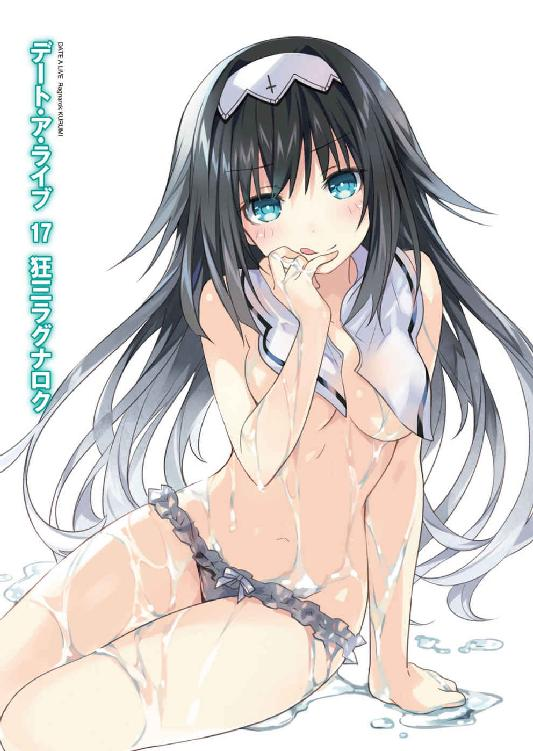
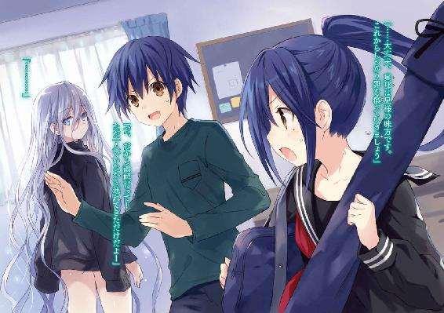
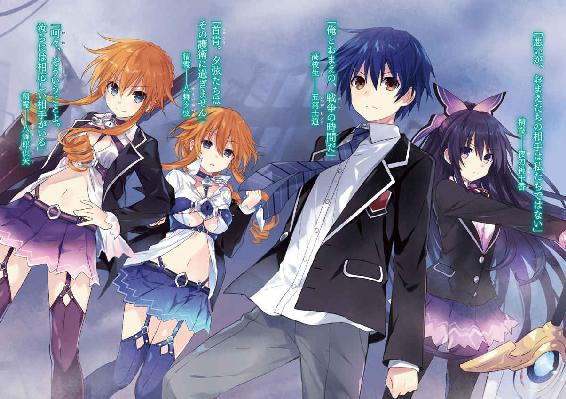
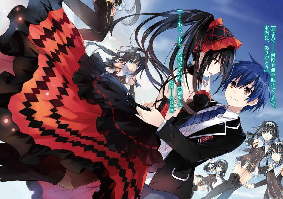
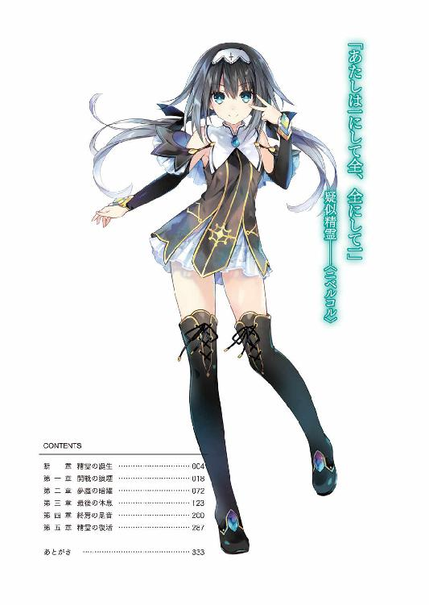
デート・ア・ライブ17
狂三ラグナロク
橘 公司

富士見ファンタジア文庫
本作品の全部または一部を無断で複製、転載、配信、送信すること、あるいはウェブサイトへの転載等を禁止します。また、本作品の内容を無断で改変、改ざん等を行うことも禁止します。
本作品購入時にご承諾いただいた規約により、有償・無償にかかわらず本作品を第三者に譲渡することはできません。
本作品を示すサムネイルなどのイメージ画像は、再ダウンロード時に予告なく変更される場合があります。
本作品の内容は、底本発行時の取材・執筆内容にもとづきます。
本作品は縦書きでレイアウトされています。
また、ご覧になるリーディングシステムにより、表示の差が認められることがあります。
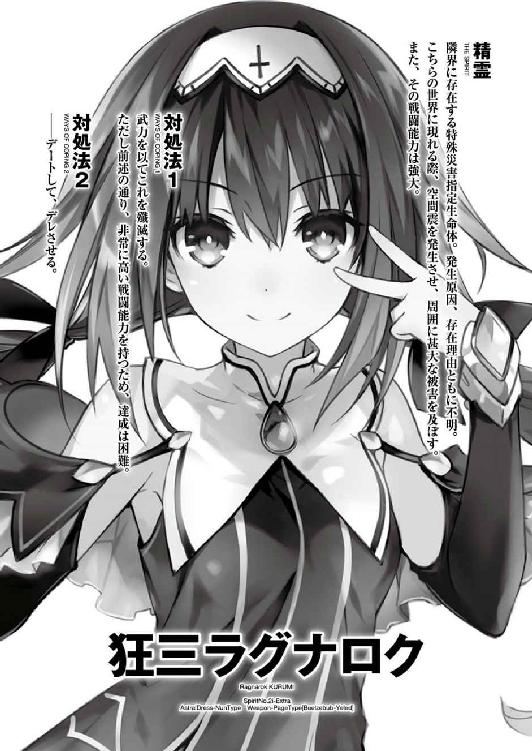
断章 精霊の誕生
「......えいっ！ えいっ！」
山間の小さな集落。そのほど近くにある花畑で、これまた小さな少女が、必死の形相をしながら両手を前に掲げていた。
淡い色の金髪と、深い海のような碧眼をした、歳の頃七歳くらいの女の子である。先ほどから全身に力を込めているためか、髪と同様に色素の薄い頰には朱が差し、額には玉のような汗が浮かんでいた。まるで今にも頰が膨れあがり、パンクしてしまいそうな様相である。
「だぁーかーらー、そんなに力んでも仕方ないんだって。もっと心を落ち着けて、優しく触るような感覚だよ」
そんな少女を見て、隣にいた活発そうな少年がため息を吐きながら肩をすくめる。
「見てな」
少年はそう言うと、すっと目を細めたのち、指を一本立てた。
すると次の瞬間、周囲の花からキラキラとした輝きがゆらりと立ち上り、少年の指さす方向へと向かってゆっくりと移動していった。
「ふわ......」
少女はそんな光景をまじまじと見たのち、またも眉間に皺を寄せながら全身をぷるぷると震わせ始めた。
「ふんぬぬぬぬぬぬぬぬ......！」
「いや、だからな」
何もわかっていない少女に、少年が半眼を作る。
と、そこで、後方からそんな二人の名を呼ぶ声が響いた。
「──エリオット、エレン。こんなところにいたのかい」
「ん？」
「ぷは......っ」
少年──エリオットが振り向き、少女──エレンが、止めていた息を吐き出す。
見やるとそこには、いつ現れたのか、線の細い少年の姿があった。
くすんだような色のアッシュブロンドが特徴的な少年である。歳はエリオットより一つ下の一〇歳であるはずだが、どこか大人びているというか、老獪な雰囲気を漂わせていた。
「アイク！」
彼の姿を認めたエレンが、パァッと顔を輝かせる。アイクと呼ばれた少年はにこりと微笑みながら二人のもとに歩み寄ってきた。
「二人とも、またこんなところで練習をしていたのかい？」
「仕方ないだろ。エレンの奴、一向に成功しねえんだから。カレンの方は優秀だってのに、なんで姉妹でここまで差が出るもんかね」
エリオットがやれやれといった調子で言うと、エレンが目に大粒の涙を浮かべてしゃくり上げ始めた。
「......そんなこと言ったって、私だって、好きでできないわけじゃないもん......」
「ああもう、泣くなって！ ごめんごめん、俺が悪かったから！」
エリオットが謝ると、エレンは目に浮かんだ涙を手の甲で拭いながら、ぐすぐすと鼻を啜った。そんなエレンの頭を、アイクが優しく撫でる。
「大丈夫だよ、エレン。僕も手伝うから、修練場の方に行こう。ほら、エリオットも。外でマナの可視化をすると、また先生に怒られるよ？」
アイクの言葉に、エリオットは嘆息しながら腕組みした。
「へえへえ。大人たちはみんな怖がりだからな。好きこのんでこんな辺鄙な場所まで来る奴なんていやしないってのに」
「まあ、そう言わないでやってよ。仕方ないのさ。先生たちの世代は、特に魔術師への迫害が激しかったっていうから」
言って、アイクが苦笑する。エリオットはもう一度ふうと吐息した。
──『魔術師』。
そう。世界には、その名で呼ばれる者たちが実在する。
あるときは呪術師と、あるときは占術師と、あるときは薬師と、そしてあるときは魔女などと呼ばれながら、常人の思考の埒外に、彼らは存在し続けていたのだ。
さりとて、おとぎ話に登場する魔法使いの如く、杖を一振りすれば望む事象を起こすことができるわけではない。
魔術とは、常人には見えないものを見、触れることのできないものに触れることのできる素養を持った者が、その能力を高めるために修める学問であり、一つの文化体系であったのである。
そしてエリオットたちは、そんな魔術師としての素養を受け継ぐ血族の末裔であった。
「にしてもだよ。いくらなんでも怖がりすぎじゃねえの？ 先生たちなら普通の人間と喧嘩したって負けやしないだろ」
「まあ、そうだろうね」
「だろ？ だったら見られたくらいで──」
「でも、それが一対一〇〇なら、一対一〇〇〇なら話は別だろう？」
「そりゃあ......うーん......」
「そういうことさ。人は己と違うモノを恐れる。そして恐れは暴走と狂気を生む。知られないというのは、何ものにも勝る美徳だよ」
「けっ、おまえの話はよくわかんねぇよ」
エリオットがプイと顔を背けながら言うと、アイクはふふっと大人じみた笑みを浮かべて、歩いていった。
──だが、エリオットがその言葉の意味を知るのに、そう時間は要らなかった。
「あ......あ......」
数ヶ月後。
大火に焼かれる故郷を丘の上から見下ろしながら、エリオットは呆然と喉を震わせていた。
火の不始末や寝煙草が原因でないことは明白である。明確な害意を、殺意を以て、何者かが火を放ったのだ。
辛うじて燃える家々から逃げ出した人々が、外に控えていた男たちによって銃撃され、その場に倒れ伏す。
彼らが一体何者かはわからなかったが、その狙いが、魔術師たちの根絶にあることは疑いようがなかった。
「エリオット......エリオット！ 村が、私たちの村が！」
「......ッ、大声を出すな、エレン......」
「でも......！」
未だ声を上げようとするエレンをぎゅうと抱き締める。エリオットの胸に、じわりと彼女の涙が滲んできた。一緒に避難していたエレンの妹・カレンもまた、唇を嚙み締めながらエリオットの服の裾を摑んでいる。
突然に過ぎる、故郷の喪失。それは一〇歳前後に過ぎない少年少女たちが受け止めるには、重すぎる惨劇であった。
が──そんな中、ただ一人だけ。
さしたる狼狽もなく燃える村を見下ろしている少年の姿があった。
「............」
アイクは、顔を熱風に煽られながらも目を閉じることなく、燼となる村を、撃ち殺される同胞たちをただじっと見つめていた。
「アイク......？」
彼が何を考えているのかは窺い知れなかったけれど──エリオットは、火に照らされるその横顔に、途方もない違和感のようなものを覚えてしまった。
人類の中の異端たる魔術師。彼はその中でも、まるで別種の生物のような──
「エリオット、エレン、カレン」
と。エリオットの思考を遮るように、アイクが、逃げ延びた皆の名を呼んだ。
「──世界を、創ろう。人類を放逐し、魔術師のための世界を。これは彼らから始めたんだ。僕らがやってはいけない道理はないだろう？」
そして、宣言する。
──思えばそれが、ＤＥＭインダストリーの、最も古い始まりの記憶であった。
それから十数年。エリオットたちは魔術の研究に没頭した。
無論、一〇歳程度の子供たちが生きていけるほど世の中は甘くない。最初の数年こそ孤児院の世話になる必要があった。
けれど、聡明な美少年であるアイクが資産家の老夫婦に気に入られるまでにさほどの時間はかからなかったし、その老夫婦が不幸な事故で亡くなってしまうのにもまた、さしたる時間はかからなかった。
果たして、十分な資産と隠れ蓑を手に入れたアイクはエリオットたちを家に招き入れ、時間の許す限り、思うさま神秘を舐った。
神智学。隠秘学。錬金術。そしてカバラ。『人間』に公開するために作られたフェイクの中から、丹念に丹念に『本物』を掬い取っていった。
そして──そのときはやってきたのだ。
──その日。
ユーラシア大陸中央部には、嵐の到来を告げるように静かに風が凪いでいた。
野に立つ影は三つである。
アイク、エリオット、エレン。
あの頃から見違えるように成長した三人の魔術師が、そこにいた。
「──さあ、始めようか。カレン、準備を」
『はい』
アイクの言葉に合わせ、通信機から観測所にいるカレンの声が聞こえてくる。
それと同時、円形を描くように設置された装置──魔力炉が、低い唸りを伴って駆動し始めた。
天から、地から、空気中から。
この世界を構成するありとあらゆる物質に宿るエネルギーが、キラキラという光となって周囲に渦を巻いていく。
──『精霊術式』。
それが、エリオットたちがその儀式に付けた名称だった。
世界に在るマナを一点に集め、新たな生命を作り出す。
そしてその力を取り込むことにより、本や呪文に齧り付き僅かなマナを弄り回すことしかできなかったエリオットたちは、空想の世界に在る全能の魔法使いとなるのである。
「アイク。これで──」
「ああ。精霊は生まれる。──世界を覆い尽くす新たな世界を伴って」
エレンの言葉に、アイクは唇の端を上げながらそう言った。
「──随意領域。人が思い描いたことを現実とする、万能の空間。計算が正しければ、これより生まれ出でる精霊が持つその空間は、地球を覆い尽くすほどの規模を誇っているはずだ。それこそ、もう一つの世界──隣界、とでも呼ぶべき規模をね」
アイクが、前に突き出した手を拳の形にする。
「それが、我々の世界だ。我々は隣界で以て、この世界を上書きする」
「............」
エリオットは、その言葉を聞いて、その横顔を見て、こくんと喉を鳴らした。
今さらアイクの言うことに異議を唱えるつもりはない。そのために、エリオットたちは十数年の月日を捧げてきたのだから。
けれど、何故だろうか──
希望を語るアイクの横顔が、あの日見た顔と、被って見えてしまったのである。
「──時間だ。精霊が現れる際には余波が予測される。エリオット、護符の準備を」
「......っ、ああ」
エリオットは小さく肩を震わせると、護符を取り出してマナを集め、三人を覆う障壁を作り出した。
次の瞬間。
「────ッ！」
凄まじい衝撃とともに、視界が真っ白に染まった。
障壁を張っているというのに全身を振動が襲い、一瞬耳さえ聞こえなくなる。
まるで頭の直上にミサイルでも落とされたかと錯覚するような、馬鹿げた規模の大爆発。地面が抉り取られ、障壁ごと落下していくかのような感覚がエリオットたちを襲う。
「はぁ......っ、はぁ......っ」
しばしのあと、振動が収まってから、ようやくエリオットは障壁を解いた。
そして土煙が晴れるのを待って辺りを見回し──言葉を失う。
何も、なかった。
野も、山々も、遥か遠くに見えていた街のシルエットも。
全てが、一切合切消え去ってしまっていたのである。
否──正確に言うならば、一つだけ。
今までなかったものが、エリオットたちの前に、浮遊していた。
「......ふ、はは、はははははははははっ」
アイクの哄笑が、何も無くなった地平に響き渡る。
──それは、少女だった。
全身に淡い輝きを纏った美しい少女が、そこに現れていたのである。
──精霊。
長きに亘る因縁の、始まりの瞬間であった。
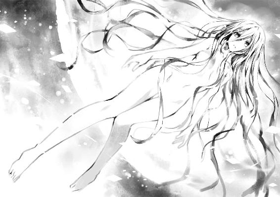
第一章 開戦の狼煙
「────、......っ──」
自分では声を発したつもりだったのだけれど、唇から漏れたのは掠れた吐息のみだった。
極度の緊張と興奮は僅かな時間で容赦なく身体と精神を疲弊させる。時崎狂三は微かに足を震わせると、そのままその場にへたり込んだ。
「『わたくし』！」
「大丈夫ですの？」
すると、周りにいた少女たちが心配そうに声をかけてくる。
左右不均等に結われた髪に、時計のような左目。全員が狂三と同じ貌をした、狂三の分身体たちである。
狂三は数度渇いた咳をしたあと、ゆっくりと立ち上がった。
「ええ......大事ありませんわ」
今、狂三たちがいるのは、深夜のビルの屋上であった。月は雲に隠れており、地上の明かりのみがぼんやりと辺りを照らしている。
「............」
狂三は闇に紛れた自分の影をジッと見下ろすと、ゆっくりと足を持ちあげ──ガッ！ と踵を叩き付けた。
別に天使や、影の中に潜む分身体を呼び出そうとしたわけではない。
ただ──今し方影の中に吞み込んだ精霊のことが気にかかっただけだ。
そう。狂三はつい先ほどまで、この場でとある精霊と相対していた。
識別名〈ファントム〉。
存在をノイズによって覆い隠された謎の存在にして、人間を精霊にする精霊。
そして、そのノイズを剝ぎ取った姿は──士道たちの副担任にして〈ラタトスク〉の解析官・村雨令音その人だったのである。
とはいえ、影を蹴りつけたからといって中の状態がわかるわけではなかった。
入り口は一つでも、狂三の影には大きく分けて二つの領域がある。
一つは、分身体たちが蠢く、出入り自在の隠れ家のような空間。
そしてもう一つは、吞み込んだ者の『時間』を根こそぎ奪い取るための、胃袋のような空間である。
無論、狂三が令音を吞み込んだのは後者だ。
その空間は狂三にとっても不随意。一度吞み込んだものを自由に吐き出すことはできないし、中の様子を窺い知ることもまた、できなかった。人間が、自分の体内を肉眼で覗き込むことができないように。
......影を蹴ったのは、ただ単に、燃え上がる情動の行き場がなかっただけだ。
如何に強大な精霊でも、あの空間に吞まれて生きていられるはずはない。狂三はシンと静まりかえった静寂の中、小さく息を吐いた。
「呆気ない──ものですわね。力を切り分けすぎた精霊など......こんなものですの」
そして自分に言い聞かせるように、そう呟く。
実際、あれが彼女の本来の力というわけではないだろう。狂三に不意を衝かれたがゆえに、天使や霊装さえも顕現させていなかったのだから。
けれど、重要なのは結果である。令音は消え、狂三はここに立っている。ただその事実のみが、この闘争の結末だった。
狂三はもう一度細く息を吐いてから視線を鋭くし、ゆっくりと顔を上げた。
「さあ──『わたくしたち』。これで終わりではありませんわ。わたくしが狙うは、今のような半端者ではなく、三〇年前の、全盛期を誇った怪物ですわ」
『............』
狂三がよく通る声でそう言うと、分身体たちが神妙な顔でうなずいた。
「そしてそのためには、士道さんの霊力が必要不可欠ですわ。──参りますわよ」
「ええ、ええ、参りましょう」
「ＤＥＭの策謀をくぐり抜け、士道さんを『わたくし』の手に」
「力を分配した〈ファントム〉がこの有様ならば、生まれ出でる前を潰すことなど容易いことですわ」
「ええ、ええ。でも──」
と、そこでふと、一人の分身体が不思議そうな顔をした。
「なぜ〈ファントム〉は、自分の力を切り分けてまで、精霊を増やしたのでしょう。それが、己の弱体化を招くのは必定でしょうに」
「............」
分身体の言葉に、狂三はしばしの間無言になった。
確かにその通りである。もしも令音が十全の力を誇っていたとしたなら、いくら狂三とて勝ちの目はなかっただろう。
己の命にさえ関わる事象である。戯れで人間を精霊にしているだけとも思えなかった。
何か──何か理由があるのだ。
自分が力を失ったとしても、為し得たい何かが。
自分の命が危険に晒されたとしても、成し得たい何かが。
「............」
けれど、いくら考えたところで答えは出なかった。唯一その回答を持っていたはずの女は、既に暗い影の中に眠っている。
「──ふん」
狂三は忌々しげに鼻を鳴らすと、分身体を伴ってその場から去っていった。
◇
「──司令！ 士道くんの反応を捕捉しました！」
天宮市上空に浮遊する空中艦〈フラクシナス〉。
その艦橋に、クルーの声がけたたましく響き渡った。
それに反応するように、艦長席に腰掛けた少女の肩と、二つ結びにされていた髪がぴくりと揺れる。
「！ でかしたわ、一体どこ!?」
〈フラクシナス〉艦長にして〈ラタトスク〉司令官・五河琴里は、くわえていたチュッパチャプスの棒をピンと立てながら、前のめりになるような格好でメインモニタに視線を注いだ。
とはいえその反応を過剰という者もいるまい。
何しろ、琴里の兄・五河士道の行方が、『最悪の精霊』時崎狂三とコンタクトを取っている最中にわからなくなっていたのだから。
数秒ののち、メインモニタに一人の少年の姿が映し出される。
中肉中背の体軀に、ふらついた足取り。顔を俯かせているため表情は見取れなかったが、間違いなく琴里の兄・士道であった。
心なしか、先ほどまでよりも衣服が汚れている気がする。それに、一緒にいたはずの狂三の姿は、どこを探しても見つからなかった。一体何があったというのだろうか。
「とにかく、一旦士道を回収してちょうだい！」
「はっ！」
琴里の声に応え、クルーがコンソールを操作する。
すると次の瞬間、微かな駆動音とともに〈フラクシナス〉が移動を開始し、モニタの中から士道の姿が搔き消えた。
そしてその数瞬後、それと入れ替わりになるような格好で、艦橋内部に設置されていた転送装置の上に、士道が淡い輝きを伴いながら出現する。
「士道！」
琴里は喉を震わせると、艦長席から立ち上がってそちらへと駆け寄った。
「無事!? 一体何があったの!? 狂三は──」
と、士道の服の袖を摑んで捲し立てるように問いを発していた琴里は、そこで不意に言葉を止めた。
士道に近づき、顔を覗き込んだことによって、その表情を見取ることができたからだ。
煩悶と、悲哀と、幾ばくかの悔恨。
そしてそれらによって形作られた──決意の表情を。
確かに士道は、狂三の霊力を封印するという確たる意志を以て彼女と対していた。けれど、今の士道から感じるのは、それさえも超えた、微かな狂気さえ滲ませた悲愴な使命感だったのである。
それこそ──自分の命を捨ててでも、何かを救わねばならないと思い詰めているかのような。
その双眸の奥に燃える輝きに、琴里は一瞬圧されてしまったのである。
「──琴里」
士道が、静かに顔を上げ、唇を開く。
「みんなを集めてくれないか。話すよ、全部。今、いや──今まで、何があったのかを。狂三が何をしたのかを。俺に、何をしてくれたのかを」
聞きたいことは山ほどあった。それに、狂三の所在が確認できていない以上、一刻も早く情報が欲しいところでもあった。実際、いつもの琴里ならば、何を勿体ぶってるのよ、と無理矢理にでも先を促していただろう。
けれど、できなかった。それくらいに有無を言わせぬ雰囲気と、触れれば砕けてしまいそうな痛ましさが、今の士道にはあったのである。
「......ええ、わかったわ」
琴里は小さく息を吞み、こくんと首を前に倒した。
そして気を取り直すように深呼吸をしてから、クルーたちに指示を発する。
「椎崎、マンションにいる精霊たちを回収して！ 箕輪は折紙、美九、二亜に連絡をお願い！ 川越、幹本は引き続き狂三の反応を探ってちょうだい！」
『了解！』
琴里の淀みない指令に、クルーたちが一斉に応える。琴里は小さく首肯すると、次いで左方に視線をやった。
「あとは令音、真那に連絡を取って──」
──と。
そこまで言いかけて、琴里は眉根を寄せた。
視線の先には、コンソールの前に腰掛けた一人の女性の姿がある。無造作に纏められた長い髪。どこか眠たげな双眸の下に浮かんだ分厚い隈。栗鼠色の軍服の胸ポケットからは、縫い傷だらけのクマのぬいぐるみがちょこんと顔を出していた。
〈ラタトスク〉解析官にして、琴里の親友・村雨令音である。
「......ん、了解した。真那も呼んでおこう」
令音がゆらりと頭を前に倒し、琴里の声に応える。
別段おかしなことはないはずだった。彼女の容貌も、声も、受け答えも、全て普段のままである。
けれど、なぜだろうか。琴里はその光景に、奇妙な違和感を覚えてしまったのである。
「......琴里？」
「っ──」
令音に名を呼ばれ、ハッと肩を揺らす。
「ああ......ごめんなさい。お願いするわ」
どうやら少し神経質になっているようだ。琴里は軽く頭を振ると、そう返して視線を元に戻した。
◇
──士道が〈フラクシナス〉に回収されてから、およそ一時間後。
『............』
艦内に設えられたブリーフィングルームは、沈黙によって支配されていた。
室内には士道を含め、一三名もの人影が見受けられる。十香、折紙、琴里、四糸乃、耶俱矢、夕弦、美九、七罪、二亜、六喰といった精霊たちに、令音、真那。そして付け加えるならば、〈フラクシナス〉の管理ＡＩであるマリアも、画面を通してこの状況を見ているはずだった。
しかしそれだけの人数が揃っているというのに、先ほどから言葉を発する者はおらず、皆押し黙って難しげな顔をしていた。中でも真那は、理解はできても納得がいかないといった様子で、腕組みしながら眉根に深い皺を刻んでいる。
とはいえ、それも無理からぬことではあった。
皆、聞いてしまったのだ。知ってしまったのだ。士道が、知らせてしまったのだ。
〈ナイトメア〉時崎狂三という精霊が如何にして生まれ、なぜ最悪の精霊という悪名を負うに至ったのかを。
そしてそんな彼女が、士道を死の運命から救うため、幾度も世界をやり直したことを。
士道は伝えた。包み隠さず、誇張なく、偽りなく。
その足跡を、その歴程を、そしてその──悲痛に過ぎる想いを。
一人でそれを受け止めることに不安を感じないといえば噓になった。どうすれば狂三の行為に報いることができるのか、皆に相談したいという思いも確かにあった。
けれど何よりも──士道は、知って欲しかったのだ。
時崎狂三という少女が、単なる私利私欲や快楽のために罪業を重ねた悪逆の徒ではないことを。
図らずも犯させられた過ちから、人を、友を、世界を救うために、茨の道を進むことを選んだ、彼女の気高い決意を。
......まあ、もしかしたら、狂三自身はそれを人に知られるのを嫌がるかもしれなかったけれど。
「むう......まさか狂三に、そのようなことがあったとは」
「びっくり......です」
沈黙を破るように声を発したのは、十香と四糸乃だった。二人とも双眸をまん丸に見開きながら、たらりと頰に汗を垂らしている。
「......にわかには信じられねーですね」
と、そこで、髪を一つに括った泣き黒子の少女が、その言葉を継いだ。
崇宮真那。〈ラタトスク〉所属の魔術師にして、自称・士道の実の妹である。その凜々しい双眸は今、懐疑と困惑で訝しげな形に歪められていた。
「あの悪逆非道人面獣心、ついでに性格最悪焼肉定食の〈ナイトメア〉が、みんなを救うつもりだった？ 悪い冗談でいやがりますね」
そう言って、オーバーアクション気味に肩をすくめる。
しかしそれも当然ではあった。何しろ真那と狂三は、今まで幾度となく剣を交えてきた、いわゆる宿敵同士だったのである。突然そんなことを言われても、すんなりと納得できるわけではないだろう。
「真那、おまえの気持ちもわかるよ。でも──」
だが。士道がそこまで言いかけたところで、真那が目を伏せながら、士道の言葉を制するように手のひらを広げてきた。
「......とはいえまあ、兄様が真那に噓を言う確率とどっちが上かと言われたら、僅差で信じざるを得ねーですけどね」
言って、真那がやれやれと吐息する。
「真那......」
「おっと、勘違いしねーでくださいね。あくまで私は兄様の言葉を信じただけで、あの女を認めたわけじゃねーですからね」
「......なんかややこしいわね......それって同義じゃないの？ いやなんとなく言いたいことはわかるけど......」
七罪が頰に汗を垂らしながら言う。けれど真那はさして気に留める様子もなく言葉を続けた。
「それより兄様、それとは別に、もう一つ気になることがありやがるんですが」
「ん......なんだ？」
士道が首を傾げると、真那は指を一本立て、真剣な眼差しで士道を見つめながら問うてきた。
「兄様が追体験したっていう〈ナイトメア〉、時崎狂三の過去。──そこに登場しやがった、『崇宮澪』って女のことです」
「............」
真那の言葉に、士道は小さく喉を鳴らした。
そう。士道は狂三の天使〈刻々帝〉の弾によって、狂三の過去を知った。
そしてその中に、崇宮澪を名乗る少女が現れたのである。
しかもその少女は、明らかに尋常な存在ではなかった。狂三に霊結晶を与えて精霊とし、その力を以て精霊を狩らせた、狂三の仇敵。いわば全ての発端とも言える存在だったのである。
加え、真那がその少女を気にするのも、十分予想できたことであった。
何しろ──『崇宮』。
澪は、真那と同じ姓を名乗っていたのだから。
しかも『ミオ』というその名は、かつて士道が霊力を暴走させてしまい、忘我の淵にあった際に口走った名であるという。
あまりに奇妙なその符合。気にするなという方が無理な話だった。
「ああ......それは俺も気になってたんだ。澪っていうのは一体何者なんだろう」
「狂三に霊結晶を与えて精霊にした......まるで私たちの前に現れた〈ファントム〉みたいよね」
士道の声に応ずるようにそう言ったのは琴里だった。腕と足を組みながら椅子に腰掛け、口にくわえたチュッパチャプスの棒を小刻みに上下させている。
〈ファントム〉。それは、琴里や折紙、美九、二亜、六喰たちに霊結晶を渡し、精霊化させたという謎の精霊の名である。確かに琴里の言うとおり、狂三の記憶の中に登場した澪と共通点が多かった。
「〈ファントム〉と同じような力を持った精霊なのか、それとも〈ファントム〉の正体こそがその崇宮澪なのか。だとしたらその目的は一体何なのか。そしてそもそも、士道や真那たちとの関連性は何なのか......謎は尽きないわね」
言って琴里が、お手上げ、とでも言うように肩をすくめる。
すると真那が、こくりと首肯してから続けた。
「もちろん偶然苗字が一緒だっただけとか、名前を騙ってるだけって可能性もゼロではねーですけども、何らかの関わりがあるという前提で考えるのなら、私や兄様の親戚筋ってところですかね？ 少なくとも、私や兄様と面識があるみてーですし」
真那があごを撫でながら言う。
なんとも要領を得ない話であるが、それも仕方のないことだった。何しろ士道と真那は、兄妹揃って仲良く過去の記憶を失っていたのである。
今でこそＤＮＡ鑑定で二人が実の兄妹であることは証明されているものの、最初に真那が士道を兄と呼んだ理由は、彼女が持っていたロケットの写真と、彼女の直感だけという、なんとも荒っぽいものであったのだ。
「うーん......どうなんだろうな。それだけではなんとも......」
と、士道が唸るようにしていると、二亜が何かに気づいたように首を傾げた。
「あれ？ でも話を聞くに、少年はそのミオっちのこと呼び捨てにしてたんでしょ？ それっておかしくない？」
「え？ 何がだ？」
「いや、だってさー、くるみんがミオっちと会ったのって何十年と前なわけでしょ？ もし親戚筋だとしたら、それこそお祖母ちゃんとか伯母ちゃんとかでもおかしくないわけじゃん。それを呼び捨てって、なんか違和感ない？ 記憶失う前の少年が随分ワイルドだったってんなら話は別だけどさー」
「あ......」
言われてみればその通りである。士道はううむと頰をかいた。
が、すぐそれに反論するように、折紙が口を開く。
「そうとも限らない。崇宮澪が精霊か、それに類する力を持っていることは疑いようのない事実。ならば時崎狂三の前に現れたときと同じ姿で、士道や真那と出会った可能性はある」
「あー、にゃるほどー。確かにあたしも封印される前は、ドンだけ夜更かししても酒バカ吞みしても、湯上がり卵肌だったもんにゃあ」
戯けるように言いながら、二亜が両手で自分の頰を撫でる。よせばにいいのに七罪がそれに「......今は？」と言い、「油断したらお肌の曲がり角を鋭いコーナーリングで溝落とし......って何言わすんじゃーい！」と楽しげなツッコミを受けていた。つくづく付き合いのよい精霊である。
士道はそんなやり取りを苦笑しながら眺めたのち、またも小さく唸った。
とはいえ、頭の中でどれだけ考えを巡らせても答えは出ない。それはそうだ。何しろあまりに情報が少なすぎる。士道か真那が少しでも昔のことを覚えていればまた話は違ったのだろうが──
「ふむん」
士道があれこれと考えていると、不意にそんな可愛らしい吐息が聞こえてきた。
そちらを見やると、精霊の一人、星宮六喰が、肩口に巻いた長い三つ編みの先端を手遊びのように弄びながら士道の方に視線を寄越していることがわかった。
「なんとも奇異な話じゃの。──じゃが主様、そんなに気になるのであれば、思い出してみればよいのではないかの」
そして、気安い調子でそう言ってくる。
なんとも無邪気な言葉。いやはやまったくその通りである。士道は一瞬目を丸くしてから苦笑した。
「あはは......そうだな。パッと思い出せればいいん......だ、が──」
が。
士道はそこでようやく、六喰の言葉の意味に気づいた。
六喰は冗談を言っているのでもなければ、士道たちの話を理解していないわけでもなかった。
まったく文字通り、そのままの意味を述べていたのだ。
「......できる、のか？」
士道が神妙な顔で問うと、六喰は当然といった様子で首肯した。
「むくの〈封解主〉は絶対の鍵。見えるもの、見えぬもの。触れられるもの、触れられぬもの。一切合切の区別なく、〈封解主〉に開けられぬものなどありはせぬ。──たとえそれが、頑なに閉ざされた記憶の扉であろうとも、じゃ」
「............」
六喰の言葉に、士道はごくんと息を吞んだ。
六喰の振るう鍵の天使〈封解主〉。
文字通り万物を『開き』、また『閉じる』力を持つ、強力無比な天使である。
確かに〈封解主〉の力があれば、閉じられた士道の記憶を呼び起こすことも可能かもしれない。士道はにわかに激しくなった動悸を抑えるように胸元に手を置いた。
否、士道だけではない。居並んだ精霊たちもまた、或いは驚きを、或いは期待を表情に滲ませながら、六喰に視線を注いでいた。
「......士道」
そんな中、もっとも顕著に反応を示したのは琴里であった。険しい顔をしながら、士道の方を見つめてくる。
その表情に滲むのは驚愕や困惑ではなく──緊張。
まるで六喰の言う〈封解主〉の可能性に気づいていながら、それを言い出せなかったといった様子だった。
「──琴里」
その表情で、琴里の思案を、懸念を察する。
もし万事が上手くいき、士道が過去の記憶を取り戻したとして、それが士道たちの望むものであるとは限らない。何しろ、士道と真那の過去に何があったのか、誰も知らないのである。
それどころか、本来の記憶を取り戻したのちも、今の士道の人格がそのまま保たれるという保証もない。過去の士道の人格に今の士道が飲み込まれる......とまでは言わないけれど、過去の記憶が士道に何らかの影響を与える可能性は否定できなかった。
──だが。
「大丈夫だ。俺は、何があってもおまえの兄ちゃんだからな」
士道はそう言うと琴里の頭をわしわしと撫で、ニッと微笑んでみせた。
「おにーちゃん......」
琴里は一瞬感極まったように目を潤ませたが、皆の目があることを思い出してか、すぐに頭を振ってフンと息を吐いた。
「......べ、別に心配なんてしてないわよ。そんな──当然のこと」
頰を赤く染めながら琴里が唇を尖らせる。その様がなんとも愛おしくて、士道は頭を撫でる力を強めた。
「はは......ああ、そうだな」
「こほんこほん」
瞬間、わざとらしい咳払いが響く。真那が少し不機嫌そうな顔をしていた。
「あ、いや、そういうわけじゃなくてだな。もちそん真那も俺の可愛い妹だぞ......？」
士道が慌てて申し開きをすると、真那は「わかってます」と言うように肩をすくめてみせた。
「冗談ですよ。今の兄様から変わってほしくねーのは真那も一緒です」
でも、と真那が続ける。
「もし過去の記憶を取り戻す手段があるなら、試してみてーのも確かです。一体崇宮澪が何者なのか、私と兄様に何があったのか、知りたいことは尽きねーです」
「......ああ」
士道は決意とともに首肯すると、目を伏せ、右手をゆっくりと持ち上げていった。
そして細く吐息しながら、精神を集中させる。
身体の中を巡っている力の流れを意識し、それに指向性を持たせるような感覚。
士道の意志に従って、精霊たちから封印した霊力が右手に押し寄せ、身体をかあっと熱くさせた。
かつてはこの感覚を摑むのに苦慮していた士道だったけれど、一度霊力を暴走させてしまってからは、集中できる環境と時間さえあれば、ある程度自由に力をコントロールすることができるようになっていた。
「──〈封解主〉」
そして喉を震わせ、天使の名を呼ぶ。
するとその声に応えるようにして、身体を巡っていた熱い感覚が右手から滲み出──先端が鍵のような形状をした巨大な錫杖が姿を現した。
「おお......！」
「〈封解主〉......」
精霊たちが息を吞むのがわかる。
士道は心を落ち着けるように深呼吸をすると、顕現した〈封解主〉を両手で持ち、自分の頭に突き刺そうとした。
......が、〈封解主〉があまりに大きすぎて、上手くいかない。そのコミカルな様子に、精霊たちが苦笑した。
「うぐ......」
「そのままでは扱いづらかろう、主様。〈封解主〉を手にしているということは、既にその力を知っているはずじゃ。【小鍵】を使うがよい」
すると六喰が、弟子に教えを授ける女仙のような調子で指を一本立てながら言ってくる。
「【小鍵】......」
士道はその言葉を復唱した。不可思議な感覚。聞いたことがない言葉だというのに、自分は既にそれを知っているのだ。
とはいえこの感覚は初めてのことではなかった。精霊たちの天使を手にすると、その権能が、頭の中にぼんやりとイメージできるようになるのである。
知らないはずのことを思い出す、奇妙な感覚。士道は頭の中でその実像を固めると、再びその名を呼んだ。
「〈封解主〉──【小鍵】」
するとそれに合わせるようにして、士道が握っていた巨大な錫杖がみるみるうちにその姿を収縮させていき、手のひらに収まるくらいの大きさに変貌した。
なるほど、これならば取り回しが利きやすい。恐らく六喰も自分の頭に鍵を刺すときは、この形態を用いていたのだろう。
「よし......」
士道は改めて呼吸を整えると、手にした鍵をゆっくりと自分のこめかみにあてがった。
「──じゃあ、いくぞ」
「うむ......！」
「案ずるでない。〈封解主〉を信じるのじゃ」
「あぁん！ だーりんの中にあんなトゲトゲしたものがぁ！」
「......美九、ちょっと黙ってて」
精霊たちが口々に言ってくる。士道はあははと苦笑した。
良い具合に肩から力が抜けた。士道はもう一度深呼吸をすると、一息に〈封解主〉の先端を頭に差し込んだ。
◇
──一面の、白。
『それ』を一言で表そうとしたなら、そんな表現になってしまうだろう。
信心深い者が見たなら人間に愛想を尽かした神の審判かと思い、陰謀論者が見たなら敵性国家からの核攻撃かと思い、常識に縛られた者が見たなら幻覚か白昼夢と思ったに違いない。──つまりは、そんな光景だった。
爆発。
そう、恐らくは爆発......だったのだろう。
しかし『それ』は、少年の頭の中にある『爆発』のイメージと規模が違いすぎたため、その現象に相応しい言葉を探すのに一拍のときを要してしまったのだ。
数秒前まで、彼はいつもと何ら変わらぬ日常の中にいた。
あの道を歩いていたのも、単に本を買おうと商店街に向かっていたに過ぎない。
けれど、彼が舗装された道をのんびりとした歩調で歩きながら今日の夕食のメニューに想像を巡らせていると、前方に広がる見慣れた街並みが、突如として目映い光に包まれたのだ。
否、正確に言うのならば、その街を含んだ、数十キロに及ぶであろう広大な領域が、か。
一瞬あとには、辺りに凄まじい轟音と衝撃波が吹き荒れ、彼の身体は木の葉の如く軽々と吹き飛ばされてしまった。
「く......あ......っ！」
地面に、崩れた塀に叩き付けられ、苦悶の声を発する。
数瞬ののち、空気を震わせていた衝撃波が収まり、転じて辺りに静寂が満ちる。
否、正しく言うのならば、先ほど響いたあまりの轟音に、一時的に耳が聞こえづらくなってしまっているらしかった。
「ぐ......」
身体の上に降り注いだ建物の砕片や小石を払い、痛みを堪えて身を起こす。
「なんだ......一体......、何が起こったっていうんだ......？」
少年は霞む目を擦りながら顔を上げた。そして──
「な──」
前方に広がる景色を見て、言葉を失った。
何かがあったわけではない。
ただ、何もなかっただけだ。
ビルも、家々も、車も、電信柱も、信号機も、街路樹も、道路も、そして──人の姿も。
『街』という言葉を思い浮かべたとき当然想定されるであろう要素が、何一つそこには存在していなかった。
あるのは綺麗に削り取られた地面と、吹き荒ぶ風のみである。
あれだけの大爆発が起こったのだからそれも当然と思ったが──違う。
強烈な、違和感。彼は目を見開いたままもう一度辺りを見やった。
明らかに、瓦礫の数が少ない。
もしこれが隕石の衝突や爆弾、あるいはガス爆発などによるものだとしたなら、そこにあるものを破壊はしても、その残骸は周囲に撒き散らされるはずである。
しかし今彼の周りに散らばった瓦礫は、爆発そのものではなく、その余波によって壊された建造物のものばかりだった。
車の残骸も、木々の破片も──人の死体も。
爆心地と思しき場所には、当然そこにあるべきものが、存在していなかった。
そう。数十キロに及ぶやもしれない広大に過ぎる領域が更地になっているというのに、そこに在ったであろう膨大な物質が、生物が、どこにも見当たらなかったのである。
まるで──その範囲だけが消去されてしまったかのように。
「............」
否──少年はごくりと唾液を飲み下し、自分の考えを否定した。
確かに異常。常識では考えられない事態である。
けれども、この現象に全く心当たりがないかと問われれば、答えは否だったのだ。
──空間震。
数ヶ月前ユーラシア大陸に大穴を開けたという、原因不明の大災害。
その世紀の大事件は、連日のようにテレビや新聞を賑わせていた。そして、それに続くように世界各地で小規模な空間震が発生しているということも。
今彼の目の前に広がった光景は、テレビで見た空撮映像とそっくりだったのである。
「これが......空間震......？」
彼は呆然と呟くと、再度その光景を見渡し、身震いした。
人類史に類を見ない極大災害だと知ってはいた。対処法も回避法もわからない悪魔の賽だと認識はしていた。
けれどそれを目の前に──しかも、あと数分家を出るのが早かったなら、巻き込まれてしまっていたやもしれない状況で──示されると、どこか作り物めいていた感覚に、途端に血が通い始めたのだった。
だが。
「......ッ!?」
次の瞬間、彼は恐怖以外の感情で以て身体を震わせた。
遥か前方──まっさらになってしまった大地の上に、小さな小さな人影のようなものが見えたからだ。
普通であれば、あんなにも距離を隔てた場所にある人影など見取れるはずもない。あらゆる遮蔽物、障害物が全て消え去ってしまっていたがゆえの事象だった。
あの爆発の中、生き残りがいたとは考えづらかったが、建物の地下に潜っていた人が這い出てきたという可能性はゼロではなかった。
「ち......」
彼とて、今し方大爆発が起こった場所になど足を踏み入れたくはない。何しろ原因は不明。もう一度同じ爆発が起こらない保証はどこにもなかったのだ。
しかし。もしかしたらあの人は怪我をしているかもしれない。もしかしたら、その場から動けずにいるかもしれない。──そんな想像が頭を掠めた瞬間、彼の足は半ば自動的に動いていた。
僅か前までは人々の営みが溢れていた死の空間を、一直線に走っていく。
早くあの人影の状態を確認しなければという思いと、もしもの場合はその人物を担いでここを離れなければという焦燥が、彼の足をいつもより早く動かしていた。
──が。
「そこのあなた！ 大丈夫で──」
どれくらい地面を駆けただろうか。ようやくその人影の実像がはっきりと捉えられる距離まできたところで。
彼は、思わずその場に足を止めてしまった。
「え──」
喉から、半ば無意識のうちに声が漏れる。
理由は、至極単純なものだった。
あらゆるものが消し去られた大地に蹲った、一糸まとわぬ姿の少女。
その存在が、彼をその場に釘付けてしまったのだ。
視線を、
注意を、
心をも、
──一瞬にして、奪い去られた。
それくらい、
あまりにも、
尋常でなく、
彼女は、暴力的なまでに、美しかったのである。
「君、は......」
「........................」
少年の言葉を聞いて、初めて彼の存在に気づいたかのように、少女がゆらりと顔を上げる。
──どくん、と。
心臓が、収縮する。
「......、......、......」
少女の唇が、微かに動く。
少年は、その声を──
◇
「............君は」
ぼうっとした意識の中に、そんな声が聞こえてくる。
それが自分の喉から漏れたものらしいことに気づいたのは、それから数秒経ってからだった。
「へ......？ あれ、ここは......」
滲む視界が実像を帯びていく。見覚えのある部屋。どうやら、〈フラクシナス〉の医務室に寝かされているらしい。
「......ああ、目覚めたかい、シン」
そこで頭上から自分のものではない声が響いてきて、士道はあごを上げる要領で視線をそちらにやった。
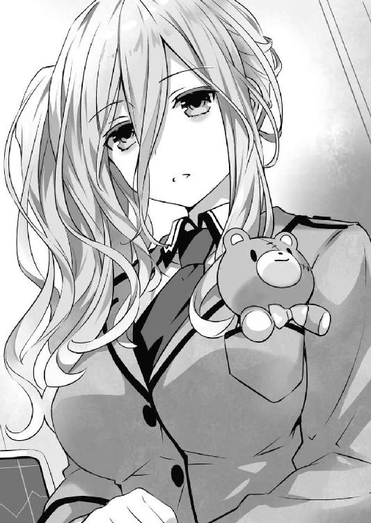
「んな......っ!?」
そして、思わず目を見開く。
どうやらベッドの枕元に令音が立っていたらしいのだが、士道の位置からだと、顔より先にその暴力的なバストが目に入ってしまったのである。
「......ん？ どうかしたかね」
「あ、いや、なんでもないです......」
頰を赤くしながら、気まずげに顔を横に逸らす。
すると、ベッドの横で士道を見守っていたらしい精霊たちの姿が目に入った。
「シドー！ 大丈夫か！」
「無理......しないでください」
心配そうな顔をした精霊たちが士道のもとに駆け寄り、口々に言ってくる。士道は困惑気味に返した。
「な、なんだなんだ。どうしたんだよ、一体」
「どうしたんだよ、じゃないし！ いきなり倒れたもんだからびっくりしたし！」
「首肯。〈封解主〉を頭に差し込んだあと、しばらくぶつぶつと言ったのち、気を失ってしまったのです」
「え......」
八舞姉妹の言葉に、士道は小さく首を傾げ──「あ」と声を零した。
そうだ。彼女らの言うとおり士道の記憶は、〈封解主〉を頭に差し込んだところで途絶えていたのである。
「そっか......ごめん、心配かけちまったな」
「いえ、目覚めて何よりよ」
「そうですよー。大事がなくてよかったですー」
「さすが私のキス。眠り姫が目覚めた」
「え......っ!?」
皆の声に紛れて、折紙がしれっととんでもないことを言う。士道は驚愕に目を見開いた。
が、すぐに琴里が折紙の側頭部をコンと小突く。
「何適当なこと言ってるのよ！ 士道も信じないの！」
「だが待ってほしい。この空間には数多の分子が浮遊しているわけで、私の呼気に含まれる分子が士道の口に触れていないとは言い切れない。つまり間接キスをしていたと見なしても問題ないのでは」
「!? ちょ、ちょっと待ってください教授！ ということは、先ほどからずっと同じ部屋にいる私と皆さんは......！」
「組んずほぐれつディープキス状態」
「在野にこんな天才が！ 学会は一体何をしているんですかー！」
鳶一教授の画期的学説に、誘宵研究員が興奮気味に賛同を示す。琴里が額に手を置きながらはあと吐息するのが見えた。
と、そんな中、一人申し訳なさそうに肩をすぼませている少女がいた。──六喰だ。
「むん......」
「六喰？」
士道が声を掛けると、六喰はピクッと身体を震わせてから言葉を続けてきた。
「......すまぬのじゃ、主様。むくが〈封解主〉を使えなどと言ったばかりに......」
言って、六喰がすまなさそうに表情を曇らせる。
士道はふっと息を吐くと、大丈夫！ というように身体を起こしてみせた。
「ほら、見ての通りだ。何も問題ないって。ていうかそもそも、六喰のせいなんかじゃないよ。実は今朝から寝不足で調子が悪かったんだ」
「主様......」
士道の意を察したのか、六喰はこくんと首を前に倒した。
その様子に、精霊たちも頰を緩める。
すると、それから数秒後。皆の話が一段落するのを待っていたかのように、壁際の方から真那の声が聞こえてきた。
「──で、起き抜けに悪ーですけど、兄様。どうだったんですか？」
「え？」
「だから、〈封解主〉の結果ですよ。見たところ人格が変わったりはしてねーみたいですけど......何か、思い出しやがりましたか？」
『............』
真那の言葉に、皆がごくりと息を吞む。精霊たちの視線が、一斉に士道に集まった。
真那の質問ももっともである。そもそも士道は、失われた過去の記憶に『崇宮澪』の手がかりがないかを探すために〈封解主〉を使ったのだ。
そして──士道は見た。
自分のものでありながら、自分のものでない記憶を。
目にしたことがないはずの、既知の光景を。
「ああ、それは......」
が。士道はそこで言葉を止めた。
とはいえ別に勿体ぶろうというつもりはなかったし、皆に記憶のことを秘密にしようという意図もなかった。
ただ単純に──何を見たのかがよく思い出せなかったのである。
「あれ......おかしいな。確かに......俺は、何かを見たんだ」
額に手を当てながら、唸るように声を発する。けれど頭の中で霧散した光景は、いくら考えを巡らせても実像を結ぶことはなかった。
たとえるならば、夢から醒めたあとのような感覚。確かに一瞬前まで夢を見ていたはずなのに、目を覚ました瞬間、その世界が砂糖菓子のように砕けてしまい、『何かを見ていた』という夢の残骸のような実感だけが頭に残っているのだ。
「......くそ、一体何なんだ。なんで俺は、こんな大事なことを......」
と、士道が頭を抱えていると、ふとその肩に優しく手が置かれた。──令音だ。
「......落ち着くんだ、シン。焦ることはない。また別の方法を考えればいいさ」
「令音さん......」
士道が顔を上げると、部屋にいた精霊たちも、それに同意するようにうんうんとうなずいてきた。
「そうだぞシドー。きっと何か方法があるはずだ！」
「......まあ、別にゼロがゼロになっただけだし、気にしなくていいんじゃない？」
「ねー、少年たら焦らし上手ー」
「......ああ、そうだな。ありがとう、みんな」
皆に言われ、吐息とともにそう応える。
正直なところ、無力感と軽い自己嫌悪に苛まれてはいたのだけれど、そんな姿を見せて皆を不安がらせるわけにはいかない。士道は気を取り直すように両手で頰を張ると、「よし」と顔を上げた。
「その意気です、兄様。──ついては、一つ提案がありやがるんですが」
と、真那が指を一本立てながら言ってくる。士道は不思議そうに首を傾げた。
「提案？」
「ええ。さっき使った天使──〈封解主〉って言いやがりましたよね。あれ、今度は真那の頭に刺してみてくれねーですかね？」
「え......？」
言われて、目を丸くする。
だが、真那の言わんとしていることはすぐにわかった。
記憶をなくしているのは士道だけではない。真那もまた、過去の記憶が封印されているのだ。
そして、士道の実妹である以上、彼女の記憶の中にも『崇宮澪』の情報があるかもしれない。確かに、その提案は理に適っているように思えた。
「なるほど、確かに......」
しかしそこで、そんな真那と士道の間に入るように、琴里がすっと前に進み出てきた。
「はいはい、それはまた今度ね。とりあえず、士道の回復を待ちましょ？」
「え？ いや、俺ならもう......」
と、士道が声を上げようとしたところで、今度は何かを察したらしい二亜が割り込んできた。
「そうそう、男の子は一回出したらしばらく休憩しないといけないんだから。少年が若いからって無理させちゃ駄目よマナティ。あ、天使のことだかんね？」
などと言いながら、ちらと士道の方に視線を送ってくる。
士道は数秒の間ポカンとその様子を見ていたが──やがて二人の考えに気づいた。
「あ......」
確かに真那の記憶は封印されている。
しかしそれは、士道たちが望む『崇宮澪』の情報のみではなく、真那がかつてＤＥＭインダストリーに捕まり、身体に魔力処理を施された際のものをも含んでいるのだ。
一体彼女がどのような仕打ちを受けたのかはわからないが、決して愉快でないものであることだけは確かだろう。
〈封解主〉が記憶を選択して解錠してくれる保証がない以上、真那への使用は避けた方がよさそうだった。
「......そうだな。悪い、真那。また今度にしてくれないか？」
「ふむ......」
士道が言うと、真那は口をへの字に結びながらあごを撫でた。
士道たちの意図を完全に理解したわけではなさそうだったが、何か理由があることは察したのだろう。ふうと息を吐き、ヒラヒラと手を振る。
「わかりました。兄様たちがそう言うのなら、そうしておきましょう」
言って、存外あっさりと引き下がる。
相変わらず物わかりがいいというか、さっぱりとした少女である。見た目は中学生程度に見える真那だけれど、その思慮深さと貫禄はまさに大人のそれだった。正直、たまにどちらが年上かわからなくなるくらいに。
「ああ......悪いな、真那」
「いえ。こちらこそ無理を言って申し訳ねーです」
真那の言葉に、琴里が安堵の息を吐く。こちらの妹様もまた、士道よりずっと頭の回転が速く、頼りになる司令官だった。
「ま、とにかく今は休んでちょうだい。『何かを見た』っていう感覚は残ってるみたいだし、もし問題ないようだったら、今度は脳波を測定しながら〈封解主〉を使ってみましょう。もしかしたら何かわかるかもしれないわ」
「ああ、そうしてくれ」
士道が言うと、琴里は首肯を以てそれに返し、パンパンと手を叩いてみせた。
「はい、じゃあみんな、一旦戻りましょ。あんまり賑やかだと、士道がゆっくり休めないわ」
「大丈夫。気配を消すのには自信がある」
「はーい！ 私子守歌歌えまーす！」
「はい！ あたし少年の寝顔スケッチできます！」
「そこの三人はトイレ行くとき監視付きね」
琴里が半眼で言いながら、精霊たちの背を押して医務室を出ていく。
士道はそんな彼女らの背を苦笑しながら見送ったのち、ゆっくりと吐息しながら再びベッドに背を落ち着けた。
「......崇宮、澪......」
そしてその名を呟きながら、天井に向かって手を上げ、指を一本ずつ動かして拳を握る。
──一つだけ。
そう、一つだけ士道は、琴里たちに言っていないことがあった。
別に情報を偽っていたわけではない。何かを見た感覚があるのに内容を思い出せないのは本当である。
けれど──なぜだろうか。
記憶にないはずの崇宮澪の名を聞くたび、思うたび、唱えるたび。
心臓がきゅうと引き絞られるかのような感覚を覚えてしまうのだった。
「............」
士道は無言で手を下ろすと、布団を被って目を閉じた。
◇
「............」
エレン・メイザースは、会社の一室で椅子に腰掛けながら、苛立たしげな様子で足を小刻みに動かしていた。
月明かりを集めたかのような淡い色のノルディックブロンドに、碧眼。ＤＥＭインダストリー第二執行部部長、などという仰々しい肩書きが付いているとは思えないくらいに歳若く、妖精のように可憐な容貌をした少女である。
けれどその美しい造作の貌は今、過度のストレスで不快そうに歪んでいた。
原因は明白である。
「──ねぇねぇ、エレンてお父様の幼馴染みなのよね？」
「昔のお父様ってどんな感じだったの？」
「ていうかアルテミシアって言いづらくない？ 愛称とかないの？」
「何になるの？ アルミ？」
「きゃははははは」
「そういえばエレン、シャンプー何使ってるの？」
「あ、枝毛」
......などと。
普段は静かな部屋の中が、まるで女子校の教室のような喧噪に包まれていたからだ。
部屋の中には今、少なく見積もっても二〇名以上の少女たちがわいわいがやがやと犇めいていた。
濃い灰色の髪に緑青の目。なんとも信じがたいことに、それら全員がまったく同じ貌をしている。
〈ニベルコル〉。魔王〈神蝕篇帙〉の力とＤＥＭインダストリーの超常技術が生み出した、疑似精霊たちである。
そんな彼女らが、容貌と同じくまったく同じ声で、四方八方からきゃあきゃあと無遠慮に世間話を投げかけてくるのだ。しかも、彼女らが誕生してからはほぼ毎日がこの調子である。もともとあまり大らかな性分とは言えないエレンにとっては、実に耐えがたい環境であった。
「......〈ニベルコル〉。もう少し静かにはできないものですか」
エレンが苛立たしげに言うと、〈ニベルコル〉たちは一体何を言われているのかわからないといった様子で目を丸くした。
「ええ？ 別に普通に話してるだけだけど」
「ねえ。やっぱり歳食うとそういうの気になるものなのかしら」
「ヒステリーってやつ？ こわーい」
「............」
騒々しい〈ニベルコル〉の声に、エレンはぴくりと眉の端を動かした。
すると向かいに座っていたアルテミシアが、エレンを宥めるように手のひらを広げてくる。
「まあまあ......悪気はないみたいだし」
「それはそれで問題です。躾のなっていない子供は猿と変わりません。悪意の有無ではなく結果を見るべきでしょう」
エレンが憤然とした調子で言うと、〈ニベルコル〉たちが不満そうにぶー、と唇を突き出した。
「何よその言いぐさ。それならエレンだって問題あるじゃない」
「そうよそうよ。普通に話してるだけなのにいちゃもんつけてさあ」
「若さへの嫉妬も大概にしてほしいわよねえ」
「顕現装置なかったら常人以下のくせに」
「もやっしっこー部長ー」
「！ 待ちなさい、最後のあだ名、一体誰に聞いたのですか......ッ」
ガタッと音を立ててエレンが席を立つ。すると〈ニベルコル〉たちが楽しそうに『きゃはは！』と笑いながら部屋中をヒラヒラと飛び回った。
「この、いい加減に──」
と。エレンは顕現装置を発動させようとし──すんでのところで思いとどまった。
エレンが立ち上がった瞬間、部屋の扉が開き、一人の男が入ってきたからだ。
闇を集め集めて人の形に押し固めたかのような印象を持つ男である。くすんだアッシュブロンドに、錆び付いたような色の双眸。歳の頃は三〇代といったところだったけれど、その年齢に見合わぬ凄味と威圧感を滲ませていた。
サー・アイザック・レイ・ペラム・ウェストコット。一代でＤＥＭインダストリーを築き上げた、魔術師たちの王である。
「──ああ、皆揃っていたかい。ちょうどよかった」
『お父様！』
その姿を認めた瞬間、部屋の中にいた〈ニベルコル〉たちが一斉にウェストコットの元に集まっていく。
「お仕事は終わったの？」
「ねえねえ聞いて、エレンったら酷いのよ」
「そうそう。あたしたちは何も悪くないのに、言いがかりをつけてくるの」
「怒ったら手がつけられないわ。フンとか投げてくるの」
「見た目はもやし、頭脳はゴリラよ」
「誰が......ッ！」
今度は思いとどまらなかった。怒号とともに、エレンの身体の周囲に不可視の随意領域が展開し、手近にいた〈ニベルコル〉の身体をぎゅうと締め付ける。〈ニベルコル〉が苦しげな声を発して消え去った。そののち、一枚の古びた紙がひらひらと床に落ちる。
別に、エレンが顕現装置で以てその身体を変質させたわけではない。彼女らはもともと書の魔王〈神蝕篇帙〉のページより生じたものだ。生命活動を断たれ、もとの姿に戻っただけである。
とはいえ、〈ニベルコル〉たちは一にして全、全にして一。記憶や人格を全員で共有する、『個』という感覚が曖昧な魔導生命体だ。
彼女にしてみればこの程度は『死』のうちに入らない。せいぜい、指先を軽く叩かれたくらいの感覚だろう。実際残った〈ニベルコル〉たちは、仲間の消滅を悲嘆する様子もなく、不満そうな顔をエレンに向けてくるのみだった。
「きゃー、ひっどーい」
「ありえなーい」
などと、またも気に障る声でキャンキャンと騒ぎ立ててくる。エレンはギロリと他の個体に視線を向けた。
が、そこでウェストコットが、至極落ち着いた声を発してくる。
「落ち着きたまえ、エレン。わざわざ味方の手数を減らすことはないだろう」
「......は。申し訳ありません、アイク」
言われて、エレンは随意領域を解除した。〈ニベルコル〉に対する苛立ちが収まったわけではないが、ウェストコットの言うことももっともだったのである。
ウェストコットは薄い笑みを浮かべると、そのまま歩みを進め、床に落ちた一枚の紙──数秒前まで〈ニベルコル〉だったもの──に手を触れた。
瞬間、紙が淡い光を帯びたかと思うと、その中から、にゅっと少女の姿が現れる。──先ほどエレンの随意領域に絞め殺された〈ニベルコル〉だ。
「べーっ！」
〈ニベルコル〉はエレンに向かって舌を出すと、ウェストコットの背後に隠れ込んだ。
「............」
正直もう一度絞め殺してやりたい気分だったが、どうにか心を落ち着け、息を吐く。
エレンは気を取り直すようにコホンと咳払いをすると、ウェストコットの方に視線をやった。
「......それで、アイク。ちょうどよかった、とは？」
「ああ」
エレンが言うと、ウェストコットは思い出したようにうなずいた。
そして右手を掲げ、そこに漆黒の本を顕現させる。
魔王〈神蝕篇帙〉。ウェストコットが精霊より奪い取った、全知の魔王である。
「少々時間を取られてしまったが、ようやく調べが付いた。──やはり、〈ナイトメア〉は我々の襲撃計画を知った上で妨害工作を行っていたようだ」
「......どういうことですか？」
「そのままの意味さ。〈ナイトメア〉は、既に襲撃の事実を知っていた......否、正しく言うのなら、実際に体験していたのさ。そして、既知の事象を覆していた。イツカシドウに訪れる死の運命を回避していた。──時の天使〈刻々帝〉の力によってね」
「な......」
ウェストコットの言葉に、エレンは思わず眉をひそめた。
が、すぐに理解する。恐ろしきは天使の力。しかしそれくらいできるようでなければ、ウェストコットが手にする意味がない。
「......なるほど。それは厄介ですね。こちらがどんな手を打とうと、あちらに対策を打たれてしまうということですか」
「ふーん。やっぱりかー」
「なんかあの子、おかしかったものね。まるであたしたちが出るタイミングを知っているみたいだったし」
「ね。でなければ、エレンはまだしもあたしたちが失敗するなんてありえないものね」
「......今日は羽虫がうるさいですね。殺虫剤でも撒きましょうか」
エレンがギロリと睨み付けると、〈ニベルコル〉は「きゃー！」「お父様こわーい！」とわざとらしい悲鳴を上げてウェストコットに縋り付いた。
「とにかく。〈ナイトメア〉の手に〈刻々帝〉がある限り、我々は後手に回ってしまうということですね」
「そうなるね。──しかしまあ、それは不利なことばかりではないさ」
「と、言いますと？」
エレンが問うと、ウェストコットは唇の端を歪めた。
「我々にとっては数度目の作戦が、〈ナイトメア〉にとっては数百度目。同じことの繰り返しというのは想像以上に精神を疲弊させる。その度、愛しい相手の死に顔を見ているとなれば尚更ね」
「............」
言われて、エレンは思い描いた。自分が親愛を覚える相手が幾度となく殺され、それを回避するために終わりの知れぬトライアンドエラーを繰り返す様を。
──最強の魔術師エレンをしてなお、怖気を震う。それに今まで耐えてきた〈ナイトメア〉時崎狂三に、敵ながら敬意を覚えそうになるほどに。
「......〈ナイトメア〉が諦めるのを待つ、ということですか？」
「まあ、それが確実だろうね。何、こちらにとってはせいぜい数日の出来事さ。待つといってもさほどの手間じゃあない」
とはいえ、とウェストコットが続ける。
「永遠の時間というのはただそれだけで恐ろしい。幾千幾万の繰り返しの中、彼女が、こちらの思いも寄らない解決法を導き出さないとも限らない。──ならば、少しでも早く諦めてくれるよう、こちらも全力を尽くさねばならないだろうね」
「全力、ですか」
「ああ。文字通りさ。──ＤＥＭインダストリーの持つ実行力を全て振るい、イツカシドウを完全に叩き潰す。〈ナイトメア〉が全てを知っていたとしても、絶対に回避不可能と思わせるくらいに、希望も、理想も、一切合切ね」
そう言って、ウェストコットが笑みを濃くする。
すると、その瞬間。部屋の天井に設えられていた通風口から何やら音がしたかと思うと、そこから数枚の紙が部屋の中に落ちてきた。
古びた紙はヒラヒラと宙を舞うと、床に触れる寸前に淡い輝きを放ち、少女の姿に変貌する。──無論、〈ニベルコル〉の姿に。
「お父様、お父様。見て見て」
「こんなの捕まえたわ」
言って、〈ニベルコル〉が後ろ手に持っていたものをウェストコットの前に掲げる。
それを見て、エレンは微かに眉根を寄せた。
「......っ」
「これは......」
隣にいたアルテミシアもまた、驚きに目を見開く。
しかしそれも当然だった。〈ニベルコル〉が持っていたのは、切断された少女の首であったのだから。
左右不均等に括られた黒髪に、白い肌。閉じきっていない左目からは、時計の文字盤のような紋様が覗いている。首を切られてから間がないためか、首の切断面からぼたぼたと血が垂れていた。
このような特徴的な貌を忘れるはずがない。──時崎狂三。ちょうど今話に出ていた精霊〈ナイトメア〉である。
彼女は天使の能力で以て、自らの過去を切り取った分身体を生成することができる。それをここに潜り込ませていたのだろう。恐らく、諜報か暗殺を目的として。
「ほう、お手柄だね、〈ニベルコル〉」
ウェストコットが言うと、〈ニベルコル〉が嬉しそうに「えへへ」とはにかんだ。彼女が手に抱えているのが血を噴く生首でなければ、微笑ましい親子のワンシーンに見えたかもしれなかった。
「でも、一緒にいた何人かは逃がしちゃったわ」
「もしかしたら、お父様たちの会話が聞かれちゃったかも」
〈ニベルコル〉が申し訳なさそうに言う。しかしウェストコットは気にした風もなく笑った。
「構わないさ。彼女の手に〈刻々帝〉がある以上、いつかは知られることだ。いいじゃあないか。我々と〈ナイトメア〉、互いに手の内を知り尽くした上で総力戦といくとしよう」
ウェストコットは、芝居がかった調子で両手を広げると、天を仰ぐようにあごを上げた。
「まだ一人くらい残っているかな、〈ナイトメア〉の尖兵よ。もしいるのなら君の主に伝えておくれ」
そして、ニイッと笑みを浮かべ、続ける。
「──イツカシドウは、私が殺す。
君が幾度時間を遡ろうと。
君が幾度世界を繰り返そうと。
君が幾度歴史をやりなおそうと。
覆しようがないくらいに徹底的に。
さあ、抗ってみたまえ──『最悪の精霊』」
その宣言に応える声はなかったけれど、なぜだろうか、エレンは辺りに蟠った影が、怒りを覚えるようにざあっと揺れるのを感じた。
第二章 夢魔の暗躍
「......ヤバイかなあ、やっぱり」
自宅の部屋で、少年は頭を抱えていた。
しかしそれも当然といえば当然のことであった。何しろ──
「......むう」
少年はちらと目の端で部屋の隅──ベッドの方を見やった。
正確には、ベッドに腰掛ける、一人の少女の姿を。
「............」
作り物のように美しい少女が、ぼうっとした様子で部屋の中をゆっくりと見回している。先ほどまで少年の着ていた上着を羽織ってはいるものの、その下には未だ何も着ておらず、彼女が動作するたびにちらちらと艶めかしい肌が覗いていた。
そう。謎の大爆発からおよそ一時間後。
少年はあろうことか、その現場のど真ん中にいた少女を、自室に連れ込んでしまっていたのである。
「......いや、いや、いや」
少年は脳裏に去来する危なげなワードを否定するように首を振った。
違うのだ。断じてやましい動機からではないのだ。不可抗力というか......仕方のないことだったのだ。
少年は頭中で言い訳がましい言葉を繰り返しながら、一時間前の出来事をぼんやりと思い起こした。
（──き、君、大丈夫か？ 怪我は？）
文明の潰えた地平の直中、天使か女神と見紛うばかりの少女に目を奪われていた少年は、ようやく金縛り状態から抜け出して、そんな問いを発した。無論、努めて少女の裸身に目を向けないようにしながら。
少女が一体何者かはわからなかったが、今この状況が尋常なものでないことだけは確かである。まずはこの奇跡的な生存者の状態を確認することが先決だろうと考えたのだ。
しかし少女は、少年の声に反応するようにゆらりと視線を寄越してはきたものの、何を話すでもなく、そのままジッと少年の顔を見つめるのみだった。
（う......）
少年は、自分を見つめる宝石のような双眸を見て、一層頰を赤くした。
すると少女が、ようやくその唇を開く。
（......、あ......、う......）
だが、それはおよそ言語と呼べるものではなかった。呻き──否、苦しげというわけでもない、ただ喉を震わせて音を発しただけといった様子だ。
（......？ し、喋れない......のか？）
少年は眉をひそめ、思考を巡らせた。
──もしや、あの爆発のショックで喋れなくなってしまっているのだろうか。服を纏っていないのも、それに巻き込まれたからと考えればまあ、わからなくもない。とはいえそれにしては、彼女の肌に傷一つ付いていないのだが。......それとももしや彼女は悪の秘密結社に捕らわれていた特別な少女で、こう、ＳＦ作品で見るような巨大な円筒形のポッドに全裸で入れられていたとか、そういう感じだろうか。先ほどの爆発はその秘密結社の実験失敗によるもので、地下に捕らわれていた彼女は偶然脱出を......
（......ああもう、なんでもいい）
少年は頭の中で展開されるスペクタクルストーリーを振り払うように頭を振ると、着ていた上着を脱ぎ、少女に着せてやった。
さすがにこのままでは風邪を引いてしまうやもしれなかったし──何より、神聖ささえ覚える彼女の裸身を空気に晒しているのが耐えられなかったのである。
（......！ っ......？）
上着が肩に触れた瞬間、少女が驚いたように目を見開き、身体を微かに震わせた。
（あ、ご、ごめん......驚かせたか？ でも、さすがにそのままじゃ......）
少年が慌てながら弁明をすると、少女は目をぱちぱちと瞬かせながら、肩に掛けられた上着をさすったり、引っ張ったりし始めた。
（............）
そしてやがて、それが暖かいものであることを理解したように、ホッとした様子の表情を作る。
（あ、あの......歩けるか？ いや、裸足じゃ痛いか。もし嫌じゃなかったらおぶるから、とにかくここから移動しよう。君、自分の家なんかは......）
（......？）
少年の言葉に、少女がキョトンとした目をする。
（......わかるわけないか）
少年は頰をかきながら苦笑すると、少女の前にかがみ込んだ。
──そして、現在に至る。
「違うんだ。違うんだよ」
少年は誰にともなく訴えかけるように呟いた。
少年とて、最初は少女を病院に連れていこうとしたのだ。が、少女を背負ってまだ建物の残っている市街に辿りついた瞬間、街が、世紀末もかくやと言わんばかりの大混乱に陥っていることがわかったのである。
冷静に考えれば当然のことだ。何しろ何の前触れもなく、何十キロにも及ぶであろう空間が消し飛んだというのだ。辺りに撒き散らされた衝撃波で周辺環境も破壊され、怪我人の数も膨大。しかもそれらを収容すべき最寄りの大型病院は、先ほどの爆発で更地になっているというおまけつきだ。
そんな混乱状態である。少年がとりあえず一旦少女を休ませる場所として、被害を免れていた自宅を選んだのは、そうおかしな判断ではないはずだった。......少なくとも彼自身はそう自分に言い聞かせていた。
少年は四人家族であるが、両親は長期の出張で長らく家を空けている。しばらく休むくらいは問題ないはずで──
「──兄様！ 無事ですか！」
瞬間。
そんな声とともに、部屋の扉が勢いよく開け放たれた。
見やるとそこに、一人の少女がいることがわかる。一つに括られた髪に、特徴的な泣き黒子。今日は休日のはずだったが、部活があったのだろう、黒のセーラー服を纏って肩に鞄をかけ、片手に竹刀袋を握っていた。今の今まで走っていたのか、額には玉のような汗が浮かび、肩は激しく上下に揺れている。
「──真那」
少年は呼び声に返すようにその名を呼ぶと、妹が無事だったことに安堵の息を吐いた。
「......ヒッ」
が、すぐに息を詰まらせる。
少年の顔を見てホッとした様子を見せた妹の顔が、みるみるうちに怪訝そうな色に染まっていったからだ。
しかしそれも無理からぬことではある。兄の部屋に半裸の美少女がいたなら、彼女でなくともそんな顔になるだろう。
「あ、あのだな真那、これは」
「............」
真那は少年と少女の顔を交互に見つめると、しばしの間黙り込んだのち、ゆっくりと少年のもとに歩いてきて、その肩に、ポン......と優しく手を置いた。
「......大丈夫。真那は兄様の味方です。これからしっかり罪を償っていきましょう」
「何も大丈夫じゃない!?」
たまらず叫びを上げるが、真那は聞いていないようだった。少年はどうにか誤解を解こうとブンブンと首を横に振った。
「待て、待て！ なんでそうなるんだよ！ 誤解するにしてもせめて、『きゃっ、兄様ったら彼女連れてきてたんですねこれは失礼！』とかあるだろ!?」
「兄様に限ってンなことあるわけねーでしょう！ 妹舐めてやがるんですか！」
「言い切りやがったなコノヤロウ！」
「じゃあ、そうでいやがるんですか？」
「............違いますけども」
「ほら見たことじゃねーですか！」
真那の問いに、視線を逸らしながら答える。すると真那は憤然と息を吐き、竹刀袋から愛用の竹刀・貪狼丸（真那命名）を抜いて少年に斬りかかってきた。慌てて両手を上げ、額に触れる寸前で竹刀を止める。
「白状しやがりなさい！ 一体どこから攫ってきやがったんですか！」
「ぬおッ!? だ、だから誤解だって！ ただ一人でいたから連れてきただけだよ！」
「それを攫ったって言うんですよぉぉぉぉッ！」
「今自分で言っててそう思ったわぁぁぁぁッ！」
真那の叫びに、これまた絶叫で返す。確かに、字面で判断すると確実にアウトだった。
「と、とにかく話を聞いてくれ！ この子......あの爆発があった場所にいたんだよ！」
「......えっ？」
少年が訴えかけるように叫ぶと、真那はようやく竹刀を握る力を弱めた。
「どういうことでいやがりますか？」
「そのまんまだよ。さっき俺があの爆発に巻き込まれたとき──見つけたんだ」
少年は、少女と出会ったときの状況と、ここに連れてくるに至った経緯を搔い摘まんで説明した。
すると真那は「ふむ......」と考えを巡らせる仕草を見せながら、少女の方をちらと見た。
「なるほど。兄様が頭を打ったか幻覚を見たかしてねーことを前提に考えると......」
「あ、噓を吐いてる可能性っていうのは考えないんだな」
「兄様が真那に噓を吐くわけねーでしょう。真那の兄様ですよ」
少年が口を挟むと、真那はきっぱりとそう言ってきた。......兄を信じているのかいないのかわからない妹である。
「とにかく、その前提で考えた場合、異常が多すぎます。その子は一体何者で、なんでそんなところにいやがったんですか」
「さ、さあ......そんなこと俺に言われても」
少年が困り顔で答えると、真那が視線を鋭くしながら少女を睨んだ。
「......まさか、この子があの爆発を起こした、なんてことはねーですよね？」
「は......？ ば、馬鹿言うなよ。人間にあんなことできるわけが──」
「──くしゅんっ」
と、少年と真那が小声で話し込んでいると、不意にベッドの方からそんな可愛らしい声が聞こえてきた。
どうやら、少女がくしゃみをしたらしい。そういえば、上着を羽織らせはしたものの、未だ少女はその下に何も衣服を身につけていなかったのである。
「だ、大丈夫か？」
「ああもう、何やってるんですか兄様。仕方ねーですね。真那の部屋着を持ってきやがりますからちょっと待って──」
「......ん、あ......」
と。
真那が自分の部屋に向かおうとしたところで、少女がずずっと鼻を啜りながら真那の方をジッと見つめた。
すると次の瞬間、少女の周りに淡い光の粒子が纏わり付いていったかと思うと、彼女の身体に、真那が着ているのと同じデザインのセーラー服が出現していった。
「は......？」
「え......？」
目の前で起こった超常現象に、少年と真那は口をあんぐりと開けて顔を見合わせた。
◇
「......ぐふッ！」
腹部への強い衝撃で、士道は目を覚ました。
「......へっ!? へ......っ!? な、なんだ!? 襲撃か!?」
しばしの間意味がわからず、目を白黒させる。
すると自分の腹の上に、何やら見覚えのあるシルエットが屹立していることがわかった。
数秒ののち、脳が徐々に覚醒していくのに合わせ、ようやく自分の身に起こったことを理解する。
「あ、起きたー。でも駄目だよおにーちゃん。ぐふはもうやったでしょ。そういうところ気をつけて？」
言って、士道の上に立った琴里が、白いリボンで括られた髪を揺らしながらチッチッと指を揺らしてくる。
どうやら琴里に荒っぽく起こされたらしい。最近ないと油断していたため、少々驚いてしまった士道だった。
辺りを見やると、見慣れた自室の様子が見て取れる。そう。士道が今寝ていたのは〈フラクシナス〉の医務室ではなく、天宮市にある自宅の部屋だった。
あのあと医務室で一休みしたあと、皆と一緒に食事を摂り、地上へと戻ってきていたのである。
「琴里......」
「とうっ」
「うぎゅっ」
琴里が士道の腹を蹴って床に飛び降り、見事な着地を決める。その際再び衝撃が加わり、士道は短い悲鳴とともに身体を折った。
「お、おまえな......毎度のことだけどもう少し優しく起こせないか？」
「むっ、その言い方は誤解を招くなあ。それだとまるで私がいきなりおにーちゃんに飛び乗ってるみたいじゃん。いやいやそうではありません。ちゃんと普通に起こしてから、段階を踏んで仕方なくこの形になってるんだよ？ そこまでぐっすりんこなおにーちゃんサイドにも問題があると思うわけです」
「一応聞くけど、具体的にはどう起こしてるんだ？」
「階段で大きめに足音を立ててる」
「......副産物まで無駄にしない姿勢は評価します」
士道がため息交じりに言うと、琴里はその真意に気づいているのかいないのか、「えへへ、褒められちゃった」と照れくさそうに笑った。
が、すぐに何かを思い出したように半眼を作ると、ジトーッとした視線で士道を見つめてくる。
「な、なんだよ」
「んー......いや、そういえばおにーちゃん、さっき寝言で『真那』『誤解だ』『スリジャヤワルダナプラコッテ』って呟いてたなーって思って。一体どんな夢見てたの？ なんで私じゃなくて真那なのー？」
「いや最後のやつ何!? 俺そんなこと言ってたの!?」
思わず声を裏返らせ、今まで見ていた夢を必死に思い出そうとする。が、どれだけ記憶を掘り起こそうとしても、何も思い出すことはできなかった。特に最後のワードは。
すると、そんな士道を見てか、琴里が楽しげにあははと笑う。
どうやら冗談だったようだ。士道ははあとため息を吐いた。
「......ああもう。まあいいや。それで、今は何時なんだ？」
言いながら、士道はベッドの枕元に置いてあったスマートフォンに手を伸ばした。
窓からは既に明るい日差しが差し込んできている。琴里のワイルドに過ぎる起こし方を肯定するわけではないけれど、確かにいつもより眠っていたようだった。
「......って、九時!? マジかよ、もう学校始まってるじゃないか！」
スマートフォンの画面を見るなり、士道は目を見開いた。慌ててベッドから飛び起き、部屋を出ようとする。
が、そこで琴里にむんずと袖を摑まれ、その進行を阻害された。
「わっ、なんだよ琴里。......ていうかおまえも中学行かなきゃいけないだろ。せめて二時間目からでも──」
「......はあ」
士道が言うと、琴里は大きなため息を吐いた。
そしてやれやれといった調子で首を横に振り、ポケットから黒いリボンを取り出したかと思うと、慣れた手つきで髪を括り直す。
琴里特有のマインドセットである。白いリボンを着けているときは無邪気な少女。そして黒いリボンを着けているときは、凜々しい〈ラタトスク〉の司令官に変貌するのだ。
「──一体何を慌ててるのよ、士道。まさか学校に行くつもりじゃあないでしょうね？」
「いや、そりゃそうだろ......って、ん？ 今日って休みだっけ？」
どうも最近ゴタゴタしていたからか、少々曜日感覚が怪しくなっていた。もう一度手にしたスマートフォンの画面を覗き込む。......が、特に祝日というわけでもない。普通に学校がある日だった。
しかし琴里は再度ため息を吐くと、士道に言い聞かせるように続けてきた。
「あのねえ、まだ寝惚けてるの？ 今あなたはＤＥＭに命を狙われている──いえ、狂三の言葉を信じるなら、本来もう死んでるのよ？ なんでわざわざ警備が手薄、かつ周りに被害が出そうなところに行こうとするのよ」
「あ......」
言われて、士道は目を見開いた。
まったくもってその通りである。時間を見て条件反射的に身体が動いてしまったが、このような緊急事態に学校も何もないだろう。
「すまん......でも」
が......一つ。それを重々承知した上でも一つだけ、士道には学校にまだ気がかりが残っていた。
「狂三は......学校に来てるのかな。だとしたら──行かないと」
そう。確かに今、士道はＤＥＭインダストリーという巨大な組織に命を狙われている。そう軽々に動くことはできない。
しかし士道は同時に、狂三を攻略している最中でもあったのだ。
それにまだ士道は、狂三に礼の一つも言えていない。もしも狂三が士道に会うため学校にいるとしたなら、それを無視することはできなかったのである。
そんな士道の気持ちは琴里も理解してくれているのだろう。ふうと吐息しながらも、こくりと首肯してくる。
「ええ。それはわかってるわ。うちとしても、狂三を放っておくわけにはいかないし。──今、〈フラクシナス〉から学校に自律カメラを飛ばしてるわ。もし狂三の姿を認めたら、特例でコンタクトを認めてあげる。もちろん登下校時のリスクを避けるために〈フラクシナス〉から直接学校に降りてもらうことになるけど」
「ああ......ありがとう。十分だ」
言って、士道は琴里に頭を下げた。琴里がぽりぽりと頰をかきながら、少し恥ずかしそうに視線を逸らす。
が、次の瞬間。
「──あら、あら。嬉しいですわ。『わたくし』のために随分と気を回してくださいますのね」
「は──」
「え......？」
突然予想外の声が右方から響いてきて、士道と琴里はまったく同時にそちらを向いた。
するといつの間に現れたのか、そこに一人の少女の姿があることがわかる。
艶やかな黒髪。白磁の肌。そしてその足は、未だ膝下まで、床に蟠った影に浸かったままだった。
「......狂三!?」
彼女の顔を見間違えるはずがない。士道は驚愕に目を見開き、その名を呼んだ。
が──違う。士道は影からゆっくりと浮かび上がってくる彼女の容貌を見つめながら、こくんと息を吞んだ。
そこにいるのは確かに時崎狂三その人である。それは間違いない。
けれど今二人の目の前に現れた狂三は、普段のように髪を括ってはおらず、代わりに薔薇の髪飾りを着けていた。服はモノトーンのゴシックロリータ調で──何より、左目を医療用の眼帯で覆い隠している。
その外見的特徴には覚えがあった。かつて士道が五年前の世界に戻った際に出会った狂三であり──先日、狂三の真実を伝えてくれた分身体である。
「うふふ、ごきげんよう、士道さん、琴里さん」
影から完全に姿を現してから、眼帯の狂三がスカートの裾を摘まんで優雅に礼をしてみせる。
けれどそんな慇懃な挨拶にも、琴里は警戒を緩めなかった。緊張感を帯びた視線で彼女を見つめながら唇を開く。
「おはよう、狂三。今日は随分素敵な格好をしてるじゃない」
「うふふ、お上手ですわね、琴里さん。さすが、血が繫がっていないとはいえ士道さんの妹さんですわ」
狂三がたおやかに微笑んでみせる。その毒気のない様子に、琴里も少し違和感を覚えはじめたらしかった。
「......でも、マナー違反じゃないかしら？ 人様の家に勝手に上がり込むだなんて」
「あら、あら、これは失礼いたしましたわ」
琴里の言葉に、狂三が素直に頭を下げる。
が、狂三はすぐに妖しい笑みを顔に張り付けると、そのまま続けた。
「では、そのお詫びというわけではありませんけれど、代わりにいいことを教えてさしあげますわ」
「いいこと......？」
琴里が怪訝そうに眉をひそめると、狂三は「ええ、ええ」と言いながら、艶めかしい仕草で唇に指を触れさせた。
そして、まっすぐ士道と琴里を見据えながら、静かに言葉を発してくる。
「──今から四日後の二月二〇日。ＤＥＭインダストリー社が、その総力を以て士道さんを殺しにきますわ」
その、絶望的に過ぎる言葉を。
「..................は？」
その言葉が意味することがわからなかったわけではない。けれど、あまりに唐突に己の殺害計画を告げられたため、士道は目をまん丸に見開いてしまった。
「......どういうこと？」
琴里もまた、頰に汗を垂らしながら狂三を睨め付ける。すると狂三は、目を伏せながらあとを続けた。
「どういう、と仰られましても。そのままの意味ですわよ。
世界一位の顕現装置メーカーにして、世界最多の魔術師戦力を保有する組織が、全知の魔王の情報力と、幾千幾万の自動人形、そして無数の疑似精霊を、たった一人の人間を殺すことにのみ注ぎ込もうとしている──と言っているのですわ」
「な......」
士道は文字通り絶句した。
確かにＤＥＭはこれまでもたびたび士道の命を狙ってきたし、狂三の言葉によれば実際幾度も殺されていた。
とはいえ、それはあくまでこちらの隙を衝いて士道の命を刈り取っていく、いわば『暗殺』であった。
しかし、今狂三が語ったのは、明らかに圧倒的な戦力に物を言わせて敵を殲滅する──『戦争』とも呼ぶべきものだった。......否、狂三がこうして情報を提供してくれていなければ士道は備えなく押し潰されていたわけで、それは一方的な『虐殺』と言った方が適当か。
「──それで」
士道が言葉を発せずにいると、琴里が険しい顔で腕組みしながらそう言った。
「そのありがたい情報を、わざわざあなたが伝えてくれた理由は何かしら、狂三。──一体、何が目的なの？」
「あら、あら。邪推が過ぎますわよ、琴里さん。わたくしはただ、士道さんの身を案じているだけですわ」
「ふうん......」
琴里が疑わしげに目を細める。そして、眼帯の狂三の真意を探るようにその顔を睨め回した。
そんな琴里の様子に、眼帯の狂三がふふっと苦笑する。
「琴里さんは、一つ勘違いをしておられるご様子ですわね」
「......勘違い？」
「ええ、ええ」
眼帯の狂三は大仰にうなずくと、芝居がかった調子で続けた。
「分身体が今ここにいることを、『わたくし』──あなた方の呼ぶ本物の時崎狂三は知りませんの。わたくしが先ほどの情報をあなた方に流したのもまた、わたくしの独断ですわ」
「え......？」
「なんですって？」
士道と琴里は顔を困惑の色に染めた。それはそうだ。今目の前にいる眼帯の狂三は、本物の狂三の過去を切り取った分身体。基本的には、狂三の指示に従って動く尖兵であるはずだった。
そんな二人の表情を可笑しそうに眺めながら、眼帯の狂三が言葉を継いでくる。
「『わたくし』はこの件を、『わたくし』たちのみで処理するつもりですわ。──何度繰り返すことになろうと、士道さんが生き残る未来を摑み取るまで」
「......っ」
「けれど、そんな『わたくし』の行動も、敵には知られているでしょう。
──それゆえの総力戦。それゆえの殲滅戦。ＤＥＭの作戦は、単に士道さんを殺すためだけの手段ではなく、時を渡る『わたくし』の心を挫くための手管なのですわ。
奇手、奇策、奇計。そんな些事では覆しようのない、鉄の暴風雨。物語に強制的に終焉をもたらす機械仕掛けの神の名に相応しい、強攻の一手でしてよ」
「............、なるほど」
たっぷり一拍を置いてから、琴里がそんな言葉をこぼす。
「つまりあなたがここにきた理由は、士道に避難を促すため......ってわけ？ 狂三たちが戦っている間、〈ラタトスク〉に士道を保護していろと」
琴里が言うと、眼帯の狂三は「うーん......」とあごに一本指を当てた。
「確かにそうしていただけるとありがたいですけれど、それだけでは正解にはできませんわね」
「......？ なら、どうしてあなたは本物の狂三に黙って、私たちにそれを伝えにきたっていうのよ」
琴里が訝しげな顔で問う。すると眼帯の狂三は悪戯っぽく微笑んでみせた。
「単純な理由ですわ。『わたくし』がそれだけ頑張っているというのに、守られている士道さんがそれを知らないなんて、もったいないではありませんの」
言って、士道を見つめながらパチリとウインクをしてみせる。士道はドキリとしながらも苦笑した。
「......なるほどな」
「まあ......下手に講釈捏ねられるよりわかりやすくていいわ。本物の狂三も、あなたくらい話がわかると助かるのだけれど」
琴里が腕組みしながら憎まれ口を叩くと、眼帯の狂三が楽しげにケタケタと笑った。
「うふふ、ふふ。それは申し訳ありませんわ。『わたくし』、少々強情なところがありますの。──でも、士道さんを守りたいという気持ちは本当ですのよ？ それだけは、わかってあげてくださいまし」
「ふん......そのあとに、『士道の霊力を奪うため』、って言葉が付かなければ吝かじゃないけど？」
「......うふふ」
琴里が言うと、眼帯の狂三は弁解をするでもなく静かに笑った。
そしてスカートを翻しながら、くるりと後方を向く。
「──さて、わたくしの目的は達しましたわ。これで失礼いたします。『わたくし』のために、どうか生き延びてくださいまし、士道さん」
言って、眼帯の狂三が、自分の影の中にずぷずぷと沈み込んでいく。
「狂三！」
士道は、眼帯の狂三が消えてしまう前に、慌ててその背に声をかけた。
「はい？ いかがしまして、士道さん」
腰元まで影に浸かった眼帯の狂三が、それに応ずるように振り向いてくる。その様はまるで、湖畔で水浴びをする乙女のようであった。......まあ、湖の色が漆黒であるのが、少々禍々しくはあったのだけれど。
眼帯の狂三の目を見据え、喉を震わせる。
「教えてくれて、ありがとう。もし可能なら、狂三に伝えてくれ。──ありがとう。俺はおまえのおかげで、今も生きている。前はろくにお礼も言えずにすまなかった。おまえが今からやろうとしていることも聞いた。俺を守ってくれて、本当にありがとう。でも」
士道は視線を鋭くすると、胸に抱いた決意のままに続けた。
「──悪いが俺にだって男の子の意地がある。おまえに助けられてばかりじゃいられない。ＤＥＭなんて纏めて片付けて、きっとまたおまえの前に立つ。そしておまえの霊力を封印......いや、違うな、そうじゃない」
一瞬ふっと瞼を閉じたのち、士道はカッと目を見開いた。
「──今度は俺から、おまえの唇を奪ってやる。覚悟しておけよ、愛しい君」
そして、自分でも恥ずかしくなるくらいに気障ったらしくそう言う。
「............」
眼帯の狂三は数秒の間ポカンとした様子で士道を見ていたが、
「......ぷ、ふふ」
やがて、堪えきれないといった様子で腹を抱えて笑い始めた。
「あははは、ははははははっ！ なるほど、なるほど......素晴らしい啖呵ですわ。『わたくし』は幸せ者ですわね」
ひとしきり笑ったあと、眼帯の狂三は目元を拭いながら返してきた。
「......でも、酷なことをしますわ、士道さん。先ほど申し上げたではありませんの。わたくしは、『わたくし』に内緒でここへ来ていると。その伝言を伝えるということは、わたくしが独断専行をしていたことを白状するに等しいではありませんの。思い通りに動かぬ手足は間引かれるが定め。わたくしに死ねと仰いますの？」
「あ......」
言われて、士道は目を見開いた。
確かにその通りである。訂正するように慌てて頭を下げる。
「す、すまん、そういうつもりじゃ......」
「ええ、ええ。優しい士道さんがそんなことを考えているなどとは思っておりませんわ。
──けれどわたくし、仮初めの命とはいえ、散らすのならば『わたくし』の礎として、と決めておりますの。申し訳ありませんけれど、その言葉を伝えることを確約はできませんわ」
「......ああ、悪かったな」
士道が言うと、眼帯の狂三はくすくすと笑いながら背を向けた。
「嗚呼、嗚呼。本当に非道いお方。──そんな言葉、この首を賭けてでも『わたくし』に伝えたくなるに決まっているではありませんの」
そして心底楽しげにそう言って、眼帯の狂三は影の中に消えていった。
「............」
「............」
しばしの間、部屋に沈黙が流れる。
士道も琴里も、眼帯の狂三が消えた場所を凝視したまま、静かに思案を巡らせていたのだ。
「......なあ、琴里」
「......ええ」
やがて士道が口を開くと、それを待っていたと言わんばかりに、琴里が答えてきた。
「あなたの言う通りよ、士道。精霊に全てを任せるなんて、〈ラタトスク〉の名折れもいいところだわ」
そしてポケットから一本のチュッパチャプスを取り出し、指でくるりと回転させてから、口に放り込む。
「──狂三に、ＤＥＭに、私たちのやり方を見せてあげましょう」
◇
「............」
空中艦〈フラクシナス〉の休憩エリアで長椅子に腰掛けながら、令音は無言のまま空を眺めていた。
そう。『空』である。休憩エリアの天井は壁に使われているような素材ではなく、透明度の高い強化ガラスで覆われており、青い空とそれに煙る雲、そして煌めく陽光を艦内に零しているのだった。
顕現装置によって駆動する空中艦は、随意領域によって艦体を防護しているため、通常の戦艦よりも本体装甲の重要性が低い。それゆえ多少の強度を犠牲にしても、非常時長期間に亘って精霊を収容する可能性を考慮し、このような休憩エリアや快適な宿泊環境、レクリエーション施設などが充実しているのである。
......と、もっともらしい理由を並べてはいるものの、詰まるところ琴里もエリオット・ウッドマンも、こういう『遊び』が好きなのだ。
とはいえ、それも悪いことではない。そもそも空中艦、そして顕現装置というもの自体が、本来であれば世界に存在し得ないものなのである。
──精霊という存在にもたらされた、人知を越えた空想具現装置。
ならばそれが精霊のために用いられるのは、至極まっとうなことだろう。実際、〈フラクシナス〉改修後にここを訪れた精霊たちはここからの景色に大層はしゃいでいた。
「......ふ」
それに──令音もまた、この場所が嫌いではなかった。
小さく息を吐き、天を仰ぐように長椅子に横になる。
そして〈ラタトスク〉制服のポケットから顔を出していたクマのぬいぐるみを取り出すと、『高い高い』をするように両手でそれを掲げた。
「............」
そして空をバックにぼんやりとそのクマを見つめる。
年季の入ったぬいぐるみである。可愛らしい造形をしてはいるのだが、身体のあちこちに施された繕いのせいで、まるでゾンビかフランケンシュタインの怪物のような様相になっていた。
「......あと一つ、いや......二つか」
令音は誰に語りかけるでもなく、小さな呟きを零した。
するとまるでそれに応えるように、ポケットに忍ばせていた通信端末が微かに震える。
「......ん」
令音はむくりと身を起こすと、クマのぬいぐるみを胸ポケットにしまい、代わりに通信端末を取り出した。通話ボタンを押すと、すぐに聞き慣れた声が聞こえてくる。
『──！ あ、村雨解析官。椎崎です』
〈フラクシナス〉クルーの一人、椎崎だ。その声からは、微かな緊張と焦燥が感じ取れた。どうやら、何かあったらしい。
「......ん、どうかしたかね」
『至急、ブリーフィングルームに集合してください。──今朝、司令と士道くんの元に時崎狂三が現れ、ＤＥＭが総攻撃を仕掛けてくると予告していったそうです。これから対策会議を行います......！』
「......ふむ」
令音は微かに眉をひそめると、もう片方の手であごを撫でた。
ＤＥＭの総攻撃。その可能性自体は想定できていないわけではなかった。ＤＥＭのトップはあのアイザック・ウェストコットであり、その手には魔王〈神蝕篇帙〉がある。狂三の時を越えた暗躍が看破されるのも、そう遠くない未来だろうと思っていたのだ。
「......わかった。すぐに向かおう」
『は、よろしくお願いします』
椎崎の言葉を待って、令音は通信端末のボタンを押した。
そしてそれをポケットに押し込みながら、長椅子から立ち上がる。
「......来るか、『魔術師』」
令音は静かにそう言うと、細く息を吐いた。
◇
──〈フラクシナス〉のブリーフィングルームには今、幾人もの人影があった。
部屋に設えられた巨大な円卓の最奥に、司令・琴里が鎮座し、それを起点に士道、そして十香たち精霊が腰掛け、対面に当たる場所には、神無月や令音を初めとした〈フラクシナス〉クルーが座っている。
そして円卓の中央には四方向にディスプレイが設置されており、そこに『ＭＡＲＩＡ』の文字が浮かんでいた。
琴里の要請によって集められた、ＤＥＭインダストリー対策チームである。
士道も琴里も、本当ならばこのようなことに精霊たちを巻き込みたくはなかったのだが、情けないことにそんなことを言っていられる状況ではなかった。何しろ、ＤＥＭが総力を挙げて士道を殺しにくるというのである。
数で劣る〈ラタトスク〉としては精霊を戦力として数えないわけにはいかなかったし──何より、そんな重要な作戦を精霊たち抜きで行おうとしたなら、逆に彼女らの精神状態が乱れてしまうだろう。
以前ならば、精霊たちに何も知らせず退避させるという選択肢もあったのだろうが......鳶一折紙という精霊の存在がそれを困難にしていた。超人的な洞察力と、あらゆる会話を盗聴してみせる技術力を持つ彼女に隠れて大規模な作戦行動を行うのは、如何に〈ラタトスク〉とはいえまず不可能である。
果たして、精霊・人間混交の対策会議は始まった。皆をぐるりと見回して、琴里がゆっくりと席を立つ。
「──よく集まってくれたわね、みんな」
琴里のよく通る声が、ブリーフィングルームに響き渡る。皆の視線が一斉に琴里に集まった。
「既に話は通っていると思うけれど──今朝、私たちの前に狂三が現れて、ＤＥＭインダストリーが大規模な襲撃を計画しているとの情報を残していったわ。目的は──士道の殺害による精霊たちの反転」
『......っ』
琴里の言葉に、精霊やクルーたちが息を吞む。
「もちろん狂三の言葉が噓という可能性もゼロではないけれど、状況から言ってこの情報の信憑性は低くない。〈ラタトスク〉としては、対策を立てないわけにはいかないわ。──マリア」
『はい』
琴里が言うと、部屋に設えられたスピーカーから澄んだ少女の声が響いた。〈フラクシナス〉の管理ＡＩ・マリアだ。
『──まず考えられるのは、士道、および精霊を安全な場所に退避させ、ＤＥＭの襲撃をやり過ごす作戦です。〈ラタトスク〉は世界各地に基地を保有していますので、場所には事欠きません。しかし──』
「ええ。相手には全知の魔王〈神蝕篇帙〉がある。二亜のジャミングによって十全の性能を発揮できていないとはいえ、士道の居場所のみに焦点を合わせて検索をされたなら、どこに隠れようと見つけられてしまうでしょうね」
『その通りです。本当に厄介な魔王を簒奪されたものです。誰かさんがしっかりしてさえいればこのような事態にはならなかったのに』
マリアがため息交じりにそう言う。なんとも人間くさいというか、芸達者な人工知能である。画面の文字が明滅しているだけなのに、なぜか少女が深くやれやれと肩をすくめている姿が見えた気がした。
「へーへーそらすんませんでしたごめんねごめんねー」
頰杖を突きながら拗ねるように言ったのは二亜だった。もともとウェストコットの持つ魔王〈神蝕篇帙〉は、二亜の天使〈囁告篇帙〉だったのである。
とはいえ無論、それを奪われたのはＤＥＭの悪辣極まる策謀ゆえのことであり、二亜に不手際や失策があったわけではない。
それは皆わかっているのだが......なぜかマリアは、二亜に対して妙に当たりが強いのだった。最初はその対応にショックを受けていた二亜もだんだん慣れてきたらしく、今もヒラヒラと手を振りながら半眼を作っている。
『まあ、今さら言っても始まりません。建設的な話をしましょう』
マリアが話を変えるように言う。二亜が小学生男子のような動作で「べーっだ！」と舌を出した。
マリアは少しイラッとしたようだったが、それに取り合うと自分の精神年齢まで引き下げられてしまうと思ったのか、何事もなかったかのように続けた。
『退避策が効果的でないとなると、残るは二つです。一つは──交渉』
「......まあ、現実的とは言えないな」
マリアの言葉に、士道は頰に汗を垂らしながら返した。精霊たちも、同意を示すようにうんうんとうなずいてくる。
まあ、それはそうだろう。相手は幾度も刃を交えてきた精霊の天敵。しかもその目的が、士道を殺し精霊を反転、そしてその霊結晶を奪うことだというのだから、精霊を保護することが目的の〈ラタトスク〉と交渉が成立するはずがないのだ。
「むう、となると──」
十香があごに手を当てながら言うと、琴里が力強くこくりと首肯した。
「ええ。残る手段は一つしかないわ。即ち──ＤＥＭを倒すこと、よ」
『......！』
琴里の言葉に、ブリーフィングルームに緊張が走った。
ＤＥＭの襲撃が予告された時点で。
そして、この部屋に招集された時点で。
その選択肢は、皆の頭の中に存在していただろう。
けれど司令官たる琴里が明確な言葉としてそれを発したことによって、ぼんやりとした懸念が、思考が、可能性が、一つの事実として実像を帯びたのだ。
「もちろん、それが簡単な話じゃないことはわかってるわ。顕現装置の性能でこそ一日の長があるとはいえ、保有する魔術師の数は推定でも一〇倍以上、〈バンダースナッチ〉と〈ニベルコル〉を加えたなら、どれだけの差があるか想像も付かないわ。それら全てが、周囲への被害も社会的醜聞も気にせず一つの目的に向かってきたとしたなら、止めることは難しいでしょう」
『............』
皆がごくりと息を吞む。が、琴里はそれを咎めるでもなく、むしろ共感を示すようにうなずいた。
「でも、やらなければならないのよ。襲撃の決断は突発的なものだったとしても、敵はこの場に至るまでに、こちらの逃げ道を周到に潰すように仕手を打ってきた。その結果が、二〇〇回を超える士道の死よ」
「......むう」
十香が唇を引き結ぶ。他の精霊たちも、苦々しげな顔をした。
「狂三がいなければ、私たちの物語は終わっていた。士道の死という最悪の結末で。──そして敵はその狂三を挫くべく、次の手を打ってきたのよ。次士道が殺されたとして、狂三がもう一度世界をやり直してくれるとは限らない。私たちは、攻勢に転じる他ないのよ。自らの手で明日を摑むために」
『──その通りだ。よく言ってくれた、五河司令』
と。
琴里が演説をするように熱っぽく語っていると、不意にスピーカーからそんな声が聞こえてきた。
マリアのものではない。低く響き渡るそれは、明らかに歳を重ねた男性のものだった。
「あ......」
円卓中央のモニタに顔を向けた琴里が、目を丸くする。
それにつられるようにそちらを見た士道もまた、表情を驚愕の色に染めた。
今まで『ＭＡＲＩＡ』の文字しかなかったそこに、眼鏡を掛けた老齢の男が映っていたのだ。
「ウッドマンさん！」
士道は思わずその名を呼んだ。そう。その人物こそは、〈ラタトスク〉意思決定機関・円卓会議議長、エリオット・ウッドマンその人だったのである。
『やあ、ご無沙汰しているね。今まで連絡できずすまなかった』
「いえ、そんな。それより身体の方は大丈夫なんですか？」
『ああ、もう大丈夫さ。心配をかけてしまったね』
ウッドマンはにこりと微笑みながら言うと、話を変えるように眼鏡をクイと持ち上げた。
『さて、本当ならば楽しい世間話でもしたいところだが、そうもいかないようだ。──事情は把握している。無論こちらも〈ラタトスク〉の新鋭装備をできうる限り提供するつもりだが、絶対的な「数」の力は覆しようがない。正面からぶつかったのでは、いずれ押し負けてしまうだろう』
「それは......」
言いかけて、士道は唇を嚙んだ。
けれどすぐに、ウッドマンは言葉を続けてきた。
『──だが、ＤＥＭインダストリーは、アイザック・ウェストコットのカリスマ性と、エレン・メイザースの実行力によって支配されている組織だ。裏を返せばその二つさえ取り除けば、どれだけ魔術師や自動人形が残っていようが大した問題ではない。彼の組織はあまりに肥大化しすぎた。今や一枚岩ではない。あの二人さえいなくなれば、社内に残る対抗勢力が、勝手に後処理をしてくれるだろう』
「......！」
ウッドマンの言葉に、士道はごくりと息を吞んだ。
だがすぐに、それが途方もなく困難なことであることを理解する。
何しろ相手は人類最強の魔術師に、魔王の力を得た男。しかも前者はまだしも、後者は無数の〈バンダースナッチ〉や〈ニベルコル〉に守られ、対面に立つことさえ困難だろう。目標が絞られたとはいえ、結局、敵の圧倒的兵力をどうにかしなければならないことに変わりはなかったのである。
が、そこで。
『──なるほど。ならば、あれを試してみる価値はあるかもしれません』
スピーカーから、マリアの声がブリーフィングルームに響き渡った。
「え......？」
「マリア？ 『あれ』って一体何よ」
琴里が訝しげな調子で問うと、マリアが一拍置いてから返してきた。
『あまり期待されても困ります。私も、確証を持っているわけではありません。これはあくまで可能性の話です。本当に実現できるかどうかはまだわかりません』
「勿体ぶらないでちょうだい。一体何の話をしているの？」
苛立たしげに指で円卓を叩きながら、琴里が言う。
するとマリアは、ふうと息を吐くような音声を挟んでから答えた。
『もしかしたら〈ニベルコル〉を、無力化できるかもしれない、という話です』
「......!? な──」
マリアの言葉に、思わず声を裏返らせる。
無論そんな反応をしたのは士道のみではなかった。精霊やクルーたちもまた、驚愕に目を見開いている。
しかしそんな中、表情を変えていない者が一人、いた。
「──その話は本当？ マリア」
凜とした折紙の声音が、皆の動揺の中を吹き抜けていく。それに応ずるように、スピーカーからマリアが返した。
『ええ、本当です。「本当に実現できるかどうかわからない」というところも含めて、ですが』
「今の状況を考えればそれでも十分。──もしそれが上手くいくのなら、何とかなるかもしれない」
『......！』
皆の視線が、折紙の元へと注がれる。士道もまた、そちらに目を向けた。
「折紙？ 今なんて......？」
士道が問うと、折紙は考えを巡らせるようにあごに手を当てながら続けた。
「確かに目標達成は困難。けれど、マリアが〈ニベルコル〉を無力化できるのなら、〈バンダースナッチ〉の対処法に関しては心当たりがある」
「なんですって......？ 一体どういうこと!?」
琴里が驚愕に目を見開き、問う。折紙は小さくうなずいてから唇を開いた。
「〈バンダースナッチ〉は、ＤＥＭにとっても新しい兵器。構想自体は以前からあったと思うけれど、それを実現するに足る性能を持った顕現装置が存在しなかった」
「......！ そうか、〈アシュクロフト‐〉！ あのトンデモ顕現装置でいやがりますね！」
折紙の言葉に反応を示したのは真那だった。大仰な動作で手を打ち、何かを察した様子で、思案を巡らせるように額に手を当てる。
〈アシュクロフト‐〉。その名には聞き覚えがあった。確かＤＥＭが開発した新型顕現装置の名前だ。これの登場により、〈ラタトスク〉とＤＥＭの間にあった顕現装置性能の差がかなり詰められてしまった、と琴里がぼやいていた記憶がある。
けれど、折紙と真那が一体何を考えているのかはまったくわからなかった。頭に疑問符を浮かべながら首を傾げる。
「ちょ、ちょっと待ってくれよ。その顕現装置がどうしたっていうんだ？」
「そうよ。二人だけで納得してないで説明してちょうだい。──マリアもよ。一体何をどうしたら〈ニベルコル〉を無力化できるっていうの？」
琴里が困惑した様子で聞くと、ウッドマンが映し出された画面の端に、『ＭＡＲＩＡ』の文字が点灯した。
『はい。今説明します。そもそも〈ニベルコル〉は、ＤＥＭの技術で以て組成された疑似生命と考えられます。そしてそのベースとなったのは、他ならぬ魔王〈神蝕篇帙〉の霊力。であるとするならば──』
「......！ ストップストップ！ ちょっと待った！」
と。マリアが話の要点に入ろうとしたところで、二亜が慌てた様子で制止をかけた。
「二亜？」
『一体何事ですか。いくら前世が豚だったからといって、突然奇声を発するのは止めてください』
マリアが淡々と、しかしなかなかに酷いことを言う。
しかし二亜はショックを受けるでも苛つく様子をみせるでもなく、真剣な表情を保ったまま、ちっちっち、と指を振ってみせた。
「オリリンにマナティに二次元ヒロイン。その話は今しないでおいてくんないかな？」
「なぜ？」
「情報共有のために集まっていやがるのに、おかしな話じゃねーですか」
『というかまず最後の呼称に説明を求めます。回答によっては艦から放り出しますよ』
折紙、真那が不審そうに二亜を見つめる。ちなみに画面に表示された『ＭＡＲＩＡ』の文字は、怒りを表すように激しく明滅を繰り返していた。
二亜はそんな三者のリアクションをいなすように肩をすくめると、戯けるような調子を崩さぬまま続けた。
「そりゃあ、そんなスンゴイ策があるならあたしも知りたいよ？ でも、今その情報をこの世で一番知りたいのは、どこの誰だと思う？」
「......？」
士道は二亜の言葉に首を捻ったが──
「！ あ......」
すぐにその意味に思い至り、ハッと肩を揺らした。
それと同じく折紙たちも気づいたのだろう。微かに眉根を寄せたり、唇を引き結んだりと、思い思いの反応を示す。
そう。ここで作戦を発表するということは、ウェストコットが〈神蝕篇帙〉で、その情報を検索できるようになってしまうということと同義である。
皆の反応から自分の意図が伝わったことを察したのだろう、二亜が大仰にうなずいてみせる。
「そゆこと。もちろん〈神蝕篇帙〉にはジャミングを施してるし、望む情報を全て一瞬で──とはいかないだろうけど、それにしたって脅威には変わりないっしょ。〈神蝕篇帙〉も、『未来の事象』と『人の思考』だけは覗くことができない。一発逆転の作戦があるなら、開戦の直前まで味方にも知らせるわけにはいかないんだよねぇ」
『............』
軽い調子で発された二亜の言葉に、しかし皆一様に表情に緊張感を滲ませた。
それはそうだ。何しろ今この光景さえも、敵に覗かれているかもしれないというのである。
皆頭ではわかっていても、実感が伴っていなかったのだ。『作戦会議で作戦を話してはいけない』だなんて、本末転倒もいいところだった。
だがそんな空気を振り払うかのように、二亜が気安い調子で続ける。
「ま、しゃーないっしょ。そう簡単にはいかないって。──ま、どこかの優秀なＡＩサマにはそれくらい対応して欲しかったけどねぇー？」
日頃の仕返しとばかりに、嫌味な口調を隠すこともなく二亜が言う。
『............』
するとマリアはしばしの間無言になったのち、はあと大きなため息を吐くような音声を発した。
『......悔しいですが、その通りです。助かりました、二亜』
「あっはっはー！ わかればよろしい！ 素直さは美徳だよ立ち絵なしちゃん？」
『......ときに二亜。テーブルの上のコンソールに触れてみてくれませんか？』
「え？ こーお？」
マリアに言われるままに、二亜がコンソールに手を置く。
すると次の瞬間、火花とともにバヂッという音が鳴ったかと思うと、二亜がその場で漫画のように飛び上がった。
「ぎゃん!?」
どうやらコンソールを通して、軽い電流を流されたらしい。二亜が涙目になりながら左手にふーふーと息を吹きかける。
「な、なにすんじゃこらー！ 失敗を指摘されたからって大人げないぞー！」
『何を言っているのですか。私はその件については素直に反省し、二亜に敬意を表しました。今の電撃は私に対する、暴言とも取れる呼称への報いです』
「うわー！ 屁理屈だー！ 屁理屈屋が出たぞー！」
二亜が不満を訴えるように言うも、マリアは取り合わなかった。なぜだろうか、画面には六文字のアルファベットしか表示されていないのだが、ツンと顔を逸らす少女の姿が見えた気がした。
「──ともあれ、作戦に関しては二亜の言うとおりね」
そんなやり取りを見ながら、琴里がやれやれと肩をすくめる。
「ここで詳細な話をすれば、敵に対応される恐れがあるわ。折紙、真那。〈バンダースナッチ〉に関してはあなたたちが頼りよ。悪いけれど、各自作戦を考案してちょうだい。マリアの対〈ニベルコル〉案と合わせて、戦闘直前に情報を共有しましょう」
「了解した」
「ま......そういうことなら仕方ねーですね」
折紙と真那が、了承を示すようにうなずく。琴里はそれに返すように首肯したのち、画面に映し出されたウッドマンに向き直った。
「──というわけです。ウッドマン卿。よろしいでしょうか」
『ああ。皆の冷静な対応に感謝する。私も私で、出来うる限りのことをしよう。楽しみにしていてくれ。君たちに話せないのが残念だ』
ウッドマンが、冗談めかすような調子で言う。その言葉に、琴里を初めとした皆の表情が少し和らいだ。
◇
「──申し開きはございまして？」
狂三は、短銃の銃口を自分の分身体に突きつけながら、冷たい声音で言った。
「あら、あら。何を仰っているのかわかりませんわ？」
すると銃を突きつけられた分身体は、そう言ってわざとらしく視線を逸らしてみせた。その露骨なとぼけ方に、狂三の額に血管が浮き出る。
分身体とはいえ、今狂三に銃を向けられている個体は、狂三とそっくり同じ姿をしているわけではない。
正確に言うのなら、顔や身体は同一なのだけれど、纏っている服や髪型が、狂三のそれとは異なっていたのだ。
ゴシックロリータ調のドレスに、薔薇の花飾り。極めつけに左目を眼帯で隠している。狂三自身、いろいろ拗らせてしまっていたと自覚する、五年前の狂三の姿である。
もとより問題行動の多い分身体ではあったけれど、今回もまた懲りずに独断行動に出たようだった。狂三は語気を荒らげながら銃口を顎に突きつけた。
「とぼけないでくださいまし。別の『わたくし』から報告は上がっておりますのよ。士道さんと琴里さんに、ＤＥＭの襲撃を伝えたそうですわね」
「別の『わたくし』。そんなものがついておられましたの？ うう、わたくしったら信用されておりませんのね。悲しいですわ。泣いてしまいますわ」
「『わたくし』の噓泣きがわたくしに通用すると思わないでくださいまし」
狂三が半眼を作りながら言うと、眼帯の狂三は「それもそうですわね」とぺろりと舌を出してみせた。その様がまた無性に狂三の神経を逆撫でする。
眼帯の狂三はそれに気づいているのかいないのか、あっけらかんとした調子で言葉を続けてきた。
「でも、何がいけないのかわかりませんわ。ＤＥＭの件を士道さんたちに報せることが、そんなに悪いことでして？」
「......その件は、あとで別の分身体からお伝えするつもりでしたわ。狙われているという自覚を持ってもらうことも大切ですもの」
狂三が言うと、眼帯の狂三は「ほら！」と言うように表情を明るくした。
が、狂三は眼帯の狂三に銃を向けたまま視線を鋭くした。
「しかしその目的は、あくまで士道さんたちに避難を促すことにございましてよ。命を狙われている方を無駄に煽り立てて、戦場に引っ張り出してどうしますの！ しかも、余計なことまで仰って......！」
「ええー、余計なことってなんですのー？」
「そ、それは......」
「それに、どう伝えたところで、士道さんや琴里さんの行動は大して変わりませんわよ。それとも『わたくし』は、あの士道さんを素直に避難させる言葉に心当たりがございまして？」
「......む」
眼帯の狂三の言葉に、狂三は無言になった。
悔しいけれど、彼女の言うとおりだったのである。自分の身を顧みないあの五河士道が狂三の行動を知ったなら、どのような伝え方をしても逃げることなどないだろう。
眼帯の狂三も狂三がそれに気づいたことを察したのだろう。あははと笑みを浮かべてくる。その様が、さらに狂三を苛つかせた。
「......それはそれ、これはこれですわ。どうあれ、わたくしの指示に反して勝手な行動を取ったのは事実。秩序を欠いた群体に待つのは破滅のみ。──その罪は、死を以て贖っていただきますわよ」
狂三が言うと、眼帯の狂三はさして驚いた様子もなく「ええ、ええ」とうなずいた。
その反応は、狂三も予想していた。眼帯の狂三が、制裁を覚悟した上で行動を起こしたらしいということは、彼女を監視させていた別の分身体から聞いている。
「仕方のないことですわね。──ああ、でも、死ぬ前に一つ。士道さんから伝言ですわ」
「............」
狂三が無言で促すと、眼帯の狂三はにこりと笑って続けた。
「──好き好き大好き。結婚しよう愛しい君」
「『愛しい君』しか合っていないではありませんの！」
狂三が叫びを上げると、眼帯の狂三がぷっと吹き出した。
「うふふ、やっぱり別の分身体から伝え聞いておりましたのね」
「......っ」
しまった、と顔を赤くする。が、時既に遅し。眼帯の狂三は何もかもを悟った様子で、優しく微笑んだ。
「ならばわたくしの役目は終わりですわ。──送ってくださいまし」
言って、眼帯の狂三が目を伏せる。その顔はやけに満ち足りた様子で、無性に狂三を苛つかせるのだった。
「ふん──」
狂三は目を細めると、躊躇いなく引き金を引いた。
──影の弾丸が、眼帯の狂三の頰を掠めて飛んでいく。
「......あら、あら？」
わざと弾を外されたことに気づいたのだろう。眼帯の狂三が目をぱちくりとさせて不思議そうに狂三を見てくる。
狂三は居心地悪そうに顔を背けると、ふんと息を吐きながら唇を動かした。
「この大変なときに、わざわざ戦力を減らす馬鹿はおりませんわ。──どうせ先のない命。あなたも『わたくし』の端くれならば、一つくらい役に立ってから、戦場で死んでくださいまし」
狂三はそう言うと、カツカツとその場を去っていった。
「......ええ、ええ。心得ましたわ──『わたくし』」
その背に定型通りの、しかし決意に満ちた言葉を聞きながら。
第三章 最後の休息
「............」
少女は無言のまま、手にした本の紙面に視線を這わせていた。
そして瞬く間にそこに記された文字を読解し、数秒と待たずにページを捲る。
今手にしているのは、歴史資料集という書物らしかった。この世界が構成されるに至った履歴を、大まかにだが纏めたものである。
どうやらそもそもが学習を目的に編纂された代物であるらしく、平易な文章で記されているため理解がしやすい。先ほど読破した小説という本は、本来ならば一言で済む事柄をわざわざ難解な言い回しで以て表現していたため、その意図を探るのに少々時間がかかってしまった。
けれど、それが人心の機微というものなのだろう。少女は軽く目を細めながら、鼓膜を震わせる音声の変化を感じ取った。
今少女の周囲には、テレビやラジオ、カセットプレイヤーといった電子機器が幾つも並べられ、それぞれが思い思いの音声を響かせていた。報道。芝居。実況。落語。音楽。様々な形態を持った音が、幾重にも折り重なりながら少女の脳に染み渡っていく。
「......ふう」
どれくらいそうしていただろうか。少女は最後の本をパタンと閉じると、小さく息を吐いた。
「......なるほど。言語体系はおおよそ把握できたよ」
辺りをガヤガヤと騒がせていたテレビやラジオの電源を切り、そう言う。
『............』
すると、少女の対面に座っていた少年とその妹──確か真那と呼ばれていた──は、啞然とした様子で少女を見てきた。
「......？ どうしたの？」
「いや、どうしたの？ っていうか」
「つい昨日まで『あ......』とか『うう......』とかしか話せなかった子が、いきなりそんな流暢に喋り始めやがったら、驚きもするってもんです」
少年と真那はそう言うと、頰に汗を垂らしながら訝しげに眉をひそめた。
「文字と音声の情報が十分量あれば、それらの共通要素から言語体系を類推することは可能だよ。もちろん、推測を多分に含むから、細部が異なっていることは否定できないけれど」
「いや、聞く限り完璧でいやがります」
「うん。何なら真那より正しい日本語使えてるんじゃないか？」
「兄様はこれからしばらく『あ......』とか『うう......』とかしか言えなくなりやがるので、少なくとも兄様よりは上になりますね」
真那がにこやかな笑みを作りながら竹刀袋に手をかける。少年が慌ててそれを止めた。
「待て、落ち着け。個性的な君が好き」
「わかりやがればいいんです」
真那がフンと息を吐きながら腕組みする。少年がホッと胸を撫で下ろした。
と、そこで真那が、何かを思い出したように視線を向けてくる。
「──そうだ。言葉が通じるようになったところで聞きてーんですが」
「......？ なに？」
「あなたは一体何者でいやがるんです？ あなたの力は明らかに普通じゃねーです。兄様が言うには、あなたはあの大爆発の跡地にいたらしいですが、あれはあなたの仕業でいやがるんですか？」
真那が、視線を鋭くしながら問うてくる。
とはいえそれも無理からぬことであるのかもしれなかった。テレビのニュースから流れてくるのは、昨日関東を襲った大災害のことばかりである。その現場にいた者が目の前にいるとなれば、気にするなという方が無理な話だ。
しかし。少女はしばしの逡巡ののち、頭を振った。
「......ごめん。わからない」
素直に、そう答える。
実際のところ、自分にも何が何だかわからないのだ。一体自分が何者なのか、なぜあんなところにいたのかが。
「ふむ......噓を言っている感じはしねーですね」
「じゃあ、わかることだけでも教えてくれないか？ その、なんだ、君のことが──知りたいんだ」
少年が優しく問いかけるように言ってくる。なぜか真那がそんな少年を横目で見て、やれやれと肩をすくめた。
「わかること......」
少女は記憶を浚うように目を伏せると、頭の中に浮かぶ断片的な光景を、先ほど覚えたばかりの言語に当てはめて表現し始めた。
「覚えてるのは......一面の地平。そこに......三人の人間がいた。若い男が二人と、少女が一人。あのときは何を言っているのかわからなかったけど──多分あれは、英語と呼ばれる言語だったと思う」
「三人の人間......？」
「一面の地平......もし爆発と関係があるとすると、もしかしてユーラシア大空災のことですか？ いや、でも、もしそうなら人がいるはずは......」
「わからない。集める、生み出す......創り出す？ それに類する言葉を発していた気がする。あとは......つ──」
少女は軽い頭痛を覚えて、額に手を置いた。
少年が、心配そうに顔を覗き込んでくる。
「だ、大丈夫か？ 無理しないでくれ」
「大丈夫。少し、痛みを感じただけ」
少女が言うと、少年は安堵したようにほうと息を吐いた。
そんな様子を見てか、真那がくしゃくしゃと頭をかく。
「ま......思い出せないものは仕方ねーですね。その辺は追々ってことにしときましょう」
そして前髪をかき上げるようにしながら、真那は少女に鋭い視線を向けてきた。
「──さて、言葉が通じたついでに、私のあなたに対する率直な感想をお伝えしておきます」
「感想......？」
「ええ。正直なところ、胡散臭すぎです。即刻警察に連絡して、保護してもらうのが一番だと思っていやがります」
「真那......」
少年が、真那に困ったような顔を向ける。
真那ははあと大きなため息を吐きながら言葉を続けた。
「......とはいえ正確には、思っていやがった、です。何もないところから衣服を拵えてみたり、知らない言語をすぐに習得してみたり......どう考えても普通の人間じゃねーです。もし適当に放り出したりしたら、それこそ研究機関でモルモット、なんて可能性もありやがります。さすがにそれはぞっとしません」
言って真那が、「ま」と肩をすくめる。
「とりあえず今のところは、様子見ってことでいいんじゃねーですかね。幸か不幸か父様母様も今いねーですし、部屋も余ってやがりますしね」
真那が腕組みしながらそう言うと、少年の顔がパアッと明るくなった。
「............」
数瞬置いて、少女も耳にした情報を理解する。
正確に言うならば、言葉の意味はすぐにわかったのだけれど、彼らがそれをどういった意図で発しているのかを理解するのに、少しだけ時間を要してしまったのだ。
どうやら彼らは、自分をこの場に置いてくれるつもりらしい。
「なぜ......私を？」
「ええ......それ聞いちまいます？ そこは流れでオッケーなとこじゃねーですかね？ その調子じゃあ、どうせ行くとこなんてないんでしょう？」
「それは、そうだけれど」
「じゃ、いいじゃねーですか。あなた......ええと」
と、そこで真那が、困ったように頰をかいた。
「そういえば、名前を知らねーですね。ありやがるんですか？ 名前」
「名前......」
名前。名称。事物を区別するための記号。そういえば、自分にはそういったものが存在していなかった。
少女が無言でいると、真那が「ですよねー」と言うように肩をすくめる。
「困りましたね。いつまでも『あなた』と呼ぶわけにもいかねーですし。何か──」
「──澪」
と。
真那の言葉の途中で、少年がそんな声を発した。
「え？」
「............？」
真那と少女が、目を丸くして少年の方を見る。少年はそんな反応をされるとは思っていなかったのか、少し気まずそうに頰をかいた。
「や、おかしかったか？ 良い名前かと思ったんだが......」
「いえ、おかしくはねーですよ。むしろ、兄様の若干外れたネーミングセンスからは考えられないくらい良い名前だと思います」
「ええ......」
真那の辛辣な言葉に、少年が汗を垂らす。しかし真那は気にすることなくあとを続けた。
「何か由来でもあるんですか？ 漫画のヒロインの名前とか、脳内恋人につけてた名前とかだったら心からドン引きしやがりますけども」
「いやいや、さすがにそんなことしないって。ただ、ほら。出会った日が三〇日だったろ？ だから、三〇......なんて」
「......う、うーん......？」
真那が複雑そうに眉根を寄せる。何だろうか、あまりに安直過ぎはするものの、名前自体は悪くないため否定しづらいというような表情だった。
「ま、まあ、とはいっても本人に聞いてみないとな。──なあ、どうだ？」
「え──？」
少年に言われて、少女は目を丸くした。
そこでようやく、彼が自分の名を決めてくれたのだということを実感したのである。
「まあ、対外的なこともありますから、もしここで過ごすなら、私たちの親戚って扱いにしといた方が面倒はなさそうですね。なんで、フルネームは『崇宮澪』ってとこじゃねーですかね」
「崇宮、澪......」
少女は、その言葉を──自分の名を、唇から零した。
文字にして僅か三文字。
発音にして僅か六文字。
たったそれだけの文字列。
けれど、なぜだろうか。その言葉を喉から発したとき、少女は胸の裡にじわりと暖かいものが広がっていくような感覚を覚えた。
そしてそれと同時に──頰を何かが伝うような感触も。
「わっ！」
「え......っ!?」
少年と真那が、驚いたような顔をする。
「......？」
少女は首を傾げたが、すぐその理由に気づいた。
自分の目から、ぽたぽたと体液が溢れていたのである。
先ほど習得した言語にて表現するのならば、それは、涙と呼ばれる液体だった。
「あれ......おかしいな。なんでだろう、こんな......」
少女は余分な体液の流出を防ごうと手で目元を押さえたが、涙は止めどなく溢れていった。
「う、あ、ああ」
そしてそれに合わせて、心臓がきゅうと引き絞られるような感覚が彼女を襲い、その身体を前方に屈ませた。
「兄様」
「......ああ」
すると、それを見た真那と少年が小さく微笑みあったかと思うと、少女の両脇に腰掛け、その背を優しく撫でた。
その心地よい感触を背中に感じながら、少女──崇宮澪は、しばしの間、泣いた。
◇
〈フラクシナス〉内で行われた作戦会議の翌々日。
折紙は真那を伴って、天宮市の外れに位置する、陸上自衛隊天宮駐屯地の近くを訪れていた。
「やー......ここに来るのも久しぶりでいやがりますね」
長く連なったフェンスを見上げながら、真那が感慨深げに言ってくる。折紙は小さな首肯で以てそれに返すと、スマートフォンで時刻を確かめながらゆっくりと歩みを進めた。
折紙と真那は、かつてこの天宮駐屯地に所属する、それぞれ一等陸曹と三等陸尉であった。
無論、年齢的に言えば、中学、高校生である二人が自衛隊に所属できるはずはない。
けれど、そこに『魔術師』という条件がつけば、話は変わってくるのだった。
──対外的には秘匿された対精霊部隊、通称ＡＳＴ。
世界を殺す災厄と言われた存在・精霊を打倒するために組織されたその部隊の戦闘要員は、外科手術で以て脳に電子部品を埋め込み、個人で顕現装置の運用が可能となった人間──魔術師に限られていた。
だが、如何に過酷な修練を積もうと、如何に高性能な機械を埋め込もうと、適性を持たぬ者は顕現装置を扱うことができない。
魔術師の才を持ち、尚且つ過酷な任務に従事しようという意志を持つ者の数は決して多くないため、折紙たちのような若年の隊員をも所属させざるを得ないのである。
まあ、正確に言うならば、真那はＡＳＴの正式な隊員ではなく、ＤＥＭインダストリーからの出向という扱いだったのだが。
と、フェンスに沿って歩いていると、真那が不意に声を上げてきた。
「でも、折紙さん」
「義姉さんと呼んでくれても構わない」
「......折紙さんはもう除隊しやがってますし、真那は裏切り同然の形でＤＥＭを出奔していやがります。正面から行って入れてもらえるものですかね？」
折紙が応じると、真那はなぜかやけに呼称を強調するように続けてきた。まあ昔の『鳶一一曹』よりはまだいいだろう。少々残念な心地を覚えつつも、返す。
「それについては問題ない。──そろそろ、約束の場所」
「約束？」
真那が折紙の言葉を不思議がるように首を傾げる。
すると、まるでそれに合わせるかのように、フェンスの向こうから微かな声が聞こえてきた。
「──折紙さん、真那さん。こっちです」
「え？」
突然の呼び声に真那が振り向く。折紙もまた、それに合わせるようにして、声の方を向いた。
すると、フェンスの向こうの茂みの中から、小柄な少女が二人、顔を出していることがわかる。
一人は、髪を二つ結びにした子猫のような少女。もう一人は、金髪に眼鏡が特徴的なハーフの少女だ。
ＡＳＴ隊員、岡峰美紀恵二等陸士と、ＡＳＴのメカニック、ミルドレッド・Ｆ・藤村二等陸曹、通称ミリィである。二人とも、折紙のかつての同僚であった。
「岡峰二士に藤村二曹？ 一体そんなところで何を......」
真那が問うと、美紀恵は小さくうなずいてからちょいちょい、と、近くにある通用口を指さした。こういった通用口は、両側に鍵穴が付いているはずだったが──
「ミリィさんに鍵を開けておいてもらいました。人目に付かないうちに入ってください」
「ふっふーん、あんな古典的なシリンダー錠、ＣＲ‐ユニット整備士にとっちゃ赤子の手を折るようなものデスよー」
「......ちょっと難しい上に罪悪感凄くねーですかそれ」
得意げなミリィに、真那が半眼を作る。
けれどそんなやり取りで、真那も先ほどの折紙の言葉の意味を理解したらしかった。
「なるほど......これならスムーズに出入りできますね」
「そういうこと」
折紙は短く答えると、速やかに辺りに人目がないことを確認し、扉を必要最低限開いて身を滑り込ませた。その素早い動作に真那がひゅうっと口笛を吹き、倣うようにしてあとを追ってくる。
とはいえ、まだ油断はできない。基地内の様子を窺い、速やかに物陰に隠れるようにしながら移動していき、ＡＳＴの兵舎まで辿りつく。
ここまでくれば、一般の自衛隊員に見つかる心配はほぼない。折紙たちはようやく小さな息を吐いた。
「お久しぶりです、折紙さん。確か、年末にコミックコロシアムでお会いして以来ですよね」
「久しぶり。あのときは助かった」
「............」
折紙が短く答えると、美紀恵は複雑そうな表情をしながら頰に汗を垂らした。
「なに？」
「いえ......やっぱり、折紙さん感じが変わったなあって......」
言って、美紀恵が苦笑する。
まあ、それはそうだろう。この世界は一度、士道の手によって『やり直されて』いる。美紀恵の記憶にある折紙と、二人の折紙が統合された今の折紙とでは、印象が違うのも無理からぬことではあった。
「やっぱり......その、彼氏さんができると、変わってしまうものなんでしょうか」
「そう。私は身も心も彼に染められてしまった」
が、折紙は美紀恵の言葉にそう即答した。美紀恵がなぜかショックを受けたような顔をする。
ちなみにその際、隣にいた真那がジトーっとした目で折紙を見つめてきていたが、その意味は折紙にはよくわからなかった。......義姉さんに甘えたかったのだろうか？
「それより」
「え、ええ......こちらです」
折紙が促すと、美紀恵は気を取り直すように頭を振って、折紙と真那を先導してきた。
それに従って懐かしき兵舎の中を歩いていき、やがて一つの扉の前へと辿りつく。美紀恵がこほんと咳払いをしたのち、扉をコンコンとノックした。
「隊長、岡峰です」
『入って』
美紀恵の言葉に、間髪入れずそんな声が返ってくる。美紀恵はちらと折紙の方を見たのち、小さくうなずきながら扉を開けた。
「──久しぶりね、折紙。まさかあんたとまたここで会うことになるとは思わなかったわ」
折紙と真那が部屋に足を踏み入れると、正面の椅子に腰掛けた女性が、そんな声を発してきた。
歳の頃は二〇代後半。陸自作業服から覗く腕や首元には、目立たないながらもしなやかな筋肉が備えられている。──日下部燎子一等陸尉。折紙と真那の元上官にして、ＡＳＴの隊長である。
そして、部屋にいたのは燎子のみではない。燎子の左右に、後方に、幾つもの見知った顔があった。皆、折紙の元同僚。ともに戦場を駆けた、ＡＳＴの魔術師たちである。
とはいえ、折紙と真那にさしたる驚きはなかった。そもそも、無理を言って皆を集めてもらったのは、他ならぬ折紙だったのである。
「で？ わざわざ何の用？ しかもお尋ね者の真那まで連れて」
「へ？ お尋ね者？」
燎子の言葉に、真那が目を丸くする。燎子が「知らないの？」というように首を傾げた。
「もちろんおおっぴらにはなってないけど、ＤＥＭからお達しが出てるわよ。元アデプタス・ナンバー、マナ・タカミヤが戦闘中脱走、その後ＤＥＭの活動を妨害しているって。捕らえた者には賞金一〇〇万ドルだそうよ」
「ひゃあ、真那もとうとう賞金首でいやがりますか。──で、捕まえてみます？」
真那が言うと、燎子はフンと鼻を鳴らした。
「あいにく、私はできるだけ部下と装備の損害を少なくすることも仕事なもんでね」
「あはは、隊長のそういうところ、嫌いじゃねーですよ」
真那が笑うと、燎子はもう一度息を吐いたのち、折紙に視線を戻してきた。
「私たちも暇じゃあないし、本題に入りましょう。昔のよしみで集まってはあげたけど、あんまり愉快じゃない話は聞きたくないわよ？」
「それは、申し訳ない。でも、聞いて」
折紙が言うと、燎子を初めとするＡＳＴの面々が深くため息を吐いた。
「......まあ、いいわ。で、何よ」
燎子が諦めたように肩をすくめながら問うてくる。折紙はこくりと首肯してからあとを続けた。
「ＡＳＴに、ＤＥＭから出動要請は届いている？」
「は？ いきなり何の話よ。ＤＥＭから......？」
言いながら、燎子がちらと部下の方を見る。すると視線を向けられた部下も、「覚えがありません」というように首を横に振った。
どうやら、まだ要請は出ていないようである。折紙は燎子の顔を見つめながら言葉を続けた。
「──二月二〇日。恐らく天宮市周辺で大規模な戦闘が行われる。その際、ＡＳＴにもＤＥＭから出動要請が出る可能性がある。けれど、皆にはそれを無視して欲しい」
そう。
折紙と真那が、決戦までの貴重な時間を使ってこの場所を訪れていた理由は、それだった。
ＤＥＭは、持ちうる魔術師戦力、〈バンダースナッチ〉、〈ニベルコル〉、全てを動員して士道の命を取りにくる。ならば、ＡＳＴに協力を要請することも十分考えられた。
無論直接戦えば、精霊たちが彼女らに後れを取ることはないだろう。けれど彼女らはＤＥＭの自動人形とは違い、純粋に国を、人を守るために戦っている義士たちである。相対することになれば精霊たちにも躊躇いが生まれるかもしれなかったし、ＤＥＭもそれを狙って彼女らを盾として扱ってくるだろう。できることなら、その憂いは今のうちに取り去っておきたかった。
「......は？」
燎子が、正確に言うならそこに居並んだＡＳＴ隊員全員が、折紙の言葉に目を丸くする。
「戦闘？ 一体誰と誰が」
「ＤＥＭと、〈ラタトスク〉。そしてもしかしたら、そこに〈ナイトメア〉時崎狂三も加わるかもしれない」
「ちょ、ちょっと待った。あんた、何言って──」
「聞いて」
折紙は燎子の言葉を遮るように言うと、今の状況を搔い摘まんで説明し始めた。
ＤＥＭの目的。精霊という存在。そしてそれに関わる〈ラタトスク〉という組織のことも。
無論、〈ラタトスク〉の存在を明らかにすることに関しては、琴里にも許可を取っていた。情報の取捨こそするものの、できるだけ虚言は用いたくなかったのである。
いくら辻褄を合わせようと、空言は不信感を生み、真実の価値をも曇らせてしまうからだ。
たとえ一〇〇のうち一つしか噓がなかったとしても、それを聞く相手は他にも偽りがあるのではないかと疑ってしまう。今のように相手に自分の言葉を信じてもらいたいとき、それは致命的な失点となりかねなかった。
「......簡単に言うと、こういうこと」
『............』
折紙が事情を説明すると、燎子や美紀恵たちが、思い思いのリアクションで以て返してきた。
驚愕に目を見開く者、考えを巡らせるように額に手を当てる者、訝しげに眉をひそめる者......反応は様々であったけれど、共通しているのは、皆突然の話に困惑しているらしいということだった。
とはいえそれも無理からぬことだろう。折紙とて、昔ＡＳＴに所属していたときにそんなことを言われたなら、皆と同じ顔をしていたに違いない。
「............何よ、それ」
どれくらい経った頃だろうか、燎子が、重苦しい調子で口を開いてくる。
「精霊を保護する秘密組織？ いくらなんでも荒唐無稽過ぎるでしょ。そんな戯言を信じて、ＤＥＭからの協力要請を突っぱねろっていうの？」
「おや隊長、協力要請があるって部分は信じてくれやがるんですね」
「......揚げ足取るんじゃないの」
燎子が真那をギロリと睨み付ける。真那は「これは失敬」と、言うほどには悪いと思っていない顔で肩をすくめた。
「あんたたちもわかってるでしょうけど、ＤＥＭの要請を突っぱねるってのは、上からの命令を無視するってことと同義よ。私たちに、職を失った上に懲役食らえって言ってるわけ？」
「その前に全員で辞職してくれても構わない。いずれにせよ、再就職の面倒は〈ラタトスク〉が見てくれるということで話を付けてある」
「あんたねえ......」
燎子が髪をくしゃくしゃとかきながら、大きなため息を吐く。
「命令に従う従わない以前に......精霊を攻撃するなってどういうことなのよ。あれは空間震を起こす人類の天敵でしょう？ 私たちはずっと、それからみんなを守るために......」
「精霊が破壊意思しか持たない生物であるという情報自体、ＤＥＭのプロパガンダであると捉えるべき。私たちは初めから、ＤＥＭの手のひらの上でいいように踊らされていただけ」
「............」
燎子は無言になると、ジッと折紙の目を見つめてきた。まるで、その奥にある真意を捉えようとするかのように。
するとそんな沈黙に耐えかねたのか、隣にいた美紀恵が、折紙と燎子の顔を交互に見るようにしながら震えた声を発した。
「わ、私は折紙さんが噓を吐くとは思えないですけど......」
「あははー、私は戦場出ないんでどっちでもいいですけど、その〈ラタトスク〉？ っていうんですか？ そこのユニットは弄ってみたいですねー。なんならそこに再就職させてくれません？ ミリィさん腕っこきですよー。お役に立ちますよー」
「......悪いけど、ちょっと静かにしてて」
燎子が美紀恵と、それに合わせて喋りだしたミリィに低い声で言う。美紀恵がビクッと肩を震わせ、ミリィは気の抜けた笑いで以てそれに返した。
燎子はそれからまたも黙り込むと、やがて大きな大きな息を吐き出した。
「............できるわけないでしょう、そんなこと」
「隊長......！」
美紀恵が燎子の方に足を踏み出しながら訴えかけるように言う。
しかし、折紙は美紀恵の前に手を伸ばしてこれを制した。
「お、折紙さん......」
「残念。でも、隊長の選択を責めることはできない」
折紙は目を伏せると、気持ちを切り替えるように再度瞼を開けた。
もとより、燎子たちが簡単にこちらの言うことを信じてくれるとは思っていなかった。──否、もっと正しく言うのならば、仮に信じてもらえたところで、必ずしも折紙の意に添う行動を取ってくれるとは思っていなかった。
折紙は真那に視線を向けると、そのままくるりと踵を返した。真那がふうとため息をこぼし、そのあとに付いてくる。
「............」
と。部屋を出るところで、折紙は不意に足を止めた。
「──もしも要請に従い戦場に出ることになったら、できるだけ〈バンダースナッチ〉を盾にするように後方に下がっていて」
「え......？」
「できれば、あなたたちを殺したくない」
折紙が言うと、燎子が憤然と息を吐きながらガタッと椅子から立ち上がる音が聞こえてきた。
「......何よ、随分と舐めてくれるじゃない？ 確かにあんたは腕のいい魔術師だったけど、私たちだって遊んでたわけじゃ──」
瞬間、パシュッという小さな音とともに、燎子の声が途絶える。
だが、それも当然ではあった。突然空中に無機質な羽のようなものが現れ、先端から光線を放ってきたなら、誰だってそんな反応をするだろう。
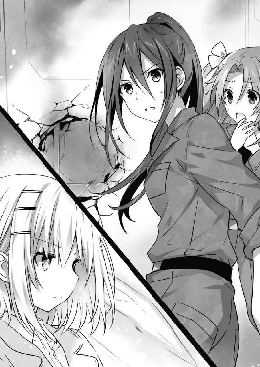
光線は燎子の頰を掠め、壁に炸裂、そこからぷすぷすと煙を上げていた。
「お願い」
『............っ』
隊員たちが息を吞む音を背に聞きながら、折紙と真那は部屋を出ていった。
◇
「......ん？」
五河家隣の精霊マンション。その廊下を歩いていた七罪は、鼓膜に小さな音を捉え、不意に足を止めた。
「？ どうかしましたか、七罪さん」
『靴紐でも切れたー？ きゃー不吉！』
隣を歩いていた四糸乃が首を傾げ、その左手に装着されたウサギのパペット『よしのん』が短い前足で器用に顔を挟み込みながら言ってくる。七罪は念のためちらと自分の足下を一瞥してから首を横に振った。
「そうじゃなくて......何か音、しなかった？」
「音......ですか？」
「うん、こっちの方から......」
言いながら、そろそろと足音を殺す。
万全、というか過剰なまでのセキュリティを誇るこのマンションに空き巣など入りはするまいが......まあ、こういうのは性分なのである。七罪は心の中で誰にともなく言い訳をしながら、音のした方へと歩いていった。
「あそこは......」
『キッチンだねー？ 誰か料理でもしてるのかなー？』
七罪の言葉を継ぐように、『よしのん』が頭を振りながら言う。
『よしのん』の言うとおり、そこはマンション一階に設えられた大型厨房施設であった。琴里が言うには精霊たちが一緒に料理を作れるよう用意された設備である。先のバレンタインデーの際、皆でチョコレートを拵えたことは記憶に新しい。
「誰かいるんでしょうか？」
「さあ......」
七罪は首を傾げながらも恐る恐る部屋の中を覗き込んだ。
するとそこに、
「ふむん。なかなか難しいものじゃの。これでよいのかの？」
「うむ！ 上手いぞ六喰！ 確かそれでいいはずだ！」
「......むん、十香、うぬのは随分と大きいようじゃが」
「む？ そうか？ 手のひらサイズだぞ？」
「......むくの記憶が確かならば、手のひらサイズというのは手のひらに収まる大きさのことであって、両手のひらをいっぱいに広げた大きさではないと思うのじゃが」
などと会話を交わす二人の少女の後ろ姿が見受けられた。
「十香に......六喰？」
七罪が目を丸くしながら言うと、その声に反応して、十香と六喰が七罪たちの方を振り向いてきた。
「おお、七罪に四糸乃に『よしのん』ではないか！」
「むん。どうしたのじゃ、そんなところで」
「いや、物音が聞こえたから......ていうかそっちこそ一体何を......」
言いかけて、七罪はぴくりと眉の端を動かした。
十香と六喰が振り返ったことにより、二人が手にしていたものが見えるようになったのである。炊き上げた米を手で固めた、白い三角形。そう、おにぎりだ。
「え、何、さっきご飯食べたじゃない。もうお腹空いたの？ 十香はまだしも六喰まで......」
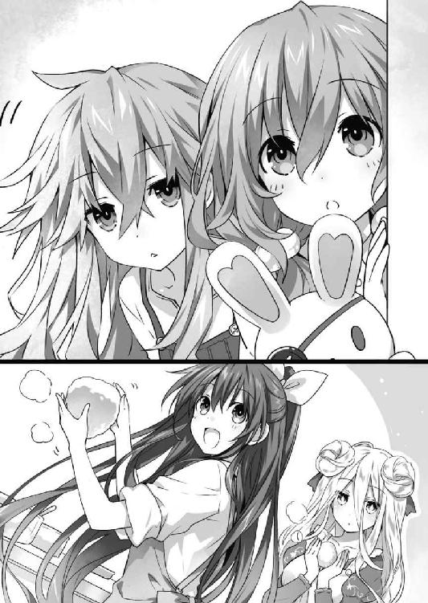
言いながら、七罪は無意識のうちに自分の視線がちらと二人の胸元にいくのを感じた。十香はもちろん、六喰もその小柄な体軀からは考えられないくらい豊満なバストを誇っている。......やはり『持つ者』は栄養を全て『そちら側』に変換できるということだろうか？
七罪がそんなことをぼんやりと考えていると、十香と六喰の胸が揺れた。否、それは副産物で、正確には二人が首を横に振っていた。
「そうではなくてだな。......いや、確かに私も食べるつもりではあるが、それだけではないのだ」
「......どういうこと？」
「むん。今主様や妹御たちは、来る戦への備えをしておるのじゃろう。頭を働かせれば腹も減ろうて」
二人の言葉に、四糸乃がポンと手を打った。正確には、『よしのん』の手で、ではあるが。
「あ......もしかして、差し入れですか？」
「うむ！」
「左様じゃ」
言って、十香と六喰が手にしたおにぎりを掲げてくる。七罪は「......なるほど」とうなずいた。
「......まあ、いいんじゃない。喜ぶと思うわよ、士道たちも」
「おお、七罪もそう思うか!?」
「え、ええ、まあ」
七罪が視線を逸らしながら答えると、十香は嬉しそうに笑みを濃くした。......ちなみに七罪が目を逸らしたのは、別に言葉に偽りや含みがあるからではなく、単純に十香のキラッキラした視線が眩しすぎたからである。最近自分の祖先に吸血鬼でもいるのではないかと疑い始めた七罪だった。
と、そこで十香が何かを思いついたような顔をし、七罪と四糸乃に声を掛けてくる。
「そうだ、もし時間があるなら、七罪たちも作らないか？ 楽しいぞ！」
「へ......？ い、いや、私は......」
十香の突然の提案に、七罪は動揺に満ちた声を発した。
が、隣にいた四糸乃と『よしのん』は、待っていましたと言わんばかりに目をキラキラと輝かせていた。
「いいんですか......？ やらせてください。私たちも、皆さんのお役に立ちたいです......！」
『にゅっふっふ、よしのんの肉球が火を噴くぜー！......え？ ウサギには肉球がないはずじゃないかって？ うふふー、君のような勘のいいガキは嫌いだよ』
などと、二人とも完全に乗り気である。七罪はたらりと頰に汗を垂らした。
「わ、私は遠慮しようかな......なんて──」
「七罪さんも......やりましょう。一緒なら、きっと楽しいと思います」
「え、や、あ、あの」
四糸乃に言われて、七罪はしどろもどろになった。ドロッとした汗が全身から噴き出し、心臓がバクバクと鳴り出す。
いや、別におにぎりを作るのが苦手とか、米アレルギーであるというわけではないし、もちろん、士道や琴里たちに差し入れをしたくないなどという理由でもない。
もっと単純かつ簡単な理由だ。シンプルに考えて欲しい。おにぎりというのはその名の通り、炊いた米を手で握って作る料理である。
──そう。調理人が、その両の手で、直接。
普通の手料理でさえ皆に躊躇われるに違いないのに、七罪の手が直接触れたものなど、誰も食べたがらないに決まっているではないか......！
七罪のおにぎりなど、爆撃機に満載して敵国にばらまくか、さもなくば何日も食事を摂らせていない捕虜に与え、「餓死したくなければ食うがいい。ただし、七罪の握ったおにぎりだがなぁ！ ヒャーハハハハハ！」と絶望感を与えるくらいの役にしか立たないだろう。捕虜は人間の尊厳にかけて最後まで食べることを拒否するのだが、やがて空腹に耐えかねおにぎりを口にしてしまい、地獄の苦しみの中で息絶えることになるのである。......なんだかいろいろ酷すぎてある意味有効活用できそうな気がしてきた。
しかし、どんなに間違っても同胞に食させてよいような物体ではない。七罪は顔色を悪くしながら頭を振った。
「いや、いや......私の握ったおにぎりがみんなのに紛れてるなんて、それはもう毒物混入事件よ。法に触れるわ」
言いながら、七罪が一歩後ずさる。
「そんなこと......」
すると四糸乃が何かを言いかけたのち、キッと決意に満ちた眼差しを七罪に向けてきた。
「七罪さん、手を見せてください」
「へ......？ こ、こう？」
七罪は戸惑いながらも、言われるままに右手を四糸乃の前に差し出した。
すると四糸乃はそれをジッと見つめたのち、
「あむっ」
と、七罪の指を甘嚙みしてきた。
「うひゃっ!? よ、四糸乃!?」
突然のことに、思わず声を裏返らせる。すると四糸乃の左手の『よしのん』が、パクパクと口を動かしてきた。
『えー、四糸乃が取り込み中のため、よしのんが代行させていただきます。七罪さんの手は毒なんかじゃないです！ 的なことを言ってるよー！ 格好いいね！ 惚れんなよ！』
「ひ、ひえぇ......」
恐れ多いやら罪深いやら尊いやら、様々な感情が頭の中でない交ぜになる。七罪は顔中からいろんな種類の体液を滲ませ、表情をでろでろにしていった。
が、それだけでは終わらなかった。そんな一連の流れを見ていた十香が「おお！」と何かを察したように手を打つと、七罪の左手を引っ張り、四糸乃と同じようにぱくりと指をくわえてきたのである。
「ギャ────ッ!?」
両手を押さえられ、七罪は目を白黒させた。
「ふむん？」
するとそれらの行動を見ていた六喰が興味深げに一歩足を踏み出してくる。
しかし、左右両方の手が四糸乃と十香により塞がれているため、一瞬迷うような仕草を見せ──
「むん」
何を思ったのか、六喰は七罪の頰を両手でホールドすると、そのまま大きく口を開け、ゆっくりと顔を近づけてきた。
「......ッ!? わ、わかった！ わかったから！ 私も一緒にやるからストップ......ッ！」
七罪が必死の形相で訴えかけると、皆が表情を明るくして姿勢を元に戻した。
「うむ、では始めるとしよう！」
「むん、手はそこで洗うのじゃ」
「あ、あの......すみません、七罪さん。でも私、どうしても七罪さんと一緒にやりたくて......」
「......や、あの、うん。ありがとう」
七罪が頰を真っ赤にしながら返すと、四糸乃はパアッと表情を明るくし、嬉しそうに微笑んだ。
......まあ、こうなっては仕方ない。七罪は自分のおにぎりを食べる被害者を思い描き、鎮魂を祈るように胸元で十字を切った。
そうして四糸乃とともに手を洗い、『よしのん』に調理用の特製カバーを掛けてから、再び十香たちのもとに舞い戻る。
「さて......じゃあ始めましょうか。十香たちは幾つくらい作ったの？」
「私も六喰も、この一つだけだ！ まだ始めたばかりだったからな！」
「むん」
言って二人が、先ほど手にしていたおにぎりを示してくる。六喰の方はまだしも、十香の方はやたらとサイズが大きかった。
「どうだ？ 上手くできているか？」
「ええ、まあ......形はいいんじゃない？ 十香のおにぎりはさすがに大きすぎるとは思うけど」
「むう、そうか。ならばこれは私用にして、シドー用は別に作るとしよう」
十香はそう言うと、巨大なおにぎりを大皿の上に横たえ、その真ん中に指先でぐりぐりと穴を開け始めた。
「十香さん？」
『何してるのー？』
「うむ、中に具を入れるのだ。本当はシドーのように一緒に具も握り込んでしまいたいのだが、あれがなかなか難しくてな。仕方ないので一度形を作ってから中身を入れることにしたのだ」
「ああ、なるほど」
七罪は納得を示すようにうなずいた。確かに具を一緒に握り込むと、米だけのときよりも形がまとまりづらくなるのである。
見やると、調理台の上に様々な具が用意されていることがわかる。醬油で和えたおかかに、昆布の佃煮、ぶつ切りのたらこに、なぜか大量に用意されたツナマヨ。変わり種では、作り置きと思しき鳥の唐揚げや、一口大に切られた豚の角煮などが見受けられた。まさにおにぎりの具オールスターズである。
「ふふ、ふんふんふーん」
十香が楽しげに鼻歌を歌いながら、具を物色していく。
が、その途中、小さく肩を震わせたかと思うと、十香はその鼻歌を止めた。
「......よし」
そして、何やら意を決したような様子でうなずき、とある皿を手に取る。そこに載っているものを見て、七罪と四糸乃は目を丸くした。
「ちょ、それ梅干しよ？」
「十香さん、苦手じゃありませんでしたか......？」
二人が言うと、十香は「わかっている」と言うように深く首を前に倒した。
そしてそののち、決意に満ちた視線を向けてくる。
「うむ......確かに酸っぱいので少し苦手だった。だが、だからこそ今克服すべきなのだ！ 梅干しにも勝てない私が、ＤＥＭに勝てるものか！」
言って、十香がグッと拳を握る。その力強い様に、七罪たちは思わず拍手をしてしまっていた。
「な、なるほど......うん、理論はよくわかんないけど覚悟は伝わったわ」
「十香さん、すごいです......！」
「ふむん......やりおるの、十香。ならばむくも覚悟を決めよう」
と、六喰がゆらりとした足取りで歩くと、調理台の上からとある皿を手に取る。
「わさび漬けよ。うぬとの長き因縁に終止符を打つときがきたようじゃ」
「え、六喰わさび漬け苦手だったの？」
「むん。漬け物自体は総じて好きなのじゃが、これはどうも辛くての。あまり食べないようにしていたのじゃ。──じゃが、十香の意気やよし。確かに、戦に向かうむくが、このようなものを恐れているわけにはいかぬじゃろう」
十香の熱に当てられたように、六喰が力強く宣言する。十香がそれを見て、グッと親指を立てた。
すると四糸乃もそれに同調するように、ふんふんとうなずいてみせる。
「わ、私も......がんばります！ 私は......その、生のセロリが少し苦手です」
「おお！ ならばやるか！」
「セロリか。確か冷蔵庫にあったはずじゃ」
「......いや、セロリ入りのおにぎりとか、セロリ大丈夫な私でもあんまり食べたくないけど」
七罪が頰に汗を垂らしながら言うと、三人が「それもそうか！ さすが七罪！」という顔を向けてきた。......正直居心地が悪い。
「ところで七罪は、何か苦手なものはあるのか？」
「え？ 苦手なものか......何だろ」
と、七罪が考えを巡らせていると、『よしのん』がパクパクと口を動かした。
『あ、確か七罪ちゃん、人の目が苦手って言ってなかったー？』
「ふむん。ならばそれを入れてみるかの？」
「いやいやいや、それ苦手の意味違うから......！ ていうかそれ以前にいろいろおかしいでしょ！」
「そうだぞ六喰。人の目を抉るわけにはいかない。ここは代用品として、マグロの目玉を入れるとしよう。ＤＮＡたっぷりで頭がよくなるらしいぞ」
「むん、名案じゃの」
「だーかーらぁぁぁっ！」
至極真面目な顔で、今すぐＤＨＡを摂ってほしい会話を交わす二人に、思わず声を上げる。
予想通りというか何というか、差し入れの準備は難航しそうだった。
◇
「......えー、古今東西、エロくないのになんだかエロく聞こえる言葉ー。『ちんすこう』」
五河家のリビングに、二亜の間延びした声が響く。
するとそれに応えるようにして、次々と回答が聞こえてきた。
「えぇー、そうですねー、『いっぱい』」
「回答。『サックス』」
二亜と同様に美九、夕弦がリズムよく言う。
すると次の回答者である耶俱矢に、皆の視線が集まった。
「え......っ!? え、ええと......その、......ま、『マチュピチュ』......？」
『......！』
耶俱矢が頰を赤くしながら回答すると、ソファに身を沈み込ませていた皆が、急にガバッと起き上がってきた。
「えっ、ちょっと詳しく聞かせてかぐやん。『マチュピチュ』のどの辺がエロいの？ 二亜ちゃん純真だからわっかんないにゃあ！」
「私も教えて欲しいですー！ 是非ご教授を！ おねがい☆耶俱矢先生！」
「要請。説明を求めます。耶俱矢はインカ帝国の遺跡のどこに性的興奮を覚えるのですか」
「なんで私のときだけそんなツッコミ入るのよ!?」
耶俱矢はたまらず叫びを上げたが、三人は取り合ってくれなかった。ぐいぐいと身を乗り出し、回答を求めてくる。
「う、うう......」
その異様なプレッシャーに耐えかね、耶俱矢は諦めたように言葉を続けた。
「......そ、その、音......みたいじゃない、なんか」
「えぇー？ 何の音ー？」
「ぜんぜんわかりませぇーん！」
「請願。詳しくお願いします」
しかし三人は矛を収めることなく、それどころかさらに興奮した調子でそう言ってくる。
耶俱矢は観念して、顔を真っ赤にしながら蚊の鳴くような声を発した。
「......、き、キスしたときの......」
『............』
すると次の瞬間、三人が一瞬黙り込んだかと思うと、誰からともなく「っはー！」と息を吐いた。
「なるほど、なるほどなるほど！ そっちかぁー！」
「やーん！ 耶俱矢さん可愛いですぅー！」
「容赦。まあ、本気で言っているようですし、それでよしとしておきましょう」
「わざわざ解説させといて何その歯切れの悪い感じ！ じゃあみんなも説明してよね！ ほら二亜、『ちんすこう』のどこがエロいのよ！」
「え？ そりゃあ、ちん──」
「説明しないでくんない!?」
さらりと答えようとした二亜に、耶俱矢は悲鳴じみた声を上げた。
「ええー、自分が説明しろって言ったのにー」
二亜は肩をすくめながら言うと、皆ともといた位置へ戻っていき、再び声を響かせた。
「まあいいや。じゃー続きね。『チンチラ』」
「えっとぉ、『しっぱい』ですー」
「回答。『シックス』」
瞬く間に耶俱矢の順番が回ってくる。耶俱矢はまたも頰を紅潮させながら、震える声で呟くように言った。
「......ち、『チュッパチャプス』......」
『......！』
耶俱矢が言った瞬間、またも三人がシュバッ！ と参集してきた。
「ねえねえかぐやんなんでそれがエロいの!?」
「教えてくださぁーい！」
「困惑。耶俱矢は常日頃から琴里を性的な目で見ているのですか？」
「もうやだこのメンバーぁぁぁッ！」
再度三人に食いつかれ、耶俱矢は悲鳴じみた叫びを上げた。
「ていうかそもそも何なのこれ！ なんか流れで付き合わされてたけど、なんでいきなり古今東西始まってるの!?」
「えー、だって暇なんだもーん」
耶俱矢の言葉に、二亜が足をぶらぶらさせながら答える。
美九と夕弦も、明確に言葉にこそしなかったものの、二亜の言葉に同意を示すように肩をすくめていた。
「く......っ」
耶俱矢は忌々しげに歯嚙みした。
が、それを否定することは困難だった。何しろ耶俱矢もまた、似たような感想を持ってしまっていたのである。
今五河家のリビングには四人の精霊たちが揃っていたのだが、皆特に何をするでもなくソファに腰掛けているだけだったのだ。
数日後に総力戦を控えているとは思えない、なんとも穏やか──というかだらけた時間。
本当は戦闘の準備なり何なりをしておきたいところだったのだが、主立った作業は〈ラタトスク〉がやってしまうし、何より〈神蝕篇帙〉を警戒して作戦の詳細が伝えられていないため、何をすればいいのかわからないのである。実際琴里から出された指示は、十分身体を休めて、当日どんな作戦が発表されても驚かないように心の準備をしておいてちょうだい、という、曖昧極まるものであった。
かといって、決戦を控えていることに変わりはないため、読書に没頭したりテレビゲームに興じたりという気分にもなれない。
果たしてこの、何かしていたいのだが何をすればいいのかわからない、奇妙な空間ができあがってしまったのである。
「ここにくれば何かしらすることがあると思ったんですけどねー......」
「首肯。まさか、士道まで家を空けているとは思いませんでした。〈フラクシナス〉でしょうか」
「じゃなーい？ 妹ちゃんもいないし。オリリンとマナティは陸自の基地に行くって言ってたっけ？ 取材兼ねて付いてけばよかったかなー」
「............」
「............」
「............」
何くれとない会話が交わされたかと思うと、またも沈黙が流れる。
するとそんな空気を居心地悪く思ったのか、二亜が声を上げた。
「......えー、じゃあ、古今東西、少年の格好良かったシーン」
「へっ？」
予想外のテーマに、耶俱矢は目を丸くした。
「あたしはねー、んーと、やっぱあたしが死にかけたとき、諦めずにキスしてくれたことかなー。こう、がばっ、ぎゅっと」
言って、二亜が近場にあったクッションを手に取り、んちゅー！ と顔を押しつける。耶俱矢は思わず顔を赤くした。
「そうですねぇ、私はあれです、ＤＥＭ日本支社で、反転した十香さんの攻撃から身を挺して私を守ってくれた瞬間......！『約束......したからな』って！ きゃー！ もう思い出しただけで格好いいですぅ！」
次いで美九が、足をパタパタさせながら興奮した調子で言う。
すると今度は夕弦が、あごに指を一本当てながら答えた。
「思案。夕弦は、夕弦と耶俱矢の喧嘩を、〈鏖殺公〉の一撃で以て止めてくれたときです」
「あ......っ、ずるっ！ それ私が言おうとしてたやつ！」
「否定。ずるくありません。順番です」
「そもそも順番決めた覚えもないんだけど!?」
「迂闊。こういうのは早い者順です。さ、次は耶俱矢の番ですよ。それとも、耶俱矢は士道の格好いいシーンが一つしか思い浮かばないのですか？」
「ぐ......」
腑に落ちないものを感じたが、そう言われては黙っているわけにはいかない。耶俱矢は頰を紅潮させながらたどたどしく言葉を吐いた。
「......私はその、二人でボウリング行って......私が泣いちゃったとき、黙って頭を撫でてくれたのが......」
「キュピーン！ 乙女反応感知！」
「その話詳しくお願いしますー！」
「詮索。というかそれはいつの話ですか。夕弦は知らないのですが」
「結局同じパターンじゃん！ だからヤだったんだし！」
耶俱矢が涙目になりながら叫びを上げる。すると身を乗り出してきていた三人はあははと笑ってソファへと戻った。
そしてしばしの間無言になったあと、ふと二亜が声を発する。
「......死なせたくないよねぇ、少年」
するとそれに応えるように、他の精霊たちも静かな、しかし力強い調子で言葉を続けていく。
「ええ、もちろんですー。だーりんがいなかったら私は、今でも人を信じられないままだったかもしれません」
「肯定。士道がいなかったら、夕弦と耶俱矢はどちらか片方しかこの世にいなかったでしょう」
「ねー。あたしも少年いなかったら間違いなく死んでるし。あはははっ」
二亜が、明らかに笑い事ではないことを笑いながら言う。そのあまりに朗らかな様に、耶俱矢も苦笑してしまった。
「......ま、そうよね。私も、まだ全然恩を返せてる気がしないし」
耶俱矢はそう言うと、軽く反動を付けてソファから起き上がった。そしてバッと手を顔の前にかざし、格好いいポーズを取ってみせる。
「然らば我は漆黒の守護者となりて彼の者を護らん！ この煉獄の牙に触れし者、死神の誘いを受けると知れ！」
そして高らかにそう宣言すると、二亜たちが「おー」とまばらな拍手をしてきた。
「相変わらず格好いいねえ。......で、今なんて言ったの？」
「翻訳。大大大好きな士道が死んじゃったら生きていけない！ 士道を護るために耶俱矢頑張る！ でもってご褒美にチューしてもらう！ と言っています」
「きゃー！ 大胆ですぅ！」
「訳者に悪意を感じる！」
と、耶俱矢が抗議するように声を上げると、それに合わせるようにして、スマートフォンから軽快な音が鳴り響いた。
しかも、一つではない。この場にいる精霊たち全員の電話が、ほぼ同じタイミングで音を発し始めたのである。
「ん......何、って、十香？」
そしてちらと画面を覗いて発信者の名前を確認してから通話ボタンを押すと、電話口から元気のいい声が響いてきた。
『耶俱矢か！ 今マンションのキッチンで、シドーたちに差し入れのおにぎりを作っているのだが、一緒にどうだ!?』
すると他の面々の電話からも、何やら似たような話題が漏れ聞こえてきた。
『あ、あの......四糸乃です。夕弦さん、今士道さんたちに差し入れを作ってるんですけど、よかったら──』
『二亜か。むくじゃ。手を貸すがよい』
「あーん！ 七罪さん、どうして一人だけ電話じゃなくてメールなんですかぁー！ 可愛いお声を聞かせてくださぁぁぁぁぁいっ！」
どうやらマンションに集まった精霊たちが、一斉に耶俱矢たちに連絡をしてきたようだが、美九だけ電話ではなかったらしい。美九が悲しみに噎び泣く。
耶俱矢はそれを笑いながら見ると、電話口の声に返した。
「くく、よかろう、眷属よ。その召喚に応じてやろう。しばし待つがよい！」
『おお！ 待っているぞ！』
十香の声を待ってから、電話を切る。
二亜も夕弦も、これまた同じタイミングで通話を終えたらしい。ふと目が合い、誰からともなく笑ってしまう。ちなみに、美九だけはもの凄い速さでメールをフリック入力していた。
「絶妙なタイミングだったわね」
「首肯。正直、小さなことでも士道たちの役に立てるのはありがたいです。行きましょう」
「ですねぇ。皆さんとおにぎり作りなんて楽しそうですー！」
「よっし、じゃあマンションに着くまでラスト古今東西ね。お題は、今まで経験したエロい......」
「絶対ヤだかんね!!」
耶俱矢は自然な調子でお題を提案してきた二亜に、絶叫じみた叫びを上げた。
◇
天宮市上空一万五〇〇〇メートルに浮遊する空中艦〈フラクシナス〉の艦橋では、クルーたちが慌ただしく作業を行っていた。
「──椎崎、各支部への応援要請は？」
「既に。返答が揃い次第ご報告します」
「よろしい。川越、地上施設の点検は順調？」
「現状、問題ありません。ご要望とあらば今すぐにでも使用可能です」
「よろしい。マリア、機体整備は済んでる？ もし何か要望があれば言ってちょうだい」
『基本問題ありませんが、欲を言えば魔術師による基礎顕現装置の手動点検を。──それと外装の洗浄とワックス掛けをお願いしたいです』
「前者は対応するけど後者は却下。どうせ明後日には嫌っていうほど汚れるわ」
『むう。女が枯れるのは心からですよ、琴里』
「なんですって？」
淀みなく指示を発していた琴里が、バン！ とコンソールを叩く。そんな光景を見て、艦橋を訪れていた士道は小さく苦笑した。
「まあ、落ち着けって。少し休んだらどうだ？ ほら」
言って、手にしていたボトルを差し出す。琴里は「......まったく」と怒気を収めるように頭をかいてからそれを受け取った。
「ありがと。いただくわ」
琴里は短くそう言うと、ストローをくわえてスポーツドリンクを飲み、ふうと息を吐く。
口には出さないが、やはり疲れているようだ。士道は見慣れた妹の見慣れぬ背中を見ながら軽く拳を握った。
「......悪いな。俺も何か手伝えることがあればいいんだけど」
士道が言うと、琴里は意外そうに目を丸くしたあと、肩をすくめてきた。
「何言ってるの。士道には一番キツい任務に当たってもらうんだから。人の仕事を手伝ってる余裕なんてないわよ」
「一番キツい......？」
「ええ。──何をしてでも、生き残ること」
琴里は、士道の目を見つめながらそう言うと、スポーツドリンクをもう一口飲んだ。
「相手は最大最強の魔術結社ＤＥＭインダストリー。何があるかわからないわ。可能な限りコンディションを整えておいてちょうだい。当日、緊張で寝不足ですとか、風邪引いちゃいましたとかは勘弁よ」
「なるほど......確かにその通りだ」
士道は反省と自戒、あとは琴里への降参を示すように小さく手を上げた。
まったくもって琴里の言うとおりである。
『休むことも仕事のうち』とはよく言うけれど、士道はそれを言葉として知っているだけで、感覚として理解はできていなかったようだった。
士道に限った話ではないが、日本人はどうも、仲間が働いているのに自分だけが休んでいる、という状況に罪悪感を覚えるケースが多い。
だが、休息を取るべきときに無駄な動きをして体力を使ったり、いらぬ心労を患って精神を疲弊させたりしたら、逆に仲間たちに迷惑をかけてしまうことになりかねないのである。
ましてや、二日後に迫る決戦はまさに精霊たちの命運を賭けた一戦。その鍵となるのが士道の命である以上、士道には一瞬の油断も許されなかったのだ。
それに──気がかりはそれだけではない。
「......狂三も、来るのかな」
士道が言うと、琴里はボトルを置いたのち、椅子を回転させて士道の方に向き直ってきた。
「来る、でしょうね。狂三の分身体の口ぶりから考えて間違いなく。むしろ話の筋としては、狂三とウェストコットの戦いに私たちが首を突っ込んだという捉え方もできなくはないわ。──まあ、標的が士道の命である以上、その流れは当然だけれど」
「......だよな」
「............」
士道の様子に不穏な空気を感じ取ったのか、琴里が微かに眉根を寄せてくる。
「わかってるとは思うけれど、今回ばかりは妙な色気は出さないでちょうだい。確かに精霊の力を封印するのが私たちの目的だけど、まずはこの戦いを乗り切らないことには意味がないわ。──何よりもまず、生き残ること。間違っても、戦場で狂三を探そうとしたりなんてしないでちょうだい。二兎追う者はなんとやらよ」
「わ、わかってるよ」
士道は微かに声を上擦らせながら答えた。別にそこまで明確にプランを立てていたわけではないが、そんな考えがまったくなかったかと言われれば否定せざるを得なかった。......そんなにわかりやすい顔をしていただろうか。
「......安心してくれ、シン」
と、士道と琴里が話をしていると、不意に左方からそんな声が聞こえてきた。──令音だ。
「......別に琴里は、狂三を軽視しろと言っているわけではない。むしろこちらからも、可能な限り彼女の援護を行うつもりだ」
「え？」
士道が目を丸くして琴里を見ると、琴里は大仰に肩をすくめてみせた。
「そりゃあ、ね。いくら狂三でも、ＤＥＭと正面切って総力戦っていうんじゃ分が悪いわ。もちろん士道が生き残るのが前提だけれど、その後狂三を封印できるのが最良だもの。助けられる場面で助けないような真似はしないわよ」
「琴里......」
琴里は目を伏せながら、「それに」とあとを続けた。
「──理由はどうあれ、何度も士道を死の運命から救ってくれた功労者を見殺しになんて、できるわけがないじゃない」
「......ああ、そうだな」
琴里の言葉に、士道は安堵と決意を込めてうなずいた。
するとそこで、艦橋のスピーカーからマリアの音声が響いてくる。
『まあ、狂三の目的が士道の霊力である以上、ここを乗り切ってもまた苦労はしそうですが』
「はは......まあ、それはそうだな」
確かにその通りである。士道は力なく苦笑した。
と、そんなやり取りの中、琴里がふと難しげな顔をする。
「......？ 琴里、どうかしたか？」
「目的......ね」
「え？」
士道が首を傾げると、琴里はあごに手を当てながら続けてきた。
「目的、よ。基本的に、人は誰もが、それに向かって行動をするわ。私たち〈ラタトスク〉は、精霊たちを救うため。ＤＥＭは、反転結晶の力を手に入れるため。狂三は、士道の霊力を得て過去に戻るため。──少なくとも三つの動機が、この戦いには渦巻いている」
「......？ あ、ああ。それがどうかしたのか？」
琴里が指を一本ずつ立てながら、言葉を発する。士道は琴里の意図がわからず、首をかしげた。
すると琴里は、士道の目を見ながら、四本目の指を立てた。
「──あと一つ、足りないでしょう。〈ファントム〉よ」
「あ......」
言われて、士道は目を見開いた。
〈ファントム〉。琴里たちに霊結晶を与え、精霊と化した謎の精霊。
そもそも〈ファントム〉がいなければ、今この状況はなかったと言っていい。だというのに、彼の精霊は未だその姿さえも現していないのだった。
「〈ファントム〉は一体なぜ、私たちに霊結晶を与えたの？ 精霊という災害級の生物をここまで増やして、何を企んでいるの？
......私たちが雌雄を決しようとしている中で、一人だけその存在が、目的が、杳として知れない。私は、それが不気味でならないのよ」
「それは......」
琴里の言葉に、士道はごくりと息を吞んだ。
その話を聞いていたのは士道たちのみではなかったらしい。艦橋下段で各種作業に勤しんでいたクルーたちも、手を動かしながら緊張した様子を滲ませている。
が──そんな中。
「......〈ファントム〉の目的、か」
ぽつり、と、令音が声を漏らした。
それは小さな小さな独り言に過ぎなかったのだけれど、なぜか士道の耳を捉えて放さなかった。
「......案外、とても小さな、くだらないことかもしれないよ」
「え......？」
士道は眉をピクリと動かすと、令音の方を見た。
けれど令音は答えることなく、ポケットから顔を出したクマのぬいぐるみの頭を撫でているのみだった。
「それって、どういう──」
が、士道が問いを発そうとした、次の瞬間。
「──たのもう！」
突然扉が開いたかと思うと、十香を初めとした精霊たちが、大きな皿を幾つも持って艦橋に入ってきた。
「十香？ それにみんなも。どうしたのよ一体。......道場破り？」
「差し入れだ！ そろそろお腹も減る頃だろう！」
「お、おにぎりを......作ってきました」
「むん。遠慮なく食べるがよい」
琴里が首を捻ると、皆が元気よくそれに答えて、手にしていた皿を掲げる。
見やると、そこには一つ一つアルミホイルで包まれたおにぎりが、幾つも並べられていた。
どうやら、皆が士道や琴里たちのために作ってきてくれたらしい。
「おお......凄いなこりゃ。全員分あるのか？」
「うむ！ 皆、これを食べて頑張ってくれ！」
言って、十香が太陽のような笑顔を向けてくる。その屈託のない様に、士道はもちろん、その場にいた琴里やクルーたちも、先ほどまでの緊張感を忘れたように苦笑してしまった。
「悪いわね。──じゃあ、お言葉に甘えていただこうかしら。みんなも、休憩にしましょう」
「了解しました」
「いやー、ちょうど小腹が空いてきたところだったんですよ」
などと言って、クルーたちが各々の席から立ち、背伸びをしながら皿の方に歩いてくる。
「さ......じゃ、私もいただこうかしら。これを......」
「む！ 待つのだ琴里、琴里のはこっちだぞ」
と、琴里が皿の上のおにぎりに手を伸ばそうとすると、十香がそう言って皿の向きを変えてきた。
よく見ると、おにぎりを包んであるアルミホイルの一つ一つに、名前を書いたシールが貼ってあることがわかる。どうやら、一人一人専用のおにぎりがあるようだった。
「へえ、もしかして中身が違うの？ 私のは......これか」
言って琴里が、自分の名前が書かれたおにぎりを手に取る。
それに倣うようにして、士道や令音、クルーたちも順に自分のおにぎりを取っていった。
その後、皿を持ってきた十香たちも、自分たちの名が記されたおにぎりを手に取ったのだが──なぜだろうか、妙に緊張しているというか、顔が強ばっている気がしてならなかった。
「十香？ どうかしたの？」
「む......い、いや、何でもないぞ」
「？ まあいいわ。じゃあ、いただきます」
言って琴里が、アルミホイルの包装を解き、おにぎりにかぶりつく。
すると、次の瞬間。
「............ッ!?」
琴里がカッと目を見開いたかと思うと、その顔にびっしりと脂汗が浮かんだ。
「......！ っ、......！」
そしてしばしの間、かじりかけのおにぎり片手に珍妙な動きをしたのち、どうにか口の中のものを嚥下し、はぁはぁと肩で息をする。
「琴里......？ どうしたんだよ一体」
「ど、どうしたもこうしたも......」
士道が問うと、琴里は怪訝そうな顔をしておにぎりの断面を覗き込んだ。そして「うっ」と渋面を作る。
不思議に思った士道は琴里の手にしたおにぎりに目をやり──眉をひそめた。
「ぱ、パクチー......？」
そう。琴里のおにぎりの中には、琴里が大の苦手とする香草、パクチーがたっぷり詰め込まれていたのである。
「......え、何これ、いじめ？」
涙目になりながら、琴里が十香たちの方を見る。しかし十香は、ブンブンと首を横に振ってみせた。
「違うぞ。ＤＥＭという敵を倒すために、皆苦手なものを克服することにしたのだ。だから私たちのおにぎりにも......私たちの苦手なものが入っている」
言って、勇ましいような、それでいて今にも泣きそうな顔で、十香が手にしたおにぎりにかぶりつく。それに合わせるようにして、他の精霊たちも一斉におにぎりを口にした。
「......ッ！ うぐ......」
「う、うう......くさいですぅ......」
「む、むん......負けぬのじゃ......」
そして、皆一様に身を捩らせ、涙目になる。唯一折紙だけが、表情を変えずにもくもくとおにぎりを食べていた。
「さ、さあ......シドー、シドーも、試練を乗り越えるのだ」
「え......」
言われて、士道は手にしたおにぎりに視線を落とした。見た目は普通の美味しそうなおにぎりであったけれど、今の光景を見たあとだと、正直危険物にしか見えなかった。
「......ええと、念のため聞きたいんだけど、俺のおにぎりには何が入ってるんだ？」
士道が頰に汗を垂らしながら問うと、十香は腕組みしながらむうとうなった。
「シドーのおにぎりは悩んだ。何しろシドーは苦手な食べ物が少ないからな」
「首肯。士道のものは最後の最後まで吟味を重ねました」
「うふふー......だーりん、食べづらかったら手伝ってあげますよぉ？」
そんな言葉とともに、精霊たちが士道の逃げ道を塞ぐように移動してくる。士道は「ひっ」と息を詰まらせた。
「だ、だから何が入ってるんだよ......!? 食べ物だろうな!?」
「............」
「............」
「............うふっ」
「せめて何か言ってくれぇぇぇっ!?」
無言で微笑む精霊たちに、士道は悲鳴じみた声を上げた。
◇
草木も眠る丑三つ時──とはよく言うけれど、今のご時世、都市部で午前二時程度に明かりが絶える街などそうはない。
まばらに光を放つ民家の窓に、道々に立てられた街灯、誘蛾灯の如く煌々と輝くコンビニエンスストア。そこがオフィス街ともなれば、労働基準法を堂々と無視した光源がそこかしこに見て取れるだろう。
それぞれの光の下には、それぞれの人間がいて、それぞれの営みがある。そしてそれは緩やかなローテーションを繰り返し、絶えることがない。
まあ、人がそのような文明とシステムを作り出した結果、都市部には眠るほどの草木が見受けられなくなってしまったという意味ならば、先の言葉もあながち間違いではなかったけれど。
とはいえ──今の街の様子は、少々様子が異なっていた。
街には、足元を確認せずとも歩けるくらいの光が灯っている。
それなのに、そこに蠢くはずの人間の息づかいが、ほとんど感じられなかったのだ。
正確に言うのならば、オフィスビルやマンション、商業施設などの窓から、そこにいる人影を見取ることはできる。
けれど、それらが皆ぐったりと机や床に突っ伏し、昏睡状態にあったのである。
街一つが眠りに沈む、あまりに異常な現象。街全体に毒ガスが散布されたか、さもなくば大規模なパニックムービーの撮影をしているのではないかと疑ってしまうような、現実感のない光景である。
けれど、この街はひょんなことから化学兵器を手に入れたテロリストに目を付けられたわけでも、大手のスポンサーを得て調子に乗った映画制作会社のプロデューサーに見初められたわけでもなかった。
ただ──地面に、真っ黒い影が蟠っていただけだ。
そう。影である。
ただでさえ暗い道に。
高いビルの壁面に。
明かりで照らされているはずの室内に。
眠っている全ての人間の下に、例外なく、黒い色が這っていたのである。
「────」
その、人の声の絶えた街の中心で。
時崎狂三は、意識を集中させるように手を合わせ、目を伏せていた。
〈時喰みの城〉。狂三の影を広げ、それに触れた生物から『時間』──要は寿命を吸い上げる力である。
狂三の持つ時の天使〈刻々帝〉は、強大な力を誇る代わりに、その弾を使用する際、使用者の『時間』を喰らっていく。
無論、如何に精霊とはいえ、狂三一人の『時間』で賄いきれるほど、狂三の目的は小さくない。
必然、大規模な戦闘が予想される際や、深手を負ったときなどは、こうして外部から『時間』を補充する必要があるのであった。
とはいえ狂三とて、このような大がかりな補充は初めてである。普段であれば、せいぜいビル一棟くらいがいいところだ。あまり派手に『時間』を吸い上げると、それだけ目立ってしまうからである。
けれど、今はもう形振り構っていられなかった。
明日には、ＤＥＭインダストリーが総力を挙げて士道の首を狙いに来る。それを打倒し、士道を守るためには、今以上の戦力が必要だったのである。それこそ──都市一つから『時間』を吸い上げねばならないくらいには。
無論、余計な茶々が入らぬよう、天宮市から離れた地方都市を狙っている。『時間』を補充するのが目的なのに、〈ラタトスク〉やＤＥＭに嗅ぎつけられては、文字通り余計な『時間』を消費させられてしまうだろう。
「──『わたくし』」
と。
闇の中から、自分と同じ声が響く。狂三は伏せていた目をゆっくりと開いた。
すると周囲に、何人もの分身体が立っていることがわかる。皆、狂三とともに〈時喰みの城〉を街全域に広げていた者たちだ。
「そろそろ頃合いかと」
「ええ──」
狂三は小さく呟くと、ゆっくりと片手を掲げた。
すると影の中から、古式の短銃が飛び出てきて、その手の中に収まる。
「〈刻々帝〉──【八の弾】」
狂三が呟くと、短銃の銃口に影が装塡されるように吸い込まれていった。
そして狂三は、その銃口を自分のこめかみに押し当てると、躊躇いなく引き金を引いた。
パン、という乾いた音とともに軽く頭部が揺れる。
次の瞬間、狂三の身体がぶれたかと思うと、狂三の身体が二つに増えた。
【八の弾】。狂三の過去の姿を分身体として再現する、〈刻々帝〉の弾の一つである。
狂三は新たに生まれた分身体を一瞥すると、再び唇を動かした。
「────【八の弾】。【八の弾】、【八の弾】、【八の弾】、【八の弾】、【八の弾】、【八の弾】、
【八の弾】、【八の弾】、【八の弾】、【八の弾】、【八の弾】、【八の弾】、【八の弾】、【八の弾】、【八の弾】、【八の弾】、【八の弾】、【八の弾】、【八の弾】、【八の弾】、【八の弾】、【八の弾】、【八の弾】、【八の弾】、【八の弾】、【八の弾】、【八の弾】、【八の弾】、【八の弾】、【八の弾】、【八の弾】、【八の弾】、【八の弾】、【八の弾】、【八の弾】、【八の弾】、【八の弾】、【八の弾】、【八の弾】、【八の弾】、【八の弾】、【八の弾】、【八の弾】、【八の弾】、【八の弾】、【八の弾】、【八の弾】、【八の弾】、【八の弾】、【八の弾】、【八の弾】、【八の弾】、【八の弾】、【八の弾】」
何発も。
何発も何発も。
何発も何発も何発も。
連続して影を銃口に込めては、自分のこめかみを撃ち続ける。
そのたび狂三の姿は増えていき、産声を上げた分身体たちが影の中へと潜っていった。
「──ふぅ」
それからしばらくその作業を続け、一〇〇〇人ほどの分身体を増産したのち、狂三は疲れたように息を吐いた。
「大丈夫ですの、『わたくし』」
「問題ありませんわ。──それより、影を戻して次に向かいますわよ」
狂三はそう言うと、先ほどと同じように目を伏せた。
分身体の補助があるとはいえ、これだけ広範囲に影を広げるのには相当の集中力を要する。それは、広げた影を自分のもとに戻すときもまた然りだった。
街一つ。正確な数はわからないけれど、数万の人々の『時間』を吸い上げた〈時喰みの城〉が、狂三の足元へと集結していく。
人が死なない程度の『補充』にとどめてはいるつもりだったが、各人ごとに細かな調整ができるわけではないため、余命幾ばくもない老人や病人などは、もしかしたら天に召されてしまったかもしれない。
家族と、恋人と、友人と──愛する者と触れ合える最後の時間を、狂三は奪ってしまったかもしれなかった。
「............」
だが。否──だからこそ狂三は、足を止めるわけにはいかなかった。
【一二の弾】で三〇年前に戻り、全てを『なかったこと』にする。そうすれば、今、そして今まで狂三がしてきた行為も、起こっていなかったことになる。
その目的の前には、全て些末なことである。
狂三は、無言のまま影を回収し続けた。
その様は、まるで神に祈る修道女か、さもなくば赦しを乞う告解者のようであったのだけれど──それを口に出す分身体はいなかった。
◇
「............」
夜。〈フラクシナス〉の休憩エリアで、士道はミルクティーの入った紙コップを片手に、星空を見上げていた。
都会の空には星がないとはよく言うけれど、雲を超えた高度一万五〇〇〇メートルに浮遊する空中艦からは、文字通り満天の星空が一望できた。何とも幻想的な眺めである。......まあ、士道はつい先日、何の比喩でもなくあの星の海を泳いできたわけではあるが。
「......はは」
思わず、小さな笑いが漏れる。
改めて考えてみれば、荒唐無稽な話である。きっと誰に話したところで信じはするまい。
生身で宇宙を泳いだ話だけではない。この一年間──否、五年以上前から、士道の身には、常識では考えられないような出来事が幾つも起こっていたのだ。
と──
「──シドー？」
そこで、士道の思考を遮るように、不意に後方から声がかけられた。
見やると、寝間着姿の十香が休憩エリアの入り口に立っていることがわかる。士道と同じく精霊たちも、〈フラクシナス〉の居住スペースに宿泊していたのだった。
「おう、十香。どうした？ 眠れないのか？」
「うむ......美九の寝相が凄まじくてな」
「そうなのか？」
「うむ。尺取虫のように床を這って、人のベッドに潜り込んでこようとするのだ」
「......それ本当に寝相か？」
士道は頰に汗を垂らしながら苦笑した。こんなときだというのに、相変わらずである。
すると十香が、首を傾げながら問い返してきた。
「シドーこそ、どうしたのだ？」
「ああ、ちょっと、考え事をな」
士道が言うと、十香は何かを察したように「むう......」と小さく唸った。
「無理もない。何しろ明後日......いや、もう日付が変わっているはずだから、明日にはＤＥＭとの決戦だからな。緊張するのは当然だ」
「ん......ああ、まあ、それもあるんだが」
「む？」
士道の言葉に、十香が不思議そうに首を傾げる。
「狂三のことを......な」
確かに士道はＤＥＭとの戦いを制し、生き残らなければならない。
けれど、その先にある真なる目的──狂三の封印について、士道はまだ完全な答えを得られていなかったのである。
「狂三は......俺が絶対に救ってみせる。それが、狂三に何度も命を救われた俺の責任であり、使命だ。でも、俺の思う『救い』が、本当に狂三にとっての『救い』になるのか......正直なところ、わからないんだ」
そう。〈刻々帝〉【一〇の弾】で垣間見た、狂三の半生。
怨嗟と憤怒と恩讐と──途方もない願いに彩られた、凄絶に過ぎる履歴。
それを知ってから、士道はずっと考え続けていたのである。
狂三の『救い』と士道の『救い』。それを、両立させる方法を。
だが、どれだけ考えてみても答えが出ないのが実情であった。
「............」
士道の言葉に、十香は神妙な面持ちのまま息を吐いた。
そしてパタパタとサンダルを鳴らしながら、士道の元に歩み寄ってくる。
「隣に座ってもいいか？」
「ああ、もちろん」
士道の応答にこくりとうなずき、十香が士道の隣にちょこんと腰掛ける。
そして十香は、バンバン、と自分の膝を叩いてみせた。
「さあ」
「え？」
「いいから来るのだ」
十香は有無を言わさぬ調子でそう言うと、士道の肩をむんずと摑むと、そのままぐいと自分の方に引っ張った。
まるで──膝枕の姿勢を作るように。
「と、十香？」
突然のことに士道が驚いていると、十香は優しく士道の頭を撫でてきた。
「どうだ？ 『おかあさまといっしょ』でやっていたのだ。心をリラックスさせる方法らしい」
「......はは」
言われて、士道は思わず笑ってしまった。
そして、思い出す。
あれは六月。以前狂三が現れたとき、狂三の残虐な所行を見て挫けてしまった士道を勇気づけてくれたのもまた、十香だったのだ。
「......ありがとうな、十香。おまえにはいつも助けられてばっかりだ」
士道が言うと、十香はぴくりと指先を震わせ、しばしの間黙り込んだ。
そして数秒ののち、唇を開いてくる。
「......そんなことはない。私は、シドーに謝らなければならないのだ」
「え？」
突然の言葉に、士道は目を丸くした。すると十香が、静かに続けてくる。
「......狂三がいなければシドーが死んでしまっていると聞いて、胸がきゅうと締め付けられるような気がした。それで......思ってしまったのだ。もしもあのとき私に出会わなければ、シドーはそんなことにならずに済んだのではないかと」
言って十香が、きゅっと唇を嚙む。微かな震えが、士道の後頭部に伝わってきた。
「十香......」
士道は小さく声を零すと、十香の手をぎゅっと握った。
「何言ってんだよ。俺は──あのときおまえに出会って、本当によかったと思ってるぞ」
「しかし......」
十香が消え入りそうな声で言ってくる。士道はそれを遮るように言葉を発した。
「確かにいろいろ危険な目には遭ったし、新しい精霊が現れる度に大変なことに巻き込まれはするけど......それを補って余りあるくらい、俺は、みんなにたくさんのものをもらってるんだ。それこそ、十香たちがいない人生なんて、今さら考えられないくらいにな」
──幾つもの、出会いがあった。
偶然と必然が混じり合った、十香との邂逅。
あまりに優しすぎる精霊・四糸乃との逢瀬。
『最悪の精霊』と呼ばれていた狂三との遭遇。
五年前の因縁に端を発する琴里の再封印。
殺し合いならぬ生かし合いを続ける八舞姉妹への、新たな選択肢の提示。
精霊たちを掌握した美九との戦い、そして共闘。
変幻自在の天使を持つ七罪との知恵比べ。
世界を作りかえる結果となった折紙との和解。
人を信じることのできなかった二亜の攻略。
遂には六喰に会うために、宇宙へ。
そして今、士道はＤＥＭインダストリーという脅威によって命を狙われている。
否、正しく言うのなら、もう二〇〇回以上殺されている。
思わず勘弁してくれと泣きたくなるような、怒濤の如き艱難辛苦の連続だ。
けれど──
「俺は、何一つ後悔してない。もしも今の記憶を全て持った状態で、十香と出会う前に戻ったとしても──俺は、迷うことなく十香に手を伸ばすよ」
「シドー......」
十香が目に涙を滲ませながら、手を握り返してくる。
士道は、今さらながら自分の台詞が少し恥ずかしくなって、誤魔化すように苦笑した。
「......ああ、いや、あれだな。もし今の記憶を持った状態で昔に戻ったら、必殺技の練習したり、キャラ設定作ったり、謎の詩を書いたりはしないけどな。......ま、どっちにしろ狂三の天使でもない限り、そんなことは──」
と。
言いかけたところで、士道は微かに眉根を寄せた。
ほんの小さな光明。けれど、一つの可能性が、脳裏を掠めたのである。
「......む？ どうしたシドー」
「いや......それより、十香」
「なんだ？」
「......もう少し、このままでいていいか？」
士道が言うと、十香は優しく、「うむ」と答えた。
第四章 終焉の足音
「......ねえ、あれはなに？」
「ん？ ああ、信号機だよ。ライトの色で、通行の可否を表すんだ」
「あれは？」
「郵便ポスト。手紙を入れると、指定した場所に届けてもらえる」
「じゃあ、あれは？」
「自動販売機だな。お金を入れると飲み物が買えるんだ」
「じゃあ──」
と、そこで澪が言葉を止めた。
「ごめん。さっきから訊いてばかりだね」
そして、申し訳なさそうにそう言ってくる。少年は「とんでもない」と首を横に振った。
「気にするなって。あんなの初めて見たら、興味持つなって方が無茶だ」
言いながら、少年もまた辺りを見回す。
整然と並ぶ建物に、舗装された道路。その脇には等間隔に電信柱が立ち、空には電線が張り巡らされている。
そして、その間をせわしなく行き交う人や乗り物。近隣に住む少年にとっては見慣れた風景であったけれど、もしもこの景色を初めて目にしたのなら、少年も澪と同じような反応を示してしまうに違いなかった。
そう。澪が少年の前に現れてからおよそ二週間後、二人は連れ立って、家の外へと繰り出していたのである。
家中にある本を読破した澪は、それこそ日本に何年も住んでいたレベルで言葉を操れるようになっていたし、礼節やマナー、社会常識についてもある程度学習していたため、崇宮家のお目付役・真那から外出の許可が出たのだ。
とはいえ無論、二人がやってきていたのは空間震の起こった場所とは逆の方向である。未曾有の大災害に見舞われた街は未だ慌ただしかったが、人間生きていれば飯を食わねばならないし、そのためには働かねばならない。そしてそれらの行動を取るためには、たとえ数キロ先にクレーターが広がっていようと、日常生活の基盤を取り戻すことが必要なのだった。
テレビでは未だ空間震のことが取り沙汰され、それが如何な悲劇を生んだかが繰り返し放送されているが、当の現場に住む住民たちは、存外落ち着いて過ごしているのが実情だった。
「わあ......へえ......あ──これは本で読んだことがある」
「............」
興味深そうに辺りを見回しながら道を歩く澪を見ながら、少年は思案を巡らせた。
確かに会ったときとは比べものにならないくらいに言葉は堪能になり、意思疎通も可能となった。時が経つにつれはっきりとしてきた記憶や、当時は意味がわからなかった事柄を、日本語で伝えてくれもした。
けれど、未だ澪には、わからないことが多すぎたのである。
否──正しく言えば、言葉としてわかるようになったからこそ、理解できないことが増えてしまったというべきだろうか。
澪は、普通の人間ではない。それどころか、正常なプロセスで以て生まれた生物でさえないという。
──『精霊』。自分の存在を日本語で表すと、その表現が最も近いのではないかと彼女は言った。
魔術とか呪術とかと呼ばれる類の不可思議な業で以て生み出された、超常生命。
けれど、好奇心旺盛な彼女の後ろ姿からは、そんな不穏な気配など、微塵も感じ取れないのだった。むしろ──
「──どうかしたの？」
「......わっ！」
不意に顔を覗き込まれ、少年はビクッと肩を揺らした。澪が、そんな少年を見て不思議そうに首を傾げてくる。
「い、いや、なんでもないよ」
「......そう？」
澪はもう一度不思議そうに言うと、何かを思い出したように姿勢を正した。
「それより、あれはなに？」
そして、またも何かを指さす。少年は顔を上げて澪の指の先に視線をやった。
ゲームセンターの店先に置かれた、賑やかな音を立てる筐体である。ガラス製の大きな箱の中にいくつもの小さなぬいぐるみが並び、通行人たちにつぶらな瞳を向けていた。
「ああ、クレーンゲームだよ。箱の天井にアームがついてるだろ？ 外からそれを操作して、中のぬいぐるみをキャッチするんだ」
「へえ？ 面白いことを考えるんだね」
少年が簡単にゲームの説明をすると、澪はトントンと軽快な足取りでクレーンゲームの筐体へと歩み寄っていき、その中をジッと覗き込んだ。
中に入っているクマのぬいぐるみが気になるのだろうか？ 少年はそのあとを追うようにそちらへ歩み寄ると、澪と同じように筐体の中を覗き込みながら言った。
「取ってやろうか？」
「......え？」
すると、澪はまったく予想していなかったといった表情で顔を上げてきた。
少年はそんな様に苦笑しながら、筐体にお金を投入すると、ガイド音声に従ってアームを操作し始めた。
そして十数分後、見事一発で......とはいかなかったけれど、どうにか財布の中身が尽きる前に、少年はクマのぬいぐるみをゲットした。
「よっしゃぁぁぁッ！ どんなもんじゃーい！」
正直、負けが込んでいたので予想以上に嬉しかった。ぬいぐるみが取り出し口に落ちた瞬間、人目も気にせずそんな声を上げてしまう。ゲームセンターにいた客や、道を歩いていた通行人たちが驚いたようにこちらを見、苦笑いして去っていった。
「............」
少年は頰を赤くすると、肩をすぼませながらクマのぬいぐるみを取り出した。
「と、とにかく。ほら、澪」
「......、......？」
澪は少年の言っていることと行動がよくわからないといった様子で首を傾げた。少年はなんだかそうしているのも少し恥ずかしくなってきて、澪の手を引っ張ると、そこにクマのぬいぐるみを握らせた。
「......？ 私に、くれるの？」
「ああ。そのために取ったんだしな。......それとも、いらなかったか？ 熱心に見てるもんだから、てっきりこういうの好きなのかと......」
「好き......」
澪は目を丸くしながらその言葉を繰り返すと、手渡されたぬいぐるみをまじまじと見つめた。
「好き......好ましいと思う感情......対象に強く興味を引かれること......」
そして辞書の文章を暗唱するようにぽつぽつと呟いたのち、手にしていたクマのぬいぐるみを胸元に押し当てた。
「──それだ。......うん、きっとこれは、『好き』。あなたに感謝を。謝意を示す。......違うな、ええと......」
澪は一瞬考えを巡らせるような仕草をすると、すぐに少年の方に向き直ってきた。
「──ありがとう。嬉しい。私、あなたのことが、『好き』」
そして、微笑みながらそう言ってくる。
「......へっ!?」
笑顔に、心臓を撃ち抜かれるかのような錯覚。
予想外の言葉に、少年は顔を真っ赤にしながら目を泳がせた。
それは、これから始まる澪との生活を象徴する一ページ。
少年にとってかけがえのない毎日の始まり。
──けれど、少年はまだ気づいていなかった。
澪という少女の存在が持つ意味に。
それを求める、人間たちの存在に。
◇
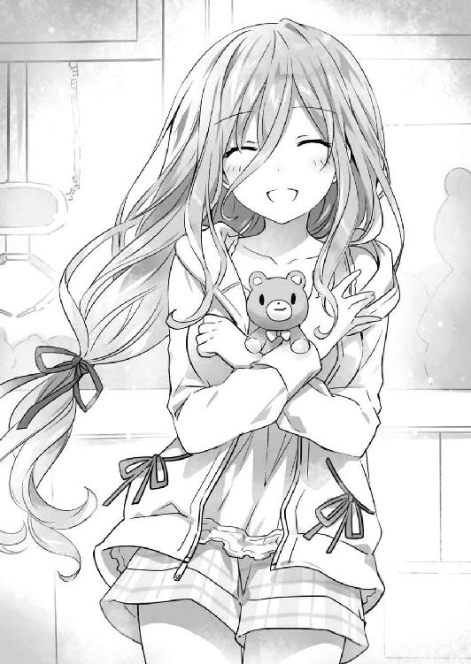
朝。来禅高校へと連なる通学路には、幾人もの生徒たちの姿が見て取れた。
二月の朝は寒い。皆制服の上にコートを羽織ったり、首にマフラーを巻いたりと、思い思いの防寒対策を施している。
とはいえ中には殿町宏人のように、シャツの上にブレザーのみで寒空の下を歩く元気な少年もいたのだけれど。
「グッモーニン諸君。今日もいい天気だな！」
言いながら、殿町が道を歩いていた女子生徒三人組にヒラヒラと手を振る。
長身の少女に、中肉中背の少女、そして小柄な眼鏡の少女。二年四組の名物トリオ、通称・亜衣麻衣美衣である。
しかしいつも元気な三人は、殿町の姿を見るなり、寒そうにマフラーをたぐり寄せた。
「おっはよー......って、完全に曇天だよ今日」
「ていうか殿町くん寒くないの？ 見てるこっちが寒いんだけど」
「小学生のときいたわーそういう子。冬でも半袖短パンなやつ。あだ名はウインド」
亜衣麻衣美衣が順に言うと、殿町はふふんと自慢げに胸を反らした。
「このワイルドさに気づいてしまったか。結局のところ女の子ってたくましい男が好きだからな。今朝テレビで誰かが言ってた」
「......見た？」
「んーん。見てない。うち基本朝ニュースしか見ないし」
「うちもうちも。あ、なんかどっかの街で集団昏睡事件があったんだっけ？ 怖いよねー」
言って、亜衣麻衣美衣が殿町そっちのけでわいわいと話し出す。が、殿町は挫けずさらに声を張り上げた。
「とにかく！ これで俺にも彼女が──ふ、ふぁっくしょん！」
殿町が言葉の途中で大きなくしゃみをする。亜衣麻衣美衣たちがやれやれと半眼を作った。
「薄着して風邪引いてるようじゃワイルドにはほど遠いわねー」
「ていうか、会ったこともない偉い人より今目の前にいる女子の意見聞きなー？」
「そうそう。たとえばここな山吹亜衣氏、季節の変わり目で必ず風邪引く文化系男子に絶賛片思い中ですぜ旦那」
「待ちたまえ君たち」
唐突に恋愛事情を披露された亜衣が、美衣の首根っこを押さえようとする。それを察した美衣は、麻衣を盾にするようにしながらくるくると辺りを走り回った。
と、寒さに肩を震わせながらずずっと洟を啜った殿町が、何かに気づいたようにハッと目を見開く。
「風邪を......えっ、そうだったのか。えっと、山吹の気持ち、嬉しいけど、驚きの方が大きいっていうか......」
「うわこっちはこっちでめんどくさい勘違いしやがった！ 大丈夫、殿町くんのことじゃないから！」
麻衣の身体を軸に反対側から手を伸ばし、美衣の首根っこを捕まえた亜衣が片手間に叫ぶ。殿町は「えー、もうちょっと夢見させてくれよー」と身体をくねらせた。
「まったく......って、そういえば殿町くん、五河くん見なかった？」
と、美衣のほっぺたをぐにぃと引っ張って憂さを晴らした亜衣が、思い出したように言う。
「五河？ いや、今日はまだ見てないけど。何かあったのか？」
「いやね、あの淫獣、まーた時崎さんとデートしてたとかいう噂を聞いてさ。我々としては、テメェ十香ちゃんはどうしたんだゴルァ！ とイカンの意を表明しているわけですよ」
「しかもさる筋によると、『僕だけの動物園』に新しい仲間が増えたそうで」
「今度はのじゃロリ巨乳ですってよ旦那。なんだそれ。ギルティ」
三人が声をひそめながら言うと、殿町は大きな笑い声を上げた。
「あっはっは、なんだそりゃ。五河に限ってそんなこと」
「有り得ない？」
「いや、確実に真実だな。見つけ次第教える」
「ご協力感謝します」
などと、殿町と亜衣麻衣美衣の間に協定関係が結ばれる。四人は試合前のチームメイトよろしく手を重ね合うと、視線を合わせて「おー！」と声を上げた。
と──次の瞬間。
ウゥゥゥゥゥゥゥゥゥゥゥゥゥゥゥゥゥゥゥゥゥゥゥゥゥゥゥ────
まるでその動作に合わせるようなタイミングで、街に警報が鳴り響いた。
「！ 空間震警報......!?」
「うっそ、マジで？」
突然の警報に、殿町や亜衣麻衣美衣、それに周囲の生徒たちがにわかにざわめき出す。
とはいえ、そこまで目に見えた混乱は起こらなかった。何しろここは東京都天宮市。世界一空間震の頻度が高い街にして、シェルター普及率第一位の地域である。生徒たちも、訓練でない避難を幾度も経験しているため、その対応にも慣れが見られた。
「うっわー......この寒いときにやめて欲しいっすわー」
「何言ってんのよ、ほら、避難しなきゃ。学校のシェルター行くわよ」
「へーい」
などと、緊張感のない会話を交わしながら、学校地下のシェルターへと向かっていく。
警報が鳴ったからといって、何もすぐさま空間震が起こるというわけでもない。むしろ慌てて駆け出した方が危険が増すというものである。殿町たちは至極落ち着いて、順にシェルターの入り口へと入っていった。
──と。
「......ん？」
地下への入り口に入ろうとしたところで、殿町は不意に足を止めた。空を見上げ、訝しげに目を細める。
「ん？ なに、どしたの殿町くん」
「いや......なんか今一瞬、空に何か見えなかったか？」
「は？」
殿町の言葉に、亜衣麻衣美衣が空を見上げる。しかし、すぐに首を捻った。
「......どんなの？」
「んー......なんつーかこう、雲の向こうに巨大な戦艦？ みたいな？」
「............」
殿町の言葉に、亜衣麻衣美衣が黙り込む。否、正確に言うと少し哀れみを含んだ目で殿町を見ながら、小声でひそひそ話し始めた。
「殿町くん、ついに脳が......」
「いや、自分特別なもの見えちゃう系男子じゃない？」
「どっちにしろヤバいわー」
「せめて聞こえないように言ってくれませんかねえ」
殿町は半眼で言うと、もう一度空を見上げ、不審そうに首を捻ってからシェルターに入っていった。
◇
──空から、人工の絶望が降りてくる。
デウス・エクス・マキナの空中艦。人智を超えた力で以て生み出された幾つもの巨大なシルエットが、雲を裂くようにして、ひとけのなくなった街の上空に姿を現した。
その様はまるで、黙示録にある破壊者。豊穣なる大地に滅びを撒くため現れた奈落の王を思わせた。
空を征く影、数はおよそ三〇。
そう。〈ラタトスク〉の把握しているＤＥＭインダストリーの保有艦のほぼ全てが、天宮市の空に集結していたのである。
「──来たわね」
その光景を〈フラクシナス〉の艦長席で見ていた琴里が、口にくわえたチュッパチャプスの棒をピンと立てながら、正面のメインモニタを睨み付けた。
「ＤＥＭご一行様ご案内。全員あなたをご指名よ、士道。モテモテじゃない」
そして冗談めかすように言いながら、士道にちらと視線を向けてくる。士道は苦笑しながら肩をすくめた。
「ああ......ありがたくて涙が出るな。でも生憎、俺の好みじゃなさそうだ」
「あはは、じゃあ仕方ないわね。丁重にお帰りいただきましょう」
琴里はそう言うと艦長席から立ち上がり、肩掛けにしたジャケットを翻すようにしながら足を踏み出した。
そして、艦橋下段のクルーたちと、通信機の先にいる〈ラタトスク〉の機関員たちに向け、声を張り上げる。
「〈フラクシナス〉艦長、五河琴里よ。まずは、皆の協力に心よりの感謝を。
──さて、皆のモニタにももう映っているかしら？ 私たちの街に、不躾な来訪者が現れたわ。粗野で粗暴なやり方で以て、精霊の力を奪い取ろうとする、最低最悪のＤＶ男よ。
ああ、嫌ね。見苦しいったらないわ。こういう、女を力で支配したがる男に限って、捨てられると女々しく追い縋るのよ。散々やりたい放題しておいて、どうして嫌われないなんて思うのかしらね。理解に苦しむわ。女がみんな優しいママにでも見えてるのかしら？」
言って琴里がわざとらしくため息を吐くと、通信機の向こうから、小さな笑い声が漏れてきた。
琴里がふっと唇の端を上げ、続ける。
「さあ、礼儀を知らない乱暴者どもに教えてあげましょう。
正しい女性の扱い方を。
優雅なエスコートの仕方を。
──私たちの、戦争のやり方を」
『了解！』
琴里の宣言に応えるように、艦橋下段や通信機の向こうから力強い声が響いてくる。
空気をビリビリと震わすその迫力に、士道は思わず身を反らした。
「すごい熱気だな......」
「うむ、琴里も格好良かったぞ」
士道の隣にいた十香が、同意を示すようにうなずく。すると琴里は肩をすくめながら振り向いてきた。
「もし十香が抱いたような感想を、皆が感じてくれていたなら御の字ね。みんなの戦意を高揚させるのも司令官の仕事だから。──でも、ただ熱狂するだけじゃあ駄目。頭はクールに、ハートは苛烈に、が理想ね」
言って、指を一本立ててみせる。
士道は細く息を吐いた。その姿は、我が妹ながらやたらと格好良く見えたのである。
しかし、琴里は微かに眉根を寄せながら続けてきた。
「──とはいえ、お世辞にも有利な状況と言えないことは理解しておいてちょうだい。
敵空中艦およそ三〇に対し、〈ラタトスク〉艦は〈フラクシナス〉含めて五隻。魔術師の数は一〇倍近い開きがあると見ていいわ。しかもそれに加えて、あちらには〈バンダースナッチ〉が恐らく数千、〈ニベルコル〉に至っては、一体どれくらい湧いて出てくるかわからないときたものよ。顕現装置の性能でこそ勝っているとはいえ、正面から殴り合ったらまず敵わないでしょうね」
『............』
琴里の言葉に、艦橋に居並んだ精霊たちがごくりと息を吞む。
琴里は「でも」と言いながら皆の方に向き直った。
「その戦況を打破しうる存在──それが、あなたたちよ」
そして精霊たちの顔を順に見つめ、言葉を続ける。
「......精霊を守る組織の司令官が、精霊に助力を乞うなんて、歪なことをしてるっていうのは重々承知してる。本当、恥ずかしくて仕方がないわ。
でも──お願い。力を貸してちょうだい。〈ラタトスク〉司令官として......」
琴里はそこで言葉を切ると、「ううん、違うわね......」と言って、頭を下げた。
「士道の妹として、お願い。──私のおにーちゃんを、助けて」
「当然だ！」
十香が、足を一歩踏み出しながら声を張り上げる。
すると、それに続くようにして、精霊たちがこくりとうなずいた。
「私たちにも......手伝わせてください」
「そうですよー！ むしろ私たちをのけものにしたら怒っちゃいますぅ！」
「戦意高揚させるのが司令官の仕事だって？ あはは、じゃあ妹ちゃん、今めっちゃ司令官じゃーん」
「みんな......」
皆の言葉に、琴里が目に涙を滲ませかけ──すぐに手の甲でそれを拭う。
そして気を取り直すように咳払いをすると、再び決意の表情とともに顔を上げた。
「──ありがとう。でも、だからこそ、ここからの行動が重要となるわ。──二亜、ここでの会話は〈神蝕篇帙〉に覗かれていないと考えていいのね？」
琴里が問うと、二亜は大仰に首を前に倒してみせた。
「ん、今の〈神蝕篇帙〉は検索にえっらい時間かかるし、もう大丈夫。......で、どんな悪巧みすんの？ ムックちんの天使でどこでもドアしていきなり本丸攻めとか？」
二亜がシャドーボクシングのような動きをしながら言う。すると六喰が「むん......」と眉を八の字にした。
「すまぬが、それは無理かもしれぬのじゃ。霊力を封印されてから、長距離の移動は難しくなっての......」
「あ、そーなの？」
「ていうか、可能だとしても許可しないわよ。向こうも当然警戒してるでしょうし、どんな罠張ってるかわかったもんじゃないわ。『孔』を通った瞬間エレンに感知されて首を落とされる──なんてこともあり得るしね」
琴里は肩をすくめながら言うと、折紙と真那の方に目をやった。
「それより、聞かせてもらいましょうか、折紙、真那。あの目障りな〈バンダースナッチ〉を無力化しうる案っていうのを」
「わかった」
折紙が真那と一瞬視線を交わしてから小さくうなずき、琴里の言葉に応える。
「でもその前に、マリアに一つ確認したいことがある」
『？ 何でしょうか、折紙』
折紙の声に応え、艦橋のスピーカーからマリアの声が響く。折紙は『ＭＡＲＩＡ』の文字が表示された画面を見ながら言葉を続けた。
「──前も言った通り、〈バンダースナッチ〉は、ＤＥＭの新型顕現装置〈アシュクロフト‐〉によって稼働している。その詳細な構造がわかれば、ジャミングを飛ばしてその行動を阻害することは可能？」
折紙が言うと、マリアは数瞬考え込むように黙ってから言葉を返した。
『理論的には可能ですが、あまり現実的とは言えません。もしもＤＥＭから詳細な設計データでも盗み出せるというのならば話は別ですが──』
「〈アシュクロフト‐〉が、魔術師アルテミシア・アシュクロフトの脳をモデルに作られていると言ったら？」
「......なんですって？」
折紙の言葉に表情を歪めたのは琴里だった。士道もまた、訝しげに眉をひそめる。
「アルテミシア......って、あのエレンと一緒にいた女の人だよな？」
「ええ。元英国対精霊部隊のエース魔術師です」
真那が、腕組みしながら答えてくる。
「ＤＥＭの顕現装置は、人間の脳で以て外部から制御しなければならねーものでしたが、彼女の脳をトレースすることによって、顕現装置内に制御機能を組み込むことに成功しやがったんです」
「──もしも彼女を捕縛することができたなら、その脳波データをもとに〈アシュクロフト‐〉へのジャミングコードを組成することは可能？」
『............、多分、可能です』
数秒の沈黙ののち、マリアがそう言う。その答えに、精霊たちやクルーが『おおっ！』と色めき立った。
しかし、すぐにマリアがそれを制するように続ける。
『ですが、それはあくまでアルテミシアを捕縛することができれば、の話です。彼女の魔力値はエレンに次ぎます。いくらこちらに精霊がいるとはいえ、そう簡単には』
「──それについては、考えがある」
「考え？」
士道が言うと、折紙と真那は同時にこくりとうなずいた。
「彼女はどちらかというと、ＤＥＭのやり方に懐疑的でした。ああも従順にＤＥＭに従うとは考えづれーです。私や折紙さんのことを覚えていないことから見ても、何らかの記憶処理を施されている可能性がたけーかと」
「そう。だから──皆の力を借りたい」
折紙が、淡々と作戦を述べる。
その提案に、精霊たちは目を見開いた。
「呵々、面白い。確かにそれならば可能やも知れぬわ」
「首肯。さすがマスター折紙。素晴らしい案です」
「ふむん......よかろう。やってみるのじゃ」
口々にそう言って、精霊たちが賛同を示す。琴里はしばしの間考え込んでいる様子だったが、やがて決断したように顔を上げた。
「──わかったわ。でも、くれぐれも気を付けて」
「うむ！」
「......うん、わかった。絶対無理しない」
十香が力強く、七罪が目を逸らしながらうなずく。
琴里はそれに首肯を返すと、次いで『ＭＡＲＩＡ』の画面に目をやった。
「さ......次はあなたよ、マリア。もし仮に今の作戦が成功したとしても、まだ向こうには〈ニベルコル〉の大軍がいる。あれを何とかしないことには、ウェストコットを押さえることは不可能よ」
『わかっています』
マリアは静かな声でそう答えると、言葉を続けた。
『〈ニベルコル〉は、〈神蝕篇帙〉の力をベースに生み出された疑似精霊。それは解析結果から見ても間違いありません。ならば──』
マリアが、〈ニベルコル〉の対策を皆に説明する。
すると、その話を聞いていた皆の表情が、次第に驚愕の色を帯びていった。
「な......本気か、マリア」
「そ、そんな......大丈夫なんですか......？」
「何言ってるのよ、マリア！ 状況を理解してるの!? そんなこと許可できるわけないでしょう！」
皆が動揺を露わにし、琴里が絶叫じみた声を上げる。
しかしそれも無理からぬことであった。それくらい、マリアの提案は意外に過ぎるものだったのである。
『もちろん、理解しています。今の状況も。私の提案がどれくらい非常識かも。──ですが、琴里の言ったとおり〈ニベルコル〉をどうにかしない限り、私たちの勝利はあり得ません。そして〈ニベルコル〉を無力化する方法は、他にないと断言します』
「でも......そんなのって──」
「──いや」
それまで黙って話を聞いていた士道は、琴里の言葉を遮るように声を上げた。
そして顔を上げ、拳を握る。
「やろう。それしか方法がないなら。むしろ......この上なく俺たちらしいやり方じゃないか」
「士道......」
琴里は一瞬不安そうな顔で士道を見てきたが──すぐにパンと頰を張ると、キッと視線を鋭くしてきた。
「......そうね。ええ、その通りだわ」
そしてバッとジャケットを翻し、再び前方を向く。
「各艦に通達！ 作戦を共有するわ！ 必ず成功させるわよ！」
『了解！』
琴里に応えるクルーたちの声が、艦橋をビリビリと震わせる。
それを一身に浴びながら、琴里はニッと頰の端を上げた。
「──まずは、教えてあげようじゃない。天宮市で私たちと戦うっていうのが、一体どういうことかを」
◇
天宮市上空に迫る鉄の悪魔、ＤＥＭインダストリー空中艦隊。
その最奥を航行する旗艦〈レメゲトン〉の艦橋には今、クルーたちの声が響き渡っていた。
「──天宮市上空に空中艦の反応を五隻確認」
「識別反応解析。全て〈ラタトスク〉の艦です」
そしてそれに混じって、通信機越しの音声がスピーカーから発される。
『〈ホノリウス〉、戦闘準備完了』
『〈アルマンダル〉、〈バンダースナッチ〉射出準備完了』
『〈ガルドラボーグ〉、魔術師部隊、こちらも準備完了です』
「──よろしい」
鼓膜を震わす無数の報告を受け、ウェストコットは大仰に首肯した。
そしてモニタに目をやり、狙い澄ましたようにこちらに船首を向ける〈ラタトスク〉の艦を見て、唇の端を上げる。
「どうやら、〈ナイトメア〉は私の伝言を伝えてくれたようだ。──それとも、我々が気づいていないだけで、この世界は既に彼女がやり直した世界なのかな？」
くつくつと笑いながら、あごを撫でる。
すると隣に控えていたエレンが、前方のモニタに目をやりながら声を発してきた。
「五隻──ですか。〈ラタトスク〉も総力を投入してきたようですね」
「ああ。いい判断だ。私が司令官でもそうするだろう。ここで攻めねば、彼らに勝ちの目はないだろうからね」
「攻め、ですか？ むしろ彼らは五河士道を守る側なのでは？」
エレンが不思議そうに首を傾げてくる。ウェストコットは「ああ」と答えながら、親指で自分の心臓を指さしてみせた。
「彼らは恐らく、私、もしくは君の首を取るつもりでいるよ。だからこそのあの布陣だ。私たちがいなくなればＤＥＭが自壊することをよく理解している」
ウェストコットが言うと、エレンは微かに眉根をひそめた。
「そこまで予測できていたのなら、アイク、やはりあなたは安全な場所にいた方がよかったのでは」
エレンが訝しげな調子で言ってくる。が、ウェストコットはゆっくりと首を横に振った。
「彼らが総力を以てこちらに立ち向かってくれるのは、ここに私がいるからさ。千に一つ、万に一つだろうが、希望の光には変わりないからね。──もし襲撃を退けても逆転の目がないのなら、彼らは逃げることを選ぶだろう。それは面倒だ。いくら〈神蝕篇帙〉があるとはいえ、彼らにイツカシドウを隠匿したまま逃げ回られては骨が折れる」
ウェストコットが言うと、それに同調するように、艦長席の周囲にいた〈ニベルコル〉たちが声を上げた。
「そうよそうよ」
「エレンたら、そんなこともわからないの？」
「脳が老化してるんじゃない？ 脳トレってやつしてみたら？」
「............」
「落ち着いて、エレン。戦闘前に味方を減らしてどうするの」
エレンが無言のままゆっくりと手を上げようとするのを、後方にいたアルテミシアが止める。エレンは不機嫌そうにフンと鼻を鳴らすと、憮然とした様子で腕組みした。
「ふ、機嫌を悪くしないでくれ、エレン。何もそれだけが理由というわけじゃあない」
「......と、言いますと？」
「これは我々の戦いだ。私たちが始めた、世界を変える革命だ。──ならばその場に、君だけを立たせるわけにはいかないだろう」
「............」
エレンはしばしの間無言になってウェストコットの目を見つめると、やがてふっと目を伏せて首肯した。
「......ええ、そうですね。そうでしたね、アイク」
「ああ」
ウェストコットは短く答えると、自分にわからない会話をされて少し面白くなさそうな顔をする〈ニベルコル〉の頭を撫で、前方に顔を向けた。
「さて、では始めようか。──艦長」
「は」
ウェストコットの声に応え、〈レメゲトン〉艦長、アーネスト・ブレナン大将相当官が首肯する。
「──それではこれより、作戦を開始する。各艦、〈バンダースナッチ〉第一陣を射出、展開せよ」
『了解』
ブレナンの指示に、周囲に展開した空中艦艦長たちが応える。
するとそれと同時、モニタに表示されていた空中艦の格納ハッチが開き、中から無数の〈バンダースナッチ〉が射出されていった。
まるで、虫の卵が一斉に孵化するかのような光景。集合体恐怖症の気がある人間が目にしたなら、鳥肌が立ってしまいかねない様相だった。実際、エレンは微妙に視線を逸らしていた。
「〈ノトリア〉、〈ピカトリクス〉、〈アルベール〉、魔力砲発射準備。目標、〈ラタトスク〉空中艦──」
が、ブレナンが砲撃指示を発しようとした次の瞬間、艦橋に幾つもの爆音が響いてきた。
「──っ、何ごとだ？」
「は！ 〈バンダースナッチ〉隊が攻撃を受けた模様です！」
「なんだと？ 〈ラタトスク〉艦か？」
「いえ、これは──」
『──きひひ、ひひひひひ』
と、クルーが状況を報告しようとしたところで、艦内のスピーカーからそんな笑い声が響いた。
次いでモニタの一つに、少女の貌が大きく映し出される。
左右不均等に括られた黒髪。そして、左目に輝くは金色の時計。
──精霊・時崎狂三である。どうやら、〈バンダースナッチ〉の頭部カメラを覗き込んでいるらしい。
『アテンションプリーズ。聞こえていますかしら、性悪な魔術師さん』
「......〈ナイトメア〉」
エレンが視線を鋭くしながらその識別名を呼ぶと、メインモニタに映し出された空の映像の中に、何人もの『狂三』が姿を現した。
『これよりわたくしは、あなた方を狩りに参ります。既に恐ろしくて失禁してしまっているかもしれませんけれど、どうか逃げずにいてくださいまし』
「何を──ッ」
エレンが憤然と声を上げるのと同時、バヂッ、という音とともにカメラがひしゃげ、映像と音声が途絶した。怒りのぶつけどころを失ったエレンが、苛立たしげに拳を握りしめる。
何人もの狂三に、〈バンダースナッチ〉が次々とやられていく様が、モニタに映し出される。それを見てか、ブレナン艦長が指示を発した。
「ち......〈ホノリウス〉、〈バンダースナッチ〉隊を援護しろ」
『了解。弾幕を──』
しかし、〈ホノリウス〉艦長の返答は、途中で爆音に遮られた。艦橋のスピーカーから、ザザッというノイズと悲鳴のような声が聞こえてくる。
「なんだ、何があった！」
『く......地上から砲撃を受けた模様です』
「地上から......？ どういうことだ。〈ラタトスク〉艦はまだ動いていないぞ」
「......！ 艦長、これを......！」
クルーの一人が何かに気づいたように声を上げ、コンソールを操作する。すると、メインモニタの一部に、〈ホノリウス〉の下方に広がっていると思しき街の風景が映し出された。
「な──」
それを見て、ブレナンが小さく息を詰まらせた。
しかしそれも当然だろう。何しろそこには、屋上から魔力砲を覗かせたビルが聳えていたのだから。
否、正しく言うのならそれだけではない。幾つもの民家や街路、果ては商業施設と思しき建物までもが、脅威の変形機構で以てその姿を変え、その砲門を上空に向けている。
あまりに予想外なその光景に、ブレナンが目を丸くした。
「一体何なのだ、この街は......ッ！」
「西天宮四丁目ビル砲、敵空中艦に着弾！」
「──っし」
クルーの報告を聞いて、艦長席の琴里が小さくガッツポーズを取った。
そしてメインモニタに映し出された敵艦隊を見ながら、くわえていたチュッパチャプスの棒を揺らす。
「さすがにこれは予想してなかったかしら？ 四丁目から五丁目、そのまま砲撃を続けてちょうだい！」
『了解！』
通信機越しに返答が響き、地上からＤＥＭ艦に向けて、再び魔力砲が放たれる。
その光景を見て、士道は思わず頰に汗を垂らした。
「なんというか......凄いな。天宮市にあんなものあったのか......って、あ、今ビーム撃ってるスーパーマーケット、俺たまに使うんだけど......」
すると、琴里が得意げにふふんと腕組みしてくる。
「〈フラクシナス〉が改修中だったとき、臨時司令部として天宮市の地下施設を使ってたでしょ？ 地下にあれだけの設備を張り巡らせているっていうのに、地上には何も用意してないと思った？」
「あー......」
言われて、士道は思い起こした。確かに琴里の言うとおり、天宮市の地下には幾つも〈ラタトスク〉の施設があったのである。
無論、公道や私有地の地下を勝手に弄るわけにはいかない以上、〈ラタトスク〉が所有している土地なのだろうとは思っていたが──まさかこのような設備だったとは。
「とはいえ、地上の砲台にできるのは、牽制と相手戦力の分断までよ。──各艦、展開。敵艦への攻撃を開始。魔術師部隊は、精霊たちの援護を」
『了解』
琴里の指示を受け、〈ラタトスク〉の空中艦が行動を開始する。
それを確認しながら、琴里は艦長席後方に居並んだ精霊たちに目を向けた。
「──みんな、お願い。手はず通りに」
「うむ！」
「呵々、漸く我らの出番であるか」
「出陣。待ちかねました」
「むん、では行くかの」
十香たちは力強く首肯すると、順に転送装置の上に乗った。
ＤＥＭ旗艦〈レメゲトン〉艦橋に、幾つもの報告が乱れ飛ぶ。
「〈ホノリウス〉恒常随意領域、一〇パーセント減少！」
「再砲撃、きます！」
「〈バンダースナッチ〉隊、次々とやられていきます！」
「く......」
ブレナン艦長が微かに表情を歪め、どう対応したものかと一瞬思い悩む仕草を見せる。
しかしそれも当然だろう。強襲をかけたつもりが、逆に奇襲を以てそれに返されるとは思ってもみなかったに違いない。
が。艦長席の後方に佇むウェストコットは、心底楽しげに身を捩った。
「──はは、はははは」
「......？ ミスター・ウェストコット？」
「いいじゃあないか。受けて立ってあげよう。混乱、混戦は寡兵のフィールドだ。我々は落ち着いて、渾身の力で以て拳を振り下ろせばいい。──出し惜しみは無しだ。〈バンダースナッチ〉第二陣と、魔術師部隊を出動させたまえ。ああ、現地の対精霊部隊にも応援を要請していたな。彼女らにも活躍の場をあげよう」
「は──！」
ウェストコットの言葉を受けて、ブレナンが各艦に指令を発する。
ウェストコットはくるりと振り向くと、ＤＥＭが誇る最強戦力たちに目を向けた。
「聞いての通りだ。エレン、アルテミシア、〈ニベルコル〉。我々は全力を以て、敵を磨り潰す。指令は一つだ。──目に付く者、全てを屠れ。彼の者たちが〈世界樹の栗鼠〉を名乗るならば、今日をその終焉の日にするとしよう」
「ええ。勝利を、あなたに」
「了解」
「はーい、お父様。ま、あたしたちだけで十分だとは思うけど」
三者三様の返事をして、可憐な悪魔たちは空へと舞っていった。
◇
「──きひひひひ。さあさ、参りますわよ『わたくしたち』。淑やかに、艶やかに、敵を蹂躙いたしましょう」
「ええ、ええ！」
「滾りますわ、滾りますわ！」
狂三の号令に応え、無数の分身体たちが影より這い出でる。
それらはさながら黒色の閃光となって空を舞うと、手にした銃より影の弾丸を放ち、空中に展開した〈バンダースナッチ〉たちを次々と撃ち落としていった。
狂三の分身体と〈バンダースナッチ〉。ともに物量を身上とする軍勢ではあるけれど、個々の力を見れば狂三側に軍配が上がった。〈バンダースナッチ〉たちも応戦するものの、抵抗空しく分身体たちに胸を貫かれ、腕をもがれ、首を落とされていく。
「きひッ！ ひひひひひひひひひひひひッ！」
「このような手勢でわたくしを止めようなどとは、舐められたものですわね」
「そちらにその気がないのならば、一気に大将首を取って差し上げましてよ──ッ！」
が──次の瞬間。
〈バンダースナッチ〉を墜とした分身体目がけて、何枚もの紙のようなものが飛来してきたかと思うと、その中から、濃い灰色の髪をなびかせながら、何人もの少女たちが姿を現し、鋭い抜き手で以て分身体の身体を貫いていった。
「ぎ──ッ!?」
分身体が短い断末魔を上げ、そのまま地面へと墜ちていく。
「『わたくし』！」
「ふん......出ましたわね、量産型」
狂三が言うと、無数の〈ニベルコル〉は血に濡れた手をペロリと舐めながら視線を向けてきた。
「量産型ぁ？ あんたにだけは言われたくないんですけど？」
「前から思ってたんだけど、あんたたちあたしとキャラ被ってるのよね」
「かかってきなさいよ。どちらが真の群体か、決めようじゃない」
「──上等ですわ。あなた方の大好きな『お父様』の前に、その首を並べて差し上げましてよ」
狂三は凄絶な笑みを浮かべると、分身体たちとともに、〈ニベルコル〉に銃口を向けた。
◇
──天宮市の空に、幾つもの火花が散る。
それは、あまりに現実離れした光景であった。
空には何隻もの巨大戦艦に、無数の魔術師。羽虫のごとく視界を横切る影は、全てが人型を模した機械人形であった。地上からは変形した建造物が引っ切りなしに砲撃を放ち、艦を攻撃しているかと思えば、機械人形が精霊〈ナイトメア〉によって破壊されていく。
「な......」
目の前に広がる異常な戦場を見ながら、日下部燎子は呆然と喉から声を漏らした。
「何なのよ、これは......」
燎子とてＡＳＴの隊長。魔術師として、それなりに修羅場を潜ってきてはいる。
〈プリンセス〉や〈ハーミット〉など、何体もの精霊との戦いに、ＤＥＭ日本支社を舞台とした乱戦、それら全てを、無傷とは言わないまでも生き残ってきた。
けれど、そんな燎子をしても、この光景は異常に過ぎたのである。
いつもの戦闘とは、あまりにも様相が、規模が違いすぎる。街の上空全域を舞台とした大混戦。加え、敵方とされる反応の中には、精霊だけでなく、魔術師や空中艦までもが含まれていた。
もはや、ＡＳＴの主任務たる精霊との戦闘ではない。
今目の前に広がっている光景は、紛れもない『戦争』であった。
そんな混戦の直中に、ろくに出動理由も知らされぬまま放り込まれたのである。燎子を初めとしたＡＳＴ要員の困惑は推して知れるだろう。
『隊長......』
と、ヘッドセットに搭載された通信機から、美紀恵の声が聞こえてくる。
『折紙さんが言ってたのってこれのこと......ですよね』
「............」
美紀恵の言葉に、燎子はしばし無言になった。
そう。確かに今この状況は、二日前元同僚の鳶一折紙によって予言されたとおりのものだったのである。
『やっぱり、折紙さんの言うとおり後方に下がっていた方が......』
「な、何言ってるのよ。どんな形であれ、任務には変わりないわ。精霊がいる以上、それを倒すのが私たちの仕事でしょう」
『でも......』
美紀恵がなおも食い下がる。
上官としては、命令に異議を申し立てる美紀恵を叱責すべきなのだろうが......燎子はフンと鼻を鳴らすだけで何も言わなかった。正直なところ、燎子も心情的には美紀恵の考えに近かったのである。
元同僚だからといって、折紙の言葉を全て信じられるわけではない。けれど、彼女の話した内容に全く心当たりがなかったかと言われたなら、それも否だったのだ。
今までの様々な出来事から、ＤＥＭインダストリーには相当な疑念と不信感が募っていたし、精霊も個体によっては、意思疎通が可能なのではないかと思われる者もいないではなかった。
しかしＡＳＴ隊長としての責任と矜持が、溢れたがる感情をギリギリのところで押しとどめていたのである。
否──それだけではない。もっと正確に言うならば。
折紙の言葉を信じた瞬間、今まで自分がしてきたことは誤りであったことになってしまう。それを認めるのが、たまらなく恐ろしかったのである。
と、その瞬間。まるでそんな思考を察したかのようなタイミングで、通信が入った。──ＤＥＭ社の魔術師である。
『──ハロー？ あなたが陸自ＡＳＴの隊長さん？』
「......ええ、そうよ。そちらは？」
『ＤＥＭ第二執行部、アイリーン・フォックスよ。貴隊の協力に感謝するわ。──早速だけれど、当該ポイントの精霊に突っ込んでちょうだい。援護するわ』
「は......？ ちょっと、いきなり何を」
燎子が質問を返す間もなく、通信が切られる。それと合わせるようにして、視界に投影されたマップにマーキングが追加された。
示された位置を見やると、確かにアイリーンの言うとおり、精霊が機械人形と戦っているのが見て取れる。巨大なウサギのような天使に跨がった少女──〈ハーミット〉だ。
「ああ、糞、何だってのよ一体」
燎子は苛立たしげに頭をかいたのち、大きく息を吐いて、手にしたレイザーカノンを持つ手に力を込めた。
「......仕事は仕事。行くわよ！」
『り、了解......！』
燎子が言うと、ＡＳＴ隊員たちは躊躇いがちながらも応答を示してきた。
背に装備したスラスターを駆動させ、編隊を組みながら目標〈ハーミット〉に突撃する。
「食らえッ！」
「！ きゃ──」
燎子たちが一斉にレイザーカノンを放つと、〈ハーミット〉は冷気を渦巻かせ、氷の壁を作ってそれを防いだ。
とはいえ、こちらの攻撃が精霊に防がれることなど日常茶飯事である。燎子は次なる指示を隊員たちに発した。
「後ろから回り込んで！ あの冷気には注意しなさい！ 随意領域ごと凍らされるわよ！」
『了か──』
と。
その瞬間、隊員の声が途絶えた。
正しく言うと、耳元でけたたましく響く警告音により、かき消された。
「な──」
熱源接近。背後から、強力なエネルギーが迫っている。燎子は視界に示されたその情報を見て息を詰まらせた。
だがそれも当然である。その反応は精霊からのものではなく──今し方通信を行ってきたＤＥＭの魔術師から発された攻撃だったのだ。
困惑は一瞬。燎子は即座に理解した。
あのＤＥＭの魔術師は、最初から援護をするつもりなどはなかったのだ。
ただ、精霊に一瞬の隙を作るためだけに、燎子たちをけしかけたのである。そう。足止めをしたＡＳＴ隊員諸共、精霊を攻撃するために──
「......ッ！」
魔力砲の直撃を覚悟して、思わず身体を強ばらせる。
が──予想した衝撃は訪れなかった。
魔力砲が燎子の背を灼く寸前。
「〈封解主〉──【開】」
突如としてそこに現れた少女が、巨大な鍵のような錫杖を捻ったかと思うと、そこに大きな『孔』が空き、迫っていた魔力砲を吸い込んだのである。
そして次の瞬間、魔力砲を放った魔術師の背後に、同じような『孔』が開いたかと思うと、そこから、先ほど吸い込まれた魔力砲のエネルギーがった。
『へ......っ!?』
間の抜けた声を残して、自らの砲撃を受けた魔術師アイリーン・フォックスは、へろへろと地上へと墜ちていった。
「え......？」
燎子は目を丸くして、目の前に現れた少女を見た。
長い金髪に、鍵の天使。燎子は初めて目にするが、彼女の纏った輝く衣は、紛れもなく精霊の霊装である。
「──ふむん。他の連中とは装いが違うようじゃの。もしや、うぬらが折紙が申しておった『えいえすてー』とやらか？」
「え、ええ......」
──精霊に、助けられた？
予想外の事態に、燎子が呆然と答えると、冷気の壁を裂くようにして、巨大なウサギに跨がった〈ハーミット〉が姿を現した。
「折紙さんから事情は聞いています。......どうか、離れていてください」
『そーそー。あんましちょっかい出してくるようなら、普段は温厚なよしのんも怒っちゃうよー？』
「は......、な、何を......」
「むん、行くかの、四糸乃、よしのん」
「はい......！」
『オッケー！』
燎子が困惑していると、精霊たちはうなずき合い、空を駆けていってしまった。
そして、しばしの間辺りに沈黙が流れる。燎子を始め、皆、今起こったことに理解が追いつかないといった様子だった。
『......！ た、隊長、大丈夫ですか!? お怪我は!?』
数秒のあと、美紀恵が金縛りから解かれたように声を上げてくる。燎子はその声に弾かれるように小さく肩を揺らした。
「え、ええ。大丈夫よ。問題ないわ。......精霊の、おかげで」
『............』
燎子が言うと、隊員たちはまたも黙り込んだ。やはり今のは、燎子の見間違いや幻覚ではなかったらしい。
燎子は、ガリガリと頭をかいた。
燎子たちはＤＥＭの要請でここに来て。ＤＥＭの魔術師に捨て駒にされそうになって。こともあろうに、ターゲットである精霊に助けられた。
（──精霊が破壊意思しか持たない生物であるという情報自体、ＤＥＭのプロパガンダであると捉えるべき。私たちは初めから、ＤＥＭの手のひらの上でいいように踊らされていただけ）
二日前聞いた、折紙の言葉が思い起こされる。頭の中で、理性と感情がせめぎ合いを起こす。
それはそうだ。燎子は、ＡＳＴは、今まで世界のために、人類のために、精霊と戦ってきたのである。幾度も傷を負い、命を危険に晒してなお、その矜持を胸に今まで生きてきたのだ。そう簡単にこれまでの履歴を否定できるはずはなかった。
けれど、目の前に示された状況が、積もり積もったＤＥＭへの疑念が、燎子の胸に燻っていた恐れを押しのけていった。
「────ッ」
ガン！ と、手にしていたレイザーカノンに、額を打ち付ける。隊長の突然の行動に、隊員たちが驚いたように目を丸くした。
「............あんたたち」
時間にすれば、せいぜい十数秒。
けれど、人生の中でもっとも凝縮された熟慮を経て、燎子は口を開いた。
「......再就職の準備、しときなさい」
『............！』
隊員たちから返ってきたのは困惑と驚き──
そしてそれにも勝るくらいの、高揚と奮起だった。
◇
「ふ──ッ」
〈ラタトスク〉製ＣＲ‐ユニット〈ブリュンヒルデ〉の上に限定霊装を纏った折紙は、短く息を吐くと同時、眼球を眼窩の中でぐるんと巡らせ、周囲の敵を捕捉した。
するとその動作に合わせるように、折紙の周囲に浮遊していた幾つもの『羽』が、目にも止まらぬ速さで空を駆け、その先端から光線を放つ。
光の天使〈絶滅天使〉。その一撃を受けた〈バンダースナッチ〉たちは、皆一様に頭部を貫かれ、地上へと墜ちていった。
しかし、どれだけ倒しても、どれだけ屠っても、〈バンダースナッチ〉は次から次へと湧き出てくる。一機一機は大したことがなくとも、やはりこれだけの数が押し寄せてくるのは純粋に脅威だった。
「──ち、いくら倒してもきりがねーですね」
そんな声とともに、黒いＣＲ‐ユニットを纏った少女が、折紙の背後に飛来してくる。折紙と同様、後方の〈バンダースナッチ〉を掃討していた真那である。
「やっぱり、元を断たねーことには」
「わかっている」
と、折紙が小さくうなずきながら答えると、後方から別の声が響いてきた。
「──折紙さん！ 真那さん！」
「むん、待たせたの」
言いながら、氷の天使〈氷結傀儡〉に乗った四糸乃と、鍵の天使〈封解主〉を手にした六喰がやってくる。
「随分遅かったですね。何かあったのかと心配しやがりましたよ」
真那がそちらに視線をやりながら言うと、四糸乃が申し訳なさそうに頭を下げた。
「す、すみません......」
「うぬらの旧友に手間を取られての」
が、六喰がそう言うと、真那は全てを察したように頰をぽりぽりとかいた。
「あー......なるほど。やっぱ来ちまいやがってましたか」
言って、真那が折紙の方をちらと見てくる。
折紙は目を伏せることを返答に変えると、気を取り直すように唇を開いた。
「──ともあれ、これでチームが揃った。作戦に移る」
そう。作戦を並行して効率的に行うため、折紙たちは今、数名ごとにチームを組んでいたのだ。
今集結した折紙、真那、四糸乃、六喰は、アルテミシア捕獲班である。
一刻も早くアルテミシアを無力化して〈フラクシナス〉へ護送、その脳波データを以て〈バンダースナッチ〉の稼働を停止することを目的としたチームだ。
〈フラクシナス〉には、全体の戦況を見て指示を発する琴里に、解析を補助する二亜。
その側には、〈破軍歌姫〉を持つ美九と、〈贋造魔女〉でそれを模した七罪が控え、天使の演奏で以て、皆の能力を向上させる。
そして〈ニベルコル〉対応班として、十香と八舞姉妹──
「──！ 折紙さん！」
刹那、真那の声が鼓膜を震わせる。
「......ッ！」
折紙はその声に弾かれるように、反射的に手を振り上げた。
すると次の瞬間、折紙が手にしたレイザースピア〈エインヘリヤル〉に、凄まじい衝撃が加わる。
天空から超高速で飛来した魔術師が、レイザーブレイドで以て斬り付けてきたのである。
腕に伝わる重圧。肌がちりつくかのような濃密な魔力で編まれた随意領域。そして、折紙でさえ肉薄されるまで気づかなかった圧倒的なスピード。
それらを全て併せ持つ魔術師など、ＤＥＭにもそうはいないはずだった。第二執行部部長エレン・メイザース、そして──
「アルテミシア......！」
折紙がその名を呼びながら槍を振り払うと、剣撃を放ってきた魔術師──アルテミシア・アシュクロフトは、その勢いに乗るようにくるりと身体を回転させて折紙から距離を取った。
「──や、久しぶり。宇宙で会って以来だよね？」
まるで偶然友人にでも会ったかのような調子で、アルテミシアが言ってくる。折紙は油断なく〈エインヘリヤル〉を構えた。真那、四糸乃、六喰たちもまた、思わぬターゲットの登場に驚きながらも、臨戦態勢を取る。
しかしアルテミシアはそんな四人を前にしても気安い調子を崩さず、言葉を続けてきた。
「鳶一折紙──でいいんだよね。君のことを少し調べてみたんだけど、やっぱり記憶にないんだ。でもなんだかむずむずするんだよね。もしかして、どこかで会ったことあるのかな？」
言って、アルテミシアが可愛らしい仕草で首を傾げる。折紙は彼女を視界の中心に見据えたまま返答を発した。
「......あなたはＤＥＭインダストリーの手によって記憶処理を受けている。私たちならば、多分それを治すことが可能」
「──え？」
折紙が包み隠さず言うと、アルテミシアは意外そうに目を丸くした。
「ええ......それって、ウェストコットさんやエレンが私を騙してるってこと？」
「そう」
「うーん......」
折紙が短く答えると、アルテミシアは数秒考えを巡らせる仕草を見せたのち、ふうと息を吐いてきた。
「ごめんね。信じられないや。──だって君たち、精霊だし」
言うが早いか、アルテミシアの姿が膨張する。
随意領域で身体を弾くがゆえの、一切予備動作のない接近。
「......ッ」
折紙は瞬時にレイザースピアを振り上げた。重い衝撃。濃密な魔力で編まれた光の刃同士が打ち合い、空に幻想的な火花を散らす。
しかし、驚きや落胆はなかった。記憶処理を受けた者がこちらの話を信じてくれるとは思っていなかったし、もとより交戦を考慮に入れたがゆえの編成だ。
とはいえ、こちらの思い通りにことが運ばないのもまた、戦場の宿命であった。アルテミシアが突撃してくると同時、その背後にいた〈バンダースナッチ〉やＤＥＭの魔術師たちが大挙して押し寄せ、アルテミシアに攻撃を仕掛けようとしていた真那や四糸乃、六喰に襲いかかったのである。
「ち──！」
「よしのん......！」
『はいよー！ 悪い子は凍らせちゃうよー！』
「むん......！」
三人と一匹が散開し、雨のように降り注ぐ魔力砲やミサイルを避けながら、敵を墜としていく。
折紙は微かに眉根を寄せると、宙を舞う〈絶滅天使〉を操作し、四方八方からアルテミシアに砲撃を放った。が、アルテミシアは身体を覆う随意領域を凝縮したかと思うと、その表面で光線の向きを逸らすようにしてそれを躱す。
僅かでも随意領域の強度と角度を誤れば重篤な傷を負いかねない、あまりに精緻な技術。
折紙は心中で彼女の技量に賞賛を送りながら、周囲に霧散した魔力や霊力を纏わせた〈エインヘリヤル〉を、目にも止まらぬ速度で繰り出した。
「は──ッ！」
「とりゃっ」
アルテミシアは、豪速の突きを正確に捌くと、その隙を衝いて足を蹴り上げてきた。
折紙はそれを足の裏で踏みつけるような格好でガードした。が、一瞬そちらに意識が向く。その隙を狙うようにして、アルテミシアの剣が上段から迫ってきた。
どうにかレイザースピアを振り上げ、それを弾く。
「────」
違和感。感触が軽すぎる。
次の瞬間、剣の柄から手を離したアルテミシアの鋭い抜き手が、折紙の随意領域を貫いてきた。
「ひゅ──ッ」
「く......！」
身体の反応は間に合わない。折紙は宙を舞う〈絶滅天使〉を操作すると、自分に向かって光線を放った。
一条の光が、アルテミシアの抜き手よりも一瞬早く折紙の肩に着弾する。随意領域を揺さぶる激しい衝撃。折紙の身体がバランスを崩す。正確に折紙の顔面を捉えていたアルテミシアの一撃が、折紙の頰を掠めていった。
「はぁっ！」
折紙は肉薄したアルテミシアの腹部を蹴り、距離を取った。
アルテミシアはその勢いに逆らわず後方へ飛ぶと、随意領域の範囲を広げ、空中に放り投げたレイザーブレイドを自分の手元に引き寄せた。
「さすがに、やるね。今のは恐れ入ったよ」
「............」
アルテミシアの含みのない賞賛に、微かに表情を歪める。
──やはり、強い。
対象を生かしたままの捕縛は、殺害よりも遥かに難易度が高い。折紙一人でアルテミシアを確保するのは、非常に困難と言えた。
どうにか拮抗状態を維持しつつ、真那や四糸乃、そして六喰が他の敵を振り払うのを待つしかないだろう。
一秒。たった一秒でいい。アルテミシアからそれだけの時間を奪い取ることができれば──
『──オリリン！』
と、折紙がそんなことを考えていると、通信機から〈フラクシナス〉にいる二亜の声が響いてきた。
『ちょーっとマズいかも。オリリンたちの方に、強い反応が近づいてるっぽい。これ......エレンだね』
「............っ」
鼓膜を震わせる絶望的な情報に、折紙は息を吞んだ。
天宮市上空に展開した五隻の〈ラタトスク〉空中艦。
そのうちの一つ、〈フラクシナス〉の姉妹艦である〈ウルムス〉の艦橋でモニタを見ながら、円卓会議議長エリオット・ウッドマンは、細く、そして長く息を吐いた。
「きたか──エレン。いい判断だ。成長したな」
そして、レーダーの反応を見ながら、感慨深げにそう言う。
そう。エレン・メイザースを示す反応が、アルテミシアと折紙、そして他の精霊たちが交戦する場所へと、一直線に向かっていたのである。
こちらの布陣から何かを嗅ぎ取ったのか、それとも向こうにも何らかの作戦があるのかはわからなかったが、この状態は有り体に言って非常事態であった。
敵は元ＳＳＳのエース、アルテミシア・アシュクロフト。加えて、無数の魔術師たちに〈バンダースナッチ〉、そして〈ニベルコル〉。
どうにか拮抗を保っている戦場に、エレンという猛毒が流れ込む。その先にあるのは、精霊たちの死という結果に他ならなかった。
かといって、ここからできることなどはたかが知れている。空中艦同士も戦闘の直中にあるのだ。もとより数で劣る〈ラタトスク〉側が増援を差し向けられるはずはないし、仮に人員に余裕があったとして、あのエレンを止められる者が〈ラタトスク〉に──否、この世界にいるはずがなかった。
──ただ、一人を除いては。
「カレン」
「............」
ウッドマンが名を呼ぶと、隣に控えていたカレンが微かに肩を揺らした。
「あとを頼む」
「..................、はい」
カレンは、冷静沈着な彼女らしからぬ間を置いて、重苦しい調子でそう返してきた。
とはいえそれも無理のないことであるのかもしれない。
彼女は、そしてこの艦のクルーたちは、ウッドマンが発した言葉の意味を、よく知っていたのだから。
カレンは静かに息を吐くと、ウッドマンの背後に回り、ゆっくりと車椅子の向きを変えながら声を発してきた。
「エリオット。一つ、場を和ますためのジョークを披露してもよろしいでしょうか」
「ほう、君が？ 珍しいな。是非聞かせてくれ」
ウッドマンが言うと、カレンは平坦な調子のまま言葉を続けてきた。
「──逃げましょう、エリオット。精霊も、〈ラタトスク〉も、何もかも捨てて。そしてのどかな田舎に家を買い、静かに暮らしましょう。山間の──花畑があるような場所がいいですね」
「............」
「子供は三人以上が希望です。性別は問いません。男であれ女であれ、あなたと私の子ならば、優秀に違いありませんから。そして賑やかな、少し騒がしい日々を過ごしましょう。小さな幸せを積み重ねて、緩やかに歳を取りましょう。そしていつか天に召されるときは──どうか、私の膝の上で」
「......カレン」
ウッドマンは静かに言うと、車椅子を押す彼女の手に手を重ねた。
耳を澄ますと、艦長席や艦橋下段から、微かにクルーたちが洟を啜るような音が聞こえてくる。
しかしカレン本人は表情をぴくりとも変えないまま、言葉を続けた。
「無理せず笑っていいのですよ。渾身のジョークです」
「ああ......君には喜劇女優の才能がある」
「どうも」
カレンは短く答えると、そのままウッドマンの車椅子を転送装置の上まで押した。
「カレン」
「はい」
「すまんね」
「そんなあなただから惚れたのです」
「......はは」
ウッドマンは小さく笑うと、懐から金色に輝くドッグタグ──緊急着装デバイスを取り出した。
「アルテミシアと交戦しているのは──鳶一折紙ですか。ふん、ちょうどいい。いつか受けた傷の借りを返すとしましょう」
白金のＣＲ‐ユニット〈ペンドラゴン〉を纏ったエレンは、乱戦を極める空を、高速で一直線に進んでいた。
辺りには夥しい数の火花が散り、引っ切りなしに爆音が鳴り響いていたが、今のエレンの目的は五河士道の首のみである。時折飛んでくる敵のものか味方のものかわからぬ砲撃を随意領域で無造作に弾きながら、さらにスラスターの出力を上げる。
とはいえ、エレンたちの目的は〈ラタトスク〉側も重々承知しているだろう。士道の身柄は空中艦のいずれかに保護されているとみてまず間違いない。
となれば、次の優先目標は精霊である。空中に確認できる精霊群は三つ。
一つは〈フラクシナス〉前方に陣取った〈ディーヴァ〉に〈ウィッチ〉。
もう一つは、〈ニベルコル〉の密集地に向かう〈プリンセス〉と〈ベルセルク〉。
そしてアルテミシアと交戦する〈エンジェル〉、〈ハーミット〉、〈ゾディアック〉、加えて裏切り者の崇宮真那である。
エレンが最後の一つを選んだ理由は単純なものだった。
何より敵の数が多い。そして〈ニベルコル〉とアルテミシアなら、後者の方が応援に駆けつけた際にストレスが少ないだろうという判断である。
「真那もいるのなら都合がいい。纏めて仕留めて──」
──と。
エレンはそこで言葉を止めると、亜音速に達しようとしていた身体に急ブレーキをかけ、その場に停止した。随意領域で保護されていなかったなら身体がバラバラになっていたやもしれない衝撃が、全身を叩く。
次の瞬間、エレンの眼前を、光り輝く魔力の刃が通り過ぎていった。
「な──ッ」
エレンは思わず目を見開くと、すぐさま手にしていたレイザーブレイド〈カレドヴルフ〉を振るった。
するとエレンに奇襲を仕掛けてきた下手人は軽やかに身を翻すと、エレンの行く手を阻むように空中に立った。
「──何者です」
エレンは表情を警戒の色に染めながら剣の切っ先を向けた。
霊波反応はない。魔術師だ。けれど、折紙と真那はアルテミシアのところにいるはずである。飛行中のエレンにあそこまで見事な不意打ちを食らわせられる魔術師が、彼女らを除いて〈ラタトスク〉に残っているとは思えなかった。
「............」
魔術師が、手にしていた槍のようなユニットを、肩に担いでみせる。
すると、逆光で見えづらくなっていたその姿容が、はっきりと見とれるようになった。
「......な──!?」
そしてその姿を見て、エレンは息を詰まらせた。
陽光を思わせる明るい金髪が特徴的な、若い男である。
その身に纏った甲冑の如きＣＲ‐ユニットもまた、光り輝く金色。全身から立ち上る魔力が、周囲に張り巡らされた随意領域が、彼の尋常ならざる実力を物語っていた。
だが、エレンにとってはそんなもの、どうでもよかった。
「あ......、あ────ッ」
その自信に溢れた双眸が、勇ましい形の眉が、精悍な顔つきが──
全てが、エレンの心に、記憶に、突き刺さった。
男が、大仰な仕草であごを上げながら、声を発する。
「──よう、久しぶりだな、エレン。
俺のいない世界で最強を気取るのは楽しかったか？」
──どくん、と。
エレンの心臓が、跳ねた。
そして身体の裡に渦巻いた感情が、喉を通って外界に顕現する。
「......エリ──オットォォォォォォォォォォォォォォッ！」
そう。エリオット。エリオット・ボールドウィン・ウッドマン。
かつてエレンやウェストコットたちとともにＤＥＭを創設し、世界を創り替えることを誓った同志にして──許されざる背約者。
その男が今、全盛期の姿で、エレンの前に立っていたのである。
「相変わらずの若作りだな。──まあ、今の俺が言えた話でもないがね」
「あああああああ────ッ！」
エレンは恥も外聞もなく絶叫を上げると、〈カレドヴルフ〉を振りかぶって、エリオットに突撃していった。
その声に、怨嗟と、憎悪と、憤怒と──
本人も気づかぬほどの、僅かばかりの歓喜を込めて。
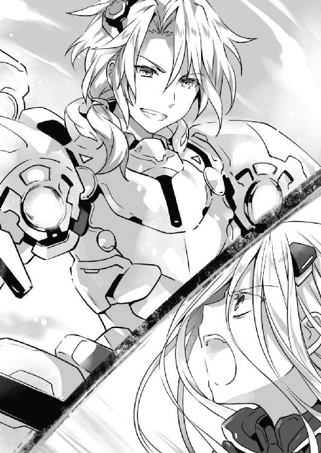
◇
「あーあ、つまんなーい」
「ねー、他の『あたし』は〈ナイトメア〉とバトってるのに。あたしだってもっと派手な仕事したーい」
「ホントホント。きっとエレンよ。エレンがお父様をたぶらかして、あたしを冷遇するよう働きかけたんだわ」
「そうそう。だいたいエレンが悪い」
などと会話を交わしながら、〈ニベルコル〉たちは徒党を組んで地上へと降下していた。
目的は、天宮市街に点在する魔力砲台の破壊である。
眼下には、屋上から断続的に砲撃を続ける雑居ビルや民家などが見て取れた。なんだかもの凄くシュールな光景である。銭湯の高い煙突が高射砲と化しているのなど、もうギャグにしか見えなかった。
とはいえ、見た目が面白いからといって放置できるわけでもない。強力な恒常随意領域で守られた空中艦はまだしも、〈バンダースナッチ〉などが魔力砲の砲撃を浴びたならひとたまりもないだろう。
補充の利く機械人形とはいえ、無尽蔵でもなければ無料でもない。被害を押さえられるのならばそれに越したことはない。
しかし、砲台もまた随意領域で守られているため、上空からの爆撃では辺りの街並みを破壊するだけだった。そこで物量と統率力に優れた〈ニベルコル〉の一団が、その対応を任されていたのである。
「ほら、ぶーぶー言うんじゃないの。お父様のためでしょ」
「早く終わらせてあたしたちも遊びにいきましょ」
「はーい」
「ねぇねぇ、誰と遊びたい？」
「うーん、あたしの力の元になったっていう〈シスター〉かなぁ。あたしのモデルだもの。きっととんでもない美人さんよ」
「ね。お淑やかで、ナイスバディで、非の打ち所のない完璧超人に違いないわ」
女子高生の集団のごとく、〈ニベルコル〉がわいわいと言葉を交わす。
すると、そんな〈ニベルコル〉の一団に向かって、ガガガガガガガッ！ と魔力を帯びた弾丸が何発も放たれた。
「きゃっ！」
「いったーい！」
緊張感のない悲鳴を上げて、数人の〈ニベルコル〉の頭が、身体が弾け飛ぶ。
残った〈ニベルコル〉が見やると、砲台の周りに〈ラタトスク〉の魔術師が数名、浮遊していることがわかる。どうやら、彼らが〈ニベルコル〉たちに攻撃を仕掛けてきたらしい。
「やったわねー！」
「許さないんだからー！」
損傷した頭部や胴体をみるみるうちに再生させ、〈ニベルコル〉が叫びを上げる。
「な......っ!?」
するとそんな様に驚いたのか、魔術師たちが顔面を蒼白にしながら魔力弾を連射してきた。
「ふん──」
身体が一つ二つやられたとてさしたる損害ではないが、痛いものは痛い。〈ニベルコル〉たちは一斉に手を掲げた。
『〈神蝕篇帙・頁〉』
そしてこれまた声を揃え、その名を唱える。
するとその声に合わせるようにして、〈ニベルコル〉の手にしていた紙が宙に舞い、魔力弾から彼女らを守る障壁となった。
「なんだと......ッ!?」
魔術師の狼狽に満ちた声が辺りに響く。
だが、それで終わりではなかった。残った紙数枚が、空中で自動的にぱたぱたと折りたたまれたかと思うと、その姿を紙飛行機に変え、弾丸のようなスピードで魔術師たち目がけて飛んでいったのである。
「うが......ッ！」
「ぐ──！」
紙飛行機は魔術師たちの随意領域を易々と貫くと、肩を、足を貫通して空へと抜けていった。そののち、ブーメランのような軌道を描き、〈ニベルコル〉の元へ戻ってくる。
「きゃははは！ もっろーい！」
「〈ラタトスク〉って精霊の味方じゃなかったの？ あたしも一応精霊なんだけどなぁ」
「あ、だからバチが当たったんじゃない？」
「なるほど、きゃはは」
〈ニベルコル〉はけたけたと笑うと、再び手を掲げ、紙飛行機の先端を魔術師たちに向けた。
「く......」
「じゃっあねー」
が、〈ニベルコル〉がそれを放とうとした次の瞬間、後方から凄まじい突風が吹き荒れ、〈神蝕篇帙・頁〉を吹き飛ばした。
「きゃっ！」
「な、何よこれぇ」
髪を、スカートを押さえ、〈ニベルコル〉が後方を振り向く。
すると、限定霊装を纏った少女が、巨大な剣を振りかぶり、〈ニベルコル〉に斬りかかってきた。──精霊・十香である。
「はぁぁぁぁぁッ！」
「きゃあっ！」
すんでのところで左右に分かれ、その一撃を避ける。すると十香の背後から、それぞれ左右の肩に羽のような霊装を纏わせた精霊・八舞姉妹が現れ、地上砲台を守っていた〈ラタトスク〉の魔術師たちに声を投げた。
「ここは我らに任せるがよい！」
「退避。下がっていてください」
「......！ す、すまん......！」
魔術師たちが、〈神蝕篇帙・頁〉に貫かれた肩を押さえながら後方へと離脱していく。それを横目で確認すると同時、耶俱矢、夕弦は十香の横に並んで油断なく〈ニベルコル〉を睨め付けてきた。
三人もの、精霊。その様を見て、〈ニベルコル〉は驚いたように目を丸くしたのち、ニィと唇を歪めた。
「きゃはは、これマジ？」
「〈プリンセス〉に〈ベルセルク〉？ 武闘派が揃ってくれちゃって」
「砲台破壊なんてハズレかと思ったら、気が利いてるじゃない」
口々に言って手を掲げ、風に舞った〈神蝕篇帙・頁〉を手元に呼び寄せる。すると紙飛行機の形に折られていたページが一枚の紙に戻り、別の形を作っていった。
──折鶴。それが何羽も連なり、まるで千羽鶴のような様相を呈す。
「ふふ、さっきみたいに風で飛ばせると思ってたら痛い目をみるわよ」
「油断してたら穴だらけよ」
「さあ、その前にあたしの首を落とせるかしら」
「もっとも、それに意味があるとは思えないけれど」
「あたしは一にして全、全にして一」
「何人殺そうと、〈神蝕篇帙〉がある限り死なないわ」
「きゃはは、死のない女をどう殺す？」
余裕に満ちた笑みを浮かべながら、〈ニベルコル〉が折鶴を構える。
が、十香と八舞姉妹は油断なく〈ニベルコル〉を睨みながらも、攻撃を仕掛けてこようとはしなかった。
「......？」
機を窺っているのか、〈ニベルコル〉の殺し方を考えているのかとも思ったが──違う。彼女らの目には、迷いらしきものが見えなかった。
静かに──だが力強く、彼女らが言葉を発する。
「〈ニベルコル〉。悪いが、おまえたちの相手は私たちではない」
「呵々、そういうことよ。汝らには相応しい相手がいる」
「首肯。夕弦たちはその護衛に過ぎません」
「......はあ？」
〈ニベルコル〉は全ての個体で一斉に眉根を寄せた。
精霊は、〈ラタトスク〉の保有する戦力の中でもトップクラスに位置するはずだ。彼女らに代わるとなると、元アデプタス２・崇宮真那くらいのものだろうか。
だが、仮にその魔術師が現れたところで、状況が劇的に変わるとは思えない。何しろ〈ニベルコル〉は幾度幾人殺そうと──
「............へっ？」
思考の途中で、〈ニベルコル〉は素っ頓狂な声を上げた。
十香たちの後方から、砂埃をかき分けるようにして歩いてきたその人物の顔を目撃して。
──それは、年若い一人の少年だった。
中肉中背の体軀に、中性的な面。霊装を纏っているわけでもなければ、ＣＲ‐ユニットを装着しているわけでもない。
ただの、高校生の、少年だった。
「五河......士道？」
呆然と目を見開き、その名をこぼす。
そう。上空からの爆撃で瓦礫の山と化した街並みを歩いてきたのは、他ならぬ〈ニベルコル〉たちのターゲット、五河士道その人だったのである。
ウェストコットが死ねば、ＤＥＭの敗北。
五河士道が死ねば、〈ラタトスク〉の敗北。
明文化されたルールがあるわけではないけれど、その事実は双方認識しているはずだった。
それゆえ〈ニベルコル〉も、士道は強固な空中艦の中に隠れていると信じて疑わなかったのだ。少なくとも、こんなにも無防備に最前線に歩み出てくるなど、微塵も思っていなかった。その驚愕が、しばしの間〈ニベルコル〉の動きを止めたのだった。
だが、そんな隙も数瞬のことである。〈ニベルコル〉は驚きの表情を不敵な笑みに変えると、こちらに歩いてくる士道を睨め付けた。
「ふぅん......何のつもりかしらないけど、随分大胆じゃない」
「あんたがあたしの相手？ きゃはは、舐めてるの？」
「まあどっちにしろ、お父様にいいお土産ができた──わッ！」
〈ニベルコル〉は大きく振りかぶると、千羽鶴と化した〈神蝕篇帙・頁〉を士道に放った。
「ふ──ッ！」
が、十香と八舞姉妹が士道を守るように飛翔し、幾羽もの折鶴を打ち払う。
とはいえ、その行動は予想の範疇であった。
〈ニベルコル〉の強みは絶対的な『個の力』ではなく、全てを押し流す『数の力』。〈ニベルコル〉は三〇体ほどの身体を精霊の対応に回すと、残りを士道の方へと向かわせた。
「きゃははははははははは──ッ！」
哄笑を上げながら、一体の〈ニベルコル〉が士道に肉薄する。
十香たちは遥か背後。如何に精霊とはいえ、このタイミングでは間に合うまい。
〈ニベルコル〉は、士道の心臓を貫くように手を抜き手の形にした。
が──
「〈ニベルコル〉」
次の瞬間、沈黙を保っていた士道が、不意に優しい声を発した。
「──愛してるよ」
「..................、は？」
予想外に過ぎる言葉に、〈ニベルコル〉は一瞬目を丸くしてしまった。
が、それはまだ、士道の奇行の序章に過ぎなかった。
士道はその瞬きほどの隙に、〈ニベルコル〉の首に手を回すと──
「────」
そのまま〈ニベルコル〉を引き寄せ、自分の唇を、〈ニベルコル〉の唇に触れさせてきたのである。
「............ッ!?」
突然のことに、頭の中が疑問符で埋め尽くされる。意味がわからない。死が目前に迫ったことにより判断力を失ったのか？ しかしそれにしては迷いなく。そもそもそれならばなぜ戦場へ？ これが敵の秘策？ 馬鹿な。死のない〈ニベルコル〉がこんなもので──
「ん......ふぁ......？」
〈ニベルコル〉は違和感を覚えた。身体が融けるかのような錯覚。姿勢を保っていられない。顔が熱い。焼ける。心が。どろどろに。でもそれが、なぜかここちよくて──
──淡い光とともに、〈ニベルコル〉の身体が泡と消え、一枚の紙がひらひらと地面に落ちていく。
その紙も、地に触れた瞬間、光の粒子となって空気に溶け消えた。
「は......っ!?」
「何よ──それ......！」
横からその光景を見ていた個体が、目を見開いて声を震わせる。
するとその個体までもが、心臓の異常な動悸を覚えたかと思うと、脳内麻薬が分泌したような多幸感に襲われ──先ほどの個体のように、恍惚の中で光と消えていった。
◇
「......き、キス!? 〈ニベルコル〉と......!?」
〈ラタトスク〉とＤＥＭの交戦開始直前。
〈フラクシナス〉の艦橋でマリアから告げられた〈ニベルコル〉の対処法に、士道は驚愕の表情を作った。
否、士道だけではない。周りに居並んだ精霊やクルーたちもまた、士道と似たような顔をしている。
が、マリアは至極落ち着いた口調で以て、ペカペカと画面を明滅させながら続けてきた。
『はい。キスです。──擬似的なものとはいえ、〈ニベルコル〉も精霊には変わりありません。実際、彼女から観測されるのは魔力ではなく霊力です。ならば、士道の力で封印することができるのも必定でしょう』
「ちょ、ちょっと待ってくれ。仮にマリアの言うとおりだとしてもだ。精霊の封印には好感度が必要だろ。相手が心を開いてくれてない状態じゃ、いくらキスしても......」
士道は頰に汗を垂らしながら言った。
そう。そのことは今まで何度も琴里や令音から言われていたことだった。仮に〈ニベルコル〉の隙を衝いてキスができたとしても、相手はＤＥＭに生み出され、明確な敵意と殺意を持って士道の命を狙っている精霊である。霊力の封印が可能とは思えなかった。
かといって、悠長に〈ニベルコル〉の好感度を上げているような猶予もまた、ない。マリアの提案は机上の空論という他なかったのである。
だが。マリアは士道の返答ももっともであるというように息を吐いて（正確には、そのように聞こえる音声を発して）続けた。
『──確かにその通りです。ですが、それはあくまで、普通の精霊の場合です』
「ど、どういうことだ......？」
『思い出してください。〈ニベルコル〉の出自を。彼女たちが、一体何から創られたのかを』
「何から......って」
士道が言いながら二亜の方を向くと、精霊たちもほぼ同時にそちらを向いた。急に注目を浴びた二亜が、「ウッフン」と身体をくねらせる。それには誰も反応しなかった。
曰く、〈ニベルコル〉は〈神蝕篇帙〉の力を元に生み出された精霊。そして魔王〈神蝕篇帙〉は、もともと二亜の持つ書の天使〈囁告篇帙〉だったのである。
『そう。〈ニベルコル〉の根源は〈神蝕篇帙〉。しかしその霊結晶は、全てが二亜から奪われたわけではないのです』
「それって、つまり......」
琴里が何かを察したように眉をピクリと動かす。マリアが『ええ』と返答した。
『二亜。あなたは士道のことをどう思っていますか？』
「え？ 判子用意してくれればいつでも養ってあげる気満々だけど」
二亜がきょとんとしながらもそう返す。するとマリアがどこか不機嫌そうに咳払いをしてから続けた。
『返答の仕方に若干の腹立たしさは感じますが、そういうことです』
「ちょっと待って。〈ニベルコル〉の封印可否は、二亜の好感度と連動してるっていうの......!?」
『恐らく。──下世話な表現になりますが、口では嫌がっていても身体は正直なちょろインといったところです』
『............』
本当に下世話な表現に、士道たちは額に汗を滲ませた。
とはいえ、もしマリアの説が本当ならば、難敵〈ニベルコル〉を無力化できるかもしれない。〈バンダースナッチ〉と〈ニベルコル〉。相手の主戦力たるこの二つがなくなるのならば、数で劣る〈ラタトスク〉にも勝機が見えてくるだろう。
が、そこで琴里がブンブンと首を横に振った。
「もし仮にそれが本当だとしても、危険過ぎるわ。だって〈ニベルコル〉とキスをするってことは、敵の目標である士道が戦場に出る必要があるってことでしょう？」
「む──」
琴里の言葉で十香たちも気づいたのか、難しげな顔を作る。
確かに、常識で考えれば有り得ない策である。何しろ、もっとも厳重に隠しておかねばならない人物を、最前線に送りだそうというのだ。
「............」
──けれど。士道に迷いはなかった。
「やろう。それしか方法がないなら。むしろ......この上なく俺たちらしいやり方じゃないか」
士道はそう言うと、決意に満ちた目を皆に向けた。
◇
──キスの感触とともに、腕に抱いた少女の身体が光の粒になって消えていく。
「............」
その不思議な感覚に、士道は数瞬の間その場に立ち尽くした。
否、正確に言うとそれだけではない。
士道と〈ニベルコル〉のキスを目撃した、付近の〈ニベルコル〉たちもまた、顔を真っ赤にしたかと思うと、胸元を押さえて身を捩ったかと思うと、同様に消えていったのである。
その現象の可能性は、事前にマリアから示唆されていた。
〈ニベルコル〉は、一にして全、全にして一の群体生命。
それゆえ、『キスをされた個体』と、『自分がキスをされたと認識してしまった個体』に、同様の効果が現れる可能性があるというのである。
完成された群体にして、死のない軍隊、〈ニベルコル〉の、意外に過ぎる穴。
この戦場でもっとも脆弱な士道こそが、最強の軍団を討ちうる唯一の刃だったのだ──！
「──さあ、始めようか〈ニベルコル〉。俺とおまえの、戦争の時間だ」
士道は静かに、しかし力強くそう宣言すると、〈ニベルコル〉を挑発するように指をクイ、と曲げてみせた。
「......ッ！」
「舐めんじゃ──」
「ないわよ──ッ！」
封印を免れていた〈ニベルコル〉たちが、その表情を怒りに染め、一斉に襲いかかってくる。
【はぁっ！】
士道は自分の声に〈破軍歌姫〉の霊力を込めると、裂帛の気合いとともに身体に力を漲らせた。
如何に封印が可能とはいえ、相手は精霊。基礎的な身体能力には天と地ほどの差がある。〈ニベルコル〉の素早い動きを捕らえるためには、天使の力が不可欠であった。
「だぁらぁぁぁぁぁッ！」
「死んじゃえぇっ！」
叫び、〈ニベルコル〉が四方から同時に攻めてくる。
予想外の事態に焦っているようで、冷静な対応である。確かに士道の唇は一つしかない。多方向から同時に迫られては、同時に対応することは不可能だった。
しかし。
「──〈氷結傀儡〉！ 〈贋造魔女〉！」
士道はその名を呼ぶと、空気中の水分を結集し、自分の背後に三本の巨大な氷柱を形作った。
そして次の瞬間、〈贋造魔女〉の力で以て、その氷柱を士道そっくりの姿に作り替える。
「んな......ッ!?」
突然のことに、迫っていた〈ニベルコル〉たちがギョッとする。
恐らくそれは、時間にすれば一秒に満たない僅かな間だろう。
けれど、〈破軍歌姫〉によって身体能力と反射神経を強化された士道にとって、それは十分に過ぎる時間だった。
「──ん──」
「............ッ!?」
前方に迫っていた〈ニベルコル〉を捕らえ、その唇を奪う。
「は......にゃあ......」
するとその個体と、その光景を目撃してしまった個体が、またも纏めて光の粒子となった。
「な......何なのよ、あんたはァァァッ！」
遠方に陣取っていたため生き残った〈ニベルコル〉が、悲鳴じみた声とともに展開する。
今度は士道に突っ込んできたりはしない。バッと手を掲げると、身体の周囲に浮遊していたページが円錐状にくるくると丸まり、その先端を士道に向けてきた。
なるほど、キスで封印されてしまうなら、近づかなければいい。単純だがいい手である。
「だが──」
──『認識』によって消えてしまうというのであれば、あるいは。
士道は右手を自分の唇に持っていくと、円錐を放とうとしている〈ニベルコル〉の集団に向かって、勢いよくその手を弾くような動作をした。
「ん............ちゅっ」
そう。まるで──キスを飛ばすかのように。
俗に言う、『投げキッス』というやつである。
「うぐ......！」
「はう──っ!?」
士道の投げキッスを受けた〈ニベルコル〉たちが、頰を紅潮させて胸元を押さえる。
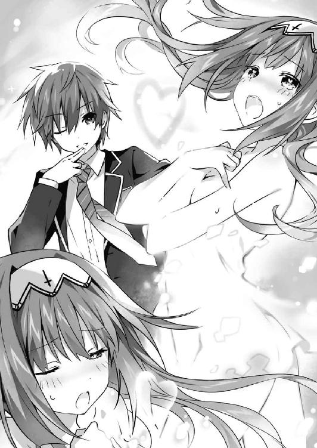
「──〈颶風騎士〉！」
士道はその隙に風に乗ると、一瞬で〈ニベルコル〉たちに肉薄し、その唇を奪った。
「あん......っ」
「あふっ──」
蕩けるような声を残して、周囲の〈ニベルコル〉が消えていく。
遠くに残った〈ニベルコル〉たちが、怯えるように「ひっ」と声を漏らした。
「さあ......次は誰だ？」
「き......きゃぁぁぁっ！」
「お父様ぁぁぁっ！」
悲鳴を上げて、〈ニベルコル〉が逃げ惑う。
しかし、如何にか弱い少女に見えても、他の魔術師や精霊たちの脅威には変わりない。士道は、なんだか自分が女の子をいじめているかのような罪悪感を覚えながらも、〈颶風騎士〉で風を巻き起こした。
「逃がさないぜ──子猫ちゃん」
──そして、愛の嵐が巻き起こった。
逃げ惑う〈ニベルコル〉、立ち向かってくる〈ニベルコル〉、恐怖に震え瓦礫に身を隠す〈ニベルコル〉。
それら一切合切の区別なく、士道は優しく甘い愛の言葉を囁き、唇を奪っていった。
その姿、まさに精霊無双。
異常に気づいた〈バンダースナッチ〉や他の魔術師たちが上空から駆けつけようとするが、士道を守る任を帯びた十香と八舞姉妹を突破できる者はいなかった。
やがて、地上砲台を破壊するために飛来してきた〈ニベルコル〉の大半が、光と消える。
「ふ──ッ」
けれど、未だ〈ニベルコル〉の姿は地上に溢れている。次なる戦場目がけて、士道は彼方に見える〈ニベルコル〉の密集地帯へと駆けていった。
と──
「シドー！」
不意に上空から、十香の声が響く。
次の瞬間、士道は背後に何者かの気配が現れるのを感じた。
「く......！」
──〈ニベルコル〉に誘い込まれ、不意を衝かれた......!?
思考は一瞬。後悔も一瞬。士道は背後の気配に向かって手を伸ばした。
仮に一撃をもらっても、即死でなければ〈灼爛殲鬼〉の力で再生することができる。ならば士道がすべきことは、命を賭してでも彼女の唇を奪うことである──！
──が。
「え？」
「......っ」
次の瞬間。士道は目を丸くして動きを止めた。
理由は単純。〈ニベルコル〉だと思って引き寄せた人影が──
「......あら、あら。大胆ですのね、士道さん」
左右色違いの目をした、妖しい笑みを浮かべる少女だったからだ。
第五章 精霊の復活
「はぁ......っ、はぁ......っ」
ひとけの無い路地裏に身を隠しながら、少年は肩を激しく上下させていた。
額には玉のような汗が浮かび、押さえた腕からは血が滲んでいる。少年は痛みを耐えるようにギリと奥歯を嚙みしめると、背を壁に付けてずりずりと地面に腰を下ろした。
「だ、大丈夫か、澪......」
「うん......それより、腕を見せて」
少年が問うと、一緒に路地裏に逃げ込んでいた澪は、険しい顔をしながら少年の腕に手をかざしてきた。
すると、澪が手をかざした部分が淡く光り輝いたかと思うと、次第に腕にあった痛みが消えていく。
「わ......こりゃすごいな」
「霊力で傷を塞いだだけ。──それより」
言いながら、澪がちらと通りの方を見やる。
そちらからは、少年たちを探すように、幾つもの足音と声がひっきりなしに響いていた。
「......ああ。あいつら一体何なんだよ」
建物の隙間をちらつく影を睨み付けながら、小さな声で呟く。
そう。少年と澪は今、謎の集団に追われているのだった。
追われる理由も、彼らの正体もわからない。ただ、少年と澪がいつものように街を歩いていると、何人もの外国人たちが現れ、突然襲いかかってきたのである。まるでチープなアクション映画のワンシーンだった。
「............」
と、澪が唇を引き結びながら押し黙る。少年は不思議そうに首を傾げた。
「ん？ どうした、澪」
「......多分、あの人たち、私を追ってきたんだと思う」
「え？」
「奥にいた人たちに見覚えがある。前に話した、私が最初に見た人たち」
澪は眉根を寄せながら言うと、沈痛な面持ちで続けてきた。
「......ごめんなさい。私のせいで、君を巻き込んでしまった。──逃げて。あとは私が......」
「やなこった」
少年は澪の言葉を遮ると、反動を付けるようにしてすっくと立ち上がった。
「え──」
「爆心地の真ん中にいた女の子に声を掛けた時点で、こっちは大概のトラブル覚悟してんだよ。それに──」
少年は澪の手を取ると、赤くなった頰を見せまいと顔を背けながら言った。
「俺たち......家族だろうが」
「............！」
澪の手が、驚いたようにビクッと震える。そしてそののち、手がきゅっと握り返された。
言葉などいらない。それが何よりの回答である。少年は小さくうなずくと、澪の手を引いて歩き出した。
「──とりあえず、警察だ。ヤバイ連中に追われてるって言って保護してもらおう。法治国家舐めんじゃ......」
が、そこで、少年は足を止めた。
理由は単純。路地裏を進んでいったところで、一人の男と鉢合わせたからだ。
明るい金髪に、精悍そうな顔つき。黒い服を身に纏った欧米人である。間違いない、少年たちを追っている集団の一人だった。
「......！ 下がって！」
澪が少年をかばうように前に出る。
「澪！」
「大丈夫、殺しはしない......！」
言って、澪が男を睨み付ける。
しかし、その緊張感は長くは続かなかった。──男が、額に手を当てながら大きなため息を吐いたからだ。
「......おいおい、マジかよ。なんでよりにもよって俺のところに来ちまうんだよ」
そして、流暢な日本語でそう言ってくる。
「え......？」
思わぬ反応に少年と澪がキョトンとしていると、男は落ち着いた声音で続けてきた。
「............、澪ってのは、この子の名前か？」
「......ああ、俺が付けた」
「そうか。いい名前だ」
男はそう言うと、澪に視線を移した。
「なあ、今──幸せかい」
「......少なくとも、敵意のある相手に追いかけられて喜ぶ性癖は持っていないよ」
「いや、そうじゃなくてだな。......その少年と一緒にいたいかい、ってことさ」
「............」
澪は油断なく男を見据えながらも、こくりとうなずいた。
「そうか」
男は大きな息を吐きながらそう言うと、親指を立てて路地の奥を示した。
「──行きな」
「......は？」
予想外の言葉に、少年は目を見開いた。一瞬、少年や澪を油断させるための手かとも思ったが、彼からは微塵も敵意のようなものが感じ取れなかった。
「ど、どういうことだよ」
「どうもこうもねえよ。いいから早く行け。でないと──」
「！ いたぞ！ こっちだ！」
次の瞬間、男の声に被るようにして、通りの方からそんな叫び声が響いてきた。激しい足音とともに、三名の追っ手が走ってくる。
「ああもう、いわんこっちゃない」
男はオーバーアクション気味に肩をすくめると、額に手を置き、キッと視線を鋭くして地面を蹴った。
そして少年と澪をすり抜け、迫っていた追っ手たちの鳩尾に掌底を叩き込む。
「かは......ッ!?」
「ウッドマンさん、何を......！」
追っ手たちが苦しげに声を上げ、地面に突っ伏す。ウッドマンと呼ばれた男は面倒そうに頭をかくと、もう一度少年たちを促すように路地に親指を向けた。
「......行け。その子を──澪を頼んだぞ、坊主」
「......っ、あ、ああ......！」
仲間割れか、裏切りか──彼らの事情はわからなかったが、助けられたことは確からしい。少年は短く言うと、澪の手を取って走り出した。
だが、それからどれくらい走った頃だろうか、不意に澪の手に力が入ったかと思うと、少年は突然ぐいと後方に引っ張られた。
「うわっ!?」
急にブレーキをかけられ、ガクンと身体を揺らす。
すると次の瞬間、パン！ と乾いた音が響くと同時、少年の真ん前──要は、一瞬前まで少年がいた位置に火花が散った。
「な......」
と、少年が眉をひそめると、それに合わせるようにして、前方の路地から、銃を構えた追っ手たちが数名、姿を現した。
そしてその最奥から──一際目を引く男が一人、歩み出てくる。
歳の頃は二〇代前半といったところだろうか。くすんだ銀髪に、錆び付いたような色の双眸が特徴的な長身の男である。表情や物腰は柔らかかったが、その身に纏った異質な空気は隠しきれていないようだった。
「──久しぶりだね、精霊。会いたかったよ」
「............」
澪が渋面を作る。けれど男は気にする素振りもなく、少年の方に目を向けてきた。
「そちらの少年は初めましてだったね。我々の精霊を保護してくれていてありがとう。本当に感謝している。無論、相応のお礼も用意しているよ」
男が薄い笑みを浮かべながら言ってくる。まるでペットを扱うかのようなその言葉に、少年は思わず語気を荒らげた。
「ふざけ──」
が。
「──君の妹を『保護』している。お互い、正しい場所へ返そうじゃないか」
「な......ッ!?」
「......っ」
次いで男の発した言葉に、少年と澪は息を詰まらせた。
「てめぇッ、真那に何かしてみやがれ、絶対に許さねえぞ......！」
「ほう？ マナというのかね、彼女は。はは、これは洒落が効いている。精霊が流れ着いたのもうなずけるというものだね」
一体何がおかしいのか、男が笑う。
無論、真那を攫ったというのがはったりという可能性もある。だが、彼らの手勢と狂気があれば、噓と断ずることはできなかった。
少年と同じことを考えたのだろう。澪が、思い詰めた顔をしながら一歩前に進み出た。
「......約束して。私が行けば、真那を返すと」
「ああ、もちろんだとも」
「澪!?」
少年は驚愕の声を上げた。しかし、澪はゆっくりと首を振る。
「......いいんだ。もともと私は、ここにいるはずのなかった存在。私のせいで、真那を危険に晒すわけにはいかないよ。──ひとときでも、君といられて幸せだった」
「──、......ッ」
少年の喉から、声にならない声が漏れる。澪は優しく微笑むと、男たちの方へと歩いていった。
だが──
「......っざ、けんな......ッ！」
少年は震える身体に活を入れると、地面を蹴って澪の手を取った。そしてその手を引いて、一目散に逃げ出す。
「！ 待て！」
「この──」
追っ手たちが慌てた声を発し、銃を撃ってくる。地面や壁に銃弾が当たり、火花を散らした。
「っ、何を──」
「馬鹿野郎！ こういう手合いが本当に約束なんて守ると思ってんのか!? 澪を手に入れたからって、奴らが俺と真那を殺さない保証がどこにある！」
「......っ！ それは──」
「おまえがこっちにいる限り、あいつらは真那に手を出せやしない！ なら──ここは態勢を立て直して、真那を取り返して澪もそのまま万々歳ってのが最高のルートだろうが！」
少年は走りながら叫びをあげた。澪が、ハッとした様子で目を見開く。
「......！ うん......！」
が──その瞬間。
「──やれやれ、困ったな。私は噓を吐いているつもりはなかったんだが」
視界の端に、男が大口径の銃を構える姿が映ったかと思うと──
少年の胸を、熱い感触が襲った。
「ぁ────？」
一拍置いて、自分が銃で撃たれたのだとわかる。
激痛。全身に震動が伝わり、息ができなくなる。がくりと足がくずおれ、その場に転倒。じわり、じわりと生ぬるい水たまりに浸るような感覚。
「──!? ──！」
澪が、何かを言っている。必死に、何かを叫んでいる。
けれど、やがてその声さえも聞こえなくなっ
◇
幾度目とも知れぬ剣閃が、空に魔力の光を散らす。
アルテミシアは微かに眉を歪めると、折紙の繰り出すレイザースピアを振り払った。
「──やっぱり、やるね」
「あなたこそ」
アルテミシアの言葉に応えるように、折紙が返してくる。
とはいえ、二人の戦闘能力が決して同等でないことは、今までの戦いで何となくわかっていた。
確かに折紙の力は驚異的である。ＣＲ‐ユニットに限定霊装と天使をハイブリットさせるなど、恐らくこの世界で彼女にしか不可能な芸当だろう。
だがそれを加味してなおこの勝負、アルテミシアに分があった。もしも折紙が精霊の力を十全に振るっていたならば話は違っていたかもしれなかったが、悲しいかな力を封印された状態の彼女では、アルテミシアを倒すことは難しいだろう。
とはいえ、恐らくそれを理解しているのはアルテミシアだけではない。
折紙もまた、今の自分ではアルテミシアに敵わないことを理解している。だからこそ、アルテミシアを殺りに来るのではなく、あえて時間を掛けるような防戦をしているのだろう。
そう──まるで、何かを待ってでもいるように。
「............」
アルテミシアは、ちらと周囲の様子を見やった。
周囲には、大量の〈バンダースナッチ〉やＤＥＭの魔術師、そしてそれと戦う真那や精霊〈ハーミット〉と〈ゾディアック〉の姿が見受けられる。この乱戦の中、アルテミシアと折紙が一騎打ちのような状態になっているのは、彼女らが周りで魔術師たちを押しとどめているからに他ならなかった。
──アルテミシアをここに釘付けにするのが目的？ 否、確かに敵のナンバー２の戦力を押さえ込めるというのは大きいが、それをする意味があるのは数で勝る側だ。アルテミシア一人を足止めするためだけに、主力である精霊三人と魔術師一人を使うというのは、いくらなんでも効果に見合っていない。
「一体──何が狙いなのかな？」
「............」
軽く揺さぶりをかけてみるが、折紙は表情をぴくりとも動かさなかった。
折紙の怖さは、単純な力よりもむしろその狡猾さにある。このまま続けていても負けはしないだろうが、できるだけ早めに勝負を決めたいところではあった。
しかしそのためには、せめてもう一人手勢が欲しいところだった。実力が拮抗していなくてもいい。最低限、折紙の逃げ道を塞ぐ者がいてくれれば──
「──！」
と。思考の途中、アルテミシアはぴくりと眉を揺らした。
網膜に投影されたセンサーに、友軍のシグナルが確認されたからだ。
折紙に注意を払いながらそちらに目をやると、数名の魔術師たちが、辺りの乱戦を抜け、こちらに近づいてきているのが見て取れる。
纏っているユニットから見て、ＤＥＭの魔術師ではなく、応援を要請された現地のＡＳＴだろう。精霊と対する戦力としては正直心許なかったが、サポートが欲しいこの状況においては願ってもない増援だった。
「ちょうどよかった。こちら、ＤＥＭインダストリー第二執行部所属、アルテミシア・アシュクロフト。コールサインはアデプタス２よ。只今精霊と交戦中。手を貸してちょうだい。敵の逃げ道さえ塞いでくれれば──あとは、私が片付けるから」
アルテミシアはそう言うと、折紙目がけて空を蹴ろうとした。
が。
「......悪いけど、期待には添えないわ。──何せ私ら無職なもんでね！」
次の瞬間、後方からそんな声が響いたかと思うと、ＡＳＴ隊員たちが一斉射撃を行った。
──アルテミシアに、向けて。
「な......っ!?」
突然の事態に、アルテミシアは目を見開いた。
アルテミシアを包む随意領域にレイザーカノンが直撃し、目映い光を放つ。
無論、凡百の魔術師が放つ砲撃程度が、アルテミシアの強固な随意領域に傷を付けることはなかった。けれど、予想外の攻撃に一瞬だけ、アルテミシアの意識がそちらに向いてしまう。
そして、その一瞬は、向かい合う敵にとって黄金よりも価値のある時間であった。
「──ふ────ッ！」
アルテミシアの注意が逸れた隙を衝いて、折紙が肉薄してくる。周囲に撒き散らされた魔力を吸収し、必滅の力を帯びたレイザースピアが、アルテミシアに向かって繰り出された。
「──ッ」
だが。アルテミシアもまた──怪物。
アルテミシアは咄嗟に随意領域を操作すると、自分の身体を無理矢理ねじ曲げるように力を加えた。めりめりぼきんと肋骨が悲鳴を上げる。間違いなく折れてしまっただろう。
けれど、それによって、アルテミシアは折紙の一撃を回避することに成功した。否──回避、というのは贔屓が過ぎるだろうか。折紙の刃は見事に随意領域を貫き、アルテミシアの脇腹を深々と切り裂いていたのだから。
しかし、内臓は無事だ。一撃で戦えなくなるような致命傷ではない。アルテミシアはレイザーブレイド〈アロンダイト〉で、折紙の身体を袈裟懸けに斬り付けた。
「く......ッ」
空に血がしぶき、折紙が苦悶の声を発する。アルテミシアは顔中に汗を浮かべながら強がるように唇を笑みの形に歪めた。
「相打ち──いや、私の勝ちかな」
すると折紙は、彼女には珍しく、唇の端を上げてみせた。
「......いいえ。私の──私たちの、勝ち」
瞬間──
「え......？」
アルテミシアは、奇妙な感覚に声を裏返らせた。
視界の端に、妙なものが見える。
それは──鍵だった。
錫杖のように巨大な鍵の先端部分が虚空から顔を出し、アルテミシアの側頭部に突き刺さっていたのである。
天使。鍵の天使〈封解主〉。
折紙の遥か後方。そこに、虚空に鍵の先端を突き刺した精霊、〈ゾディアック〉の姿が見て取れた。
そこで、ようやくアルテミシアは理解した。
ＡＳＴが注意を引きつけ、折紙が勝負を決めに来たのではない。その折紙さえも、に過ぎなかったということに。
「〈封解主〉──【開】」
鍵の生えた虚空の向こうから、そんな声が響くと同時、鍵が回され──
「あ──」
アルテミシアの頭の中に、堰を切ったように、夥しい量の情報が流れ込んできた。
「......さすが、隊長。正しい判断をしてくれて......助かった」
「っざけんじゃないわよあーもーこれで戻れないわ。グッバイ私の公務員生活......」
などという、折紙とＡＳＴ隊員との会話が、微かに鼓膜を震わせてくる。
およそ戦場に似つかわしくない緊張感に欠けた会話を聞きながら──アルテミシアの意識は、押し寄せる記憶の波に覆い尽くされていった。
◇
「──うふふ。士道さん、いつまでそうしていらっしゃるおつもりですの？ まあ、わたくしとしても吝かではございませんけれど、残念ながらここは戦場の真っ只中でしてよ？」
「......！ あ──」
狂三に言われて、士道はハッと肩を震わせ、手を離した。
乱戦の中、〈ニベルコル〉だと思って抱き寄せたのが、こともあろうに彼女だったのである。
しかも背に、〈刻々帝〉の巨大な時計盤を背負っている。──分身体ではない。本物の精霊・時崎狂三だ。
「狂三、俺──」
士道は声を発し......すぐに止めた。否、意思とは裏腹に、止まってしまった。
この戦場に狂三がいることは知っていたし、狂三に会って言いたいことはそれこそ山のようにあった。
けれど──否、だからこそ、突然の狂三との遭遇に、頭の中に幾つも言葉が押し寄せて、士道の口から発される前に詰まってしまっていたのだ。
「あら、あら」
狂三はそんな士道を見てか、妖しく唇の端を歪めると、そのまま士道の首に手を回してきた。そして、そのままぐいと身体と身体を密着させる。
「な──!?」
一瞬どきりとするが、士道はすぐに冷静さを取り戻した。
その直後に頭の後ろで響いた、けたたましい銃声を聞いて。
「きゃは......ッ」
士道の後方に迫っていたと思しき〈ニベルコル〉が、コミカルな断末魔を上げて身を仰け反らせる。どうやら狂三が、手にした銃で額を撃ち抜いたらしい。
「油断大敵、ですわよ」
「あ、ああ......ありがとう、狂三。助かったよ。おまえは──命の恩人だ」
「うふふ、随分と大げさですわね」
戯けるような調子で狂三が言う。だが、その言葉は大げさでもなんでもなかった。それどころか、きっと士道の心の裡にある気持ちの、一パーセントも伝えきれていないだろう。
「違うよ。今だけの話じゃない。今まで──何度も俺を助けてくれて、本当に、ありがとう。どうしても......直接言いたかった」
「............」
士道が言うと、狂三は一瞬押し黙った。けれど、すぐに気を取り直すようにうふふと微笑んでくる。
「あら、あら。どういたしまして。それではお礼に、士道さんの霊力をいただけませんこと？」
「それはまた別の話だ！」
「うふふ、それは残念ですわね。ではまた迫り方を変えるといたします......わッ！」
士道と狂三は互いに声を張り上げると同時、地面を蹴った。
別に仲違いしたわけではない。各々、迫ってきた〈ニベルコル〉の撃退に向かったのである。
狂三が連続して影の銃弾を放って〈ニベルコル〉を撃ち抜き、士道は投げキッスで怯ませた〈ニベルコル〉を抱き寄せて唇を奪う。その様を見ていた他の〈ニベルコル〉たちが、頰を赤くし苦しみ悶えて消えていった。
「ふ......あはは、はははっ！ なんですのそれは！」
士道の〈ニベルコル〉撃退法を見てか、狂三が心底おかしそうに笑う。
「無尽蔵に復活してくる〈ニベルコル〉を、そんな手段で......？ うふふ、なるほど、敵に狙われているはずの士道さんが最前線にいる理由がわかりましたわ。最初戦場に士道さんの姿を認めたときは、あまりの無謀さに殺してしまいたくなりましたけれど」
「おいおい......」
士道はその物騒な物言いに苦笑したが、狂三の気持ちもわからなくはなかった。自分が様々なものを犠牲にしてまで守った人間が、全裸で地雷原を走っているようなものである。狂三ならずとも、殺意を覚えはするだろう。
けれど、それは士道だって同じことだった。
琴里から、まずはこの戦いを生き残ることを念頭に置けと言われてはいた。
二兎追う者は何とやら。たとえ狂三に出会っても、深追いはするなと注意されてはいた。
だが、止められなかった。乱戦の中での奇跡のような邂逅。この機を逃したなら、もう士道は、狂三の手を取れない気がしてならなかったのである。
士道は〈ニベルコル〉を千切っては投げしながら声を張り上げた。
「──狂三！ 俺を助けてくれたのには心から感謝してる！ おまえのお陰で精霊たちも反転せずに済んだ！ ありがとう！......でもな、ＤＥＭが総力を挙げて襲ってくるから大人しく隠れてろだ!? 俺はそこまで頼んだ覚えはねえぞ！ おまえの命と引き替えに助けてもらったって嬉しくも何ともないからな！」
「......あらァ？ 随分傲慢になられましたことね。わたくしは単に、士道さんの霊力が欲しいだけでしてよ。それに、命と引き替えに？ 見くびってくれますわね。わたくしが、この時崎狂三が、ＤＥＭごときに後れを取ると申しまして？」
「......んっ、いや実際苦戦してるだろ強がるなって！」
士道が〈ニベルコル〉にキスをしてから叫ぶと、狂三が「......んなっ！」と苛立たしげに視線を鋭くした。
「強がってなどおりませんわ！ 士道さんは大人しく艦の中で丸くなっていればいいのですわ！ そして全てが終わったあと感涙に噎び泣きわたくしに霊力を差し出せばいいのですわ！」
「それ俺にとっては殺されるのがＤＥＭからおまえになっただけだよな!?」
「だから申したではありませんの！ わたくしは士道さんの霊力で全てをやり直すと！ 気づいたときにはもう新しい世界ですわ！ 精霊も何もなく！ ただ穏やかな世界に戻るのですわ！」
「歴史には修正力があるんじゃねえのかよ！ そう上手くいくと思ってんのか!?」
「実際に歴史改変を成功させた人にだけは言われたくありませんわ！」
「そういえばそうだったなチクショウ！」
この上ない証拠を示されて、士道は悲鳴じみた声を上げた。
士道は以前、狂三の天使〈刻々帝〉の力を借りて、歴史改変を成功させたことがあったのである。
「そうですわ！ 『士道さんが死ぬ』こと自体がなかったことになりますのよ！ それの何が不満ですの!?」
「不満に決まってるだろうが！」
「だから、一体何が──」
「全部なかったことになるってことは......俺とおまえが出会った！ その事実さえなくなっちまうってことだろうが！」
「............ッ！」
士道が叫ぶと、狂三は息を詰まらせた。
「俺はおまえが好きだ！ おまえとの出会いが無くなっちまうなんて耐えられない！」
「な......何を仰っていますのこんなときに！ 頭でも打ちまして!?」
「打ってねえよ！ 至って正常だ！ ていうか狂三！ おまえだって俺のこと大好きだろうが！」
「は......ッ!?」
士道の言葉に、狂三が目を見開く。
「何を......！ 勝手に人の感情を語らないでくださいまし！」
「いーや間違いないね！ 好きでもねえ相手のために、二〇〇回以上も時間を繰り返すかよ！」
「だから、それはあなたの霊力のために──」
「俺が【一〇の弾】で、おまえの記憶を追体験してることを忘れるなよ!?」
「────」
狂三がハッと息を吞む。
そう。士道は先日、〈刻々帝〉【一〇の弾】によって、狂三の過去を知った。
けれど、そのとき士道の頭に流れ込んできたのは、狂三が復讐に至る記憶のみではなかったのだ。
断片的な──しかし確かな、士道への想い。
思わず赤面してしまうほどに熱い乙女の感情が、余波のように士道の心に撒き散らされていたのである。
「......、......！ ......」
狂三は顔をトマトのように赤く染めながら、しばしの間苦しむように身を捩ったのち、どうにか呼吸を整えて士道を睨み付けてきた。
「......仮にそうだとしてもその言葉、別の女性にキスしながら言うなんて最低ですわね」
「それは本当に申し訳ない！」
士道は素直に謝罪しながら、〈ニベルコル〉と熱い口づけを交わす。〈ニベルコル〉はしばらく足をジタバタさせていたが、やがて「はにゃあ......」と蕩けるような声を発して光と消えた。
狂三はそれを横目で見てフンと鼻を鳴らすと、銃把を握る手に力を入れながら喉を震わせてきた。
「だからといって──わたくしに目的を諦めろと仰いますの？ わたくしが奪ってきた幾つもの命を見捨てろと仰いますの？ ──紗和さんを、見殺しにしろと仰いますの？」
静かな──しかし激しい憤怒と怨嗟が込められた声で、狂三が言う。
まさか、と士道は首を横に振った。
「言っただろ。俺はおまえの記憶を追体験してるんだ。そんな簡単に......諦めろだなんて言えるかよ」
「......では、どういうおつもりですの？ なかったことにするのは反対で、けれどわたくしの目的を諦めろと仰るつもりもない？ いくらなんでも矛盾が過ぎますわよ」
「ああ......そうだな。我ながら滅茶苦茶なことを言ってると思うよ。──でもな！」
士道は前方の〈ニベルコル〉目がけてキスを飛ばしながら叫びを上げた。
「滅茶苦茶言わざるを得ないだろうが！ 俺とおまえの希望、両方を叶えるためには！」
「え......？」
「──『全て』じゃない！ 悪かったことだけやり直す！ 展開を取捨選択し、歴史を理想の形に作り替える......！ もしもそれが可能だとしたら、どうだ!?」
喉よ潰れよと言わんばかりに絶叫を上げる。狂三は士道が何を言っているのか理解できないというように眉根を寄せた。
「な、何を仰っていますの......？ 意味がわかりませんわ。そんなことが可能だと仰いますの......？」
「わからん！」
「............」
士道が断言すると、狂三は渋面を作った。しかし士道は当然と言うように続ける。
「そりゃあそうだろう！ 試したことなんてないんだから！ でも、賭けてみる価値はあるはずだ！」
「......一応聞いて差し上げますわ。──そんな夢物語、一体どうすれば実現すると仰いますの？」
「よく聞いてくれた！ まずは、俺がおまえの霊力を封印する！」
士道の言葉に、狂三が「はっ」と息を吐いた。
「聞いて損をしましたわ。論外ですわね。話に──」
が。
士道は構わず続けた。
「──そして、俺が俺の霊力を使って、〈刻々帝〉で三〇年前に戻る......ッ！」
「............、は──」
それを聞いて。
狂三が、目を点にする。
「どういう......ことですの？ そんなの、わたくしが行くのと変わりは──」
「あるさ！ 狂三には、始原の精霊の誕生を阻止することしかできない！ でも俺になら、始原の精霊の力を封印することができるかもしれない......！」
「封印......!? 始原の精霊の力を封印すると仰いまして......!?」
士道の言葉があまりに意外だったのだろう。狂三が、普段の彼女からは考えられないような狼狽に満ちた声を発する。士道は間髪入れず「ああ！」と首肯した。
「そうとも！ そいつは精霊なんだろう!? なら、それは俺の仕事だ！ どんな巨大な力を持っているかは知らないが、俺が──デレさせる！」
「............!?」
狂三が、呆気にとられたように絶句する。
士道は、その勢いのまま押し切るように続けた。
「そして！ 始原の精霊を封印したなら、俺がその力を使って......歴史をやり直す！ 狂三の身に降りかかった不幸を！ そこから歩んだ修羅の人生を『なかったこと』にしながら！ 俺はおまえと──もう一度出会ってみせる！ それだけじゃない！ 他の精霊たちだってそうだ！ 救いが必要な者には手を差し伸べ、取り返しの付かない過ちを消し去り、俺が！ 最高にご都合主義な歴史を創り出してみせる......！」
「な......に、を......ッ！ なんの勝算があって、そんな──」
「だから、わかんねえって言ってるだろうが！ でも、その始原の精霊っていうのは、全ての精霊の元になった存在なんだろう!? なら、それくらいとんでもない力持っててくれないとな！ それに──一つだけ確かなことがある！」
士道は、ビッ！ と親指を自分の胸に突きつけた。
「言葉を返すぜ、狂三。
俺は──この世界で唯一！ 歴史を書き換えたことのある人間だぞ！」
「────」
言葉を失った狂三が、士道の方をまじまじと見てくる。
が、そこで、前方から悲鳴じみた声が響いた。
「だぁぁぁぁ！ あたしを無視して二人の世界作ってんじゃないわよぉぉぉ──ッ！」
そんな〈ニベルコル〉の叫びとともに、辺りに何枚もの本のページが、吹雪の如く舞い踊る。
そして無数のページは一人の〈ニベルコル〉に結集していき、その身体を甲冑のようにぴっちりと覆った。
「〈神蝕篇帙・頁〉──【装集篇】......ッ！】
紙の鎧を纏った〈ニベルコル〉が地面を蹴り、凄まじいスピードで狂三に迫る。士道と狂三はハッと肩を揺らすと、同時に銃弾と、熱い投げキッスを放った。
が──
「ふんッ！」
〈ニベルコル〉が、銃弾を弾き、ついでに士道の投げキッスをものともせずに猛進してくる。
それもそのはず、〈ニベルコル〉の身体に纏わり付いた紙の鎧は、彼女の目元をも完全に覆い尽くしていたのである。
「......っ」
二人がそれに気づいたときにはもう遅い。〈ニベルコル〉は、狂三の身体能力を以てしても避け得ない位置まで迫っていた。
「狂三──」
「ち......！」
「きゃははははははは！ 死・ねェェェェェッ！」
腕部の鎧を円錐状に変化させた〈ニベルコル〉が、狂三目がけて右手を繰り出した。
──〈ニベルコル〉の鋭い一撃が、凄まじい速度で以て胸元へ迫っていく。
そんな光景を、狂三はまるでスローモーションを見るかのような感覚で眺めていた。
別に〈刻々帝〉で自身が加速したわけでもなければ、本当に〈ニベルコル〉の動きが遅くなったわけでもない。
ただ、意識が凝縮され、一瞬の時間を長く錯覚しているかのような感覚。
いわゆる走馬燈というのは、死の危険に瀕した脳が、今までの記憶、経験から打開策を見つけ出そうとフル回転するため起こるという説がある。
ならば今の狂三も、それに近い状態なのかもしれなかった。意識のみがクリアーで、身体がそれに付いてこない。ただただ、致命的な一撃を迎えつつある。
このタイミングから〈ニベルコル〉の攻撃を完全に回避するのは困難である。一撃で即死さえしなければ狂三には【四の弾】があるが、攻撃をクリーンヒットさせた〈ニベルコル〉が、分身体が駆けつけるまで追撃をしないかどうかは怪しいところだった。
誤算。やはり戦闘は分身体に任せ、本体である狂三は影の中に隠れているべきだったろうか。──否。ただでさえ滅茶苦茶な劣勢である。〈刻々帝〉抜きで戦っては、徒に兵力を浪費するだけだった。
いや、それ以前に、もっと反省せねばならないことがある。
嗚呼──そうだ。士道の声に気を取られたのがいけなかったのだ。
如何に〈ニベルコル〉の攻撃が早いとはいえ、隙を衝かれなかったなら、〈刻々帝〉の弾を込める時間はあったはずだ。
とはいえ、それも仕方のないことではあった。
それくらいに──士道の言葉は、声は、狂三の心を揺さぶってしまったのだから。
あまりに幼稚で、荒唐無稽な机上の空論。
けれど、狂三は思ってしまったのだ。
それが叶ったのならば、どんなに素敵だろうと。
その夢に身を委ねられたのならば、どんなに幸せだろうと。
もしもこのまま死んでしまうのであれば、せめて、士道に自分の力を託してから──
「──と、『わたくし』なら、そう思いますわよねェ？」
と。
研ぎ澄まされた意識の中、まるで狂三の心を読んだかのような声が響いた。
その瞬間。
狂三の影の中から、眼帯を付けた狂三の分身体が現れると、狂三に迫っていた〈ニベルコル〉の一撃を、その身で以て受け止めた。
──間違いない。あのとき狂三が生かし置いた、五年前の狂三の再現体である。
狂三の視界に鮮血の華が咲き、眼帯の狂三の身体を突き抜けて、〈ニベルコル〉の手の先端が顔を覗かせる。
「『わたくし』......ッ!?」
そこでようやく、意識に身体のリアクションが追いついた。喉から、驚愕の声が漏れる。
けれど、狂三はすぐに冷静さを取り戻した。
〈ニベルコル〉に身体を貫かれた眼帯の狂三がちらと狂三の方を見、
「──ね、ェ......？ お役に、立ちました......でしょう？」
そう言って、誇らしげにニィと微笑んだからだ。
「────、ええ。不本意ながら、生かしておいた甲斐がありましたわ」
狂三は即座に銃に【四の弾】を込めると、眼帯の狂三の肩越しに〈ニベルコル〉を狙い撃った。
影を凝縮したような銃弾が、〈ニベルコル〉の全身を覆う紙の鎧に炸裂する。時間を巻き戻す【四の弾】は、鉄壁の鎧を、バラバラの紙へと変化させた。
「ひ──っ」
突然丸裸にされた〈ニベルコル〉が息を詰まらせる。
すると次の瞬間、既に狂三の方へと走っていたらしい士道が〈ニベルコル〉の首に手を回し、そのまま唇を奪った。
「や──ん......っ」
甘い声を残し、〈ニベルコル〉が光の粒になる。士道はそれを見届けると、すぐさま狂三の方に視線を寄越してきた。
「大丈夫か、狂三！」
「......ええ」
狂三はそう答えると、血塗れで倒れ伏した眼帯の狂三に目をやった。士道もそれを目にしてか、表情を悲痛な色に染める。
しかし、眼帯の狂三は満足げに笑うと、
「『わたくし』、どうか......自分の心に......素直に──」
そう言って、影の中へと沈み込んでいった。
「狂三、その──」
「──気になさらないでくださいまし。既に死んでいたはずの『わたくし』ですわ。どうしようもない分身体でしたけれど、死ぬ前にようやく役に立ちましたわね」
「......っ、そんな言い方をすること......」
言いかけて、士道が言葉を止める。──きっと、唇を引き結ぶ狂三の横顔が見られてしまったのだろう。
「......っ」
狂三は一瞬士道から顔を背けると、気を取り直すように息を吐いてから士道に向き直った。
そう。狂三は、士道に問わねばならない。
死を覚悟した瞬間、頭を掠めた思いが、本当に正しかったのかを確かめるために。
狂三の命を救った眼帯の分身体の言葉に、本当に従っても良いのかを確かめるために。
「──それよりも。士道さん、今のお話、一体どの程度本気ですの？」
狂三が目を見据えながら問うと、士道は小さく眉を揺らしてから答えてきた。
「もちろん──心から」
「............」
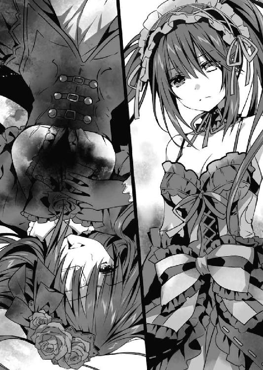
真っ直ぐな視線で目を見返しながら、士道が答えてくる。
──嗚呼、嫌だ。本当に嫌だ。
彼は、心の底から、本当に実現可能かどうかすらわからない可能性を信じている。
そして、それがどれだけ苦難に満ちた修羅の道であるかを理解しながら、本当に、成し遂げようとしている。
そう。士道は、微塵も噓を吐いていないのだ。
狂三に語った夢物語も。
きっと──その前に発した『俺はおまえが好きだ』さえも。
「......ああ、ああ、馬鹿げていますわね」
狂三は、自嘲するように息を吐き、続けた。
「ねえ──士道さん。覚えておられまして？ わたくしたちの、『勝負』のことを」
「え？」
狂三が言うと、士道は目を丸くしたのち、答えてきた。
「......デレさせたら、勝ち？」
「──ふふ」
狂三はふっと口元を緩ませると、言葉を続けた。
「話の続きは、戦いのあとにいたしましょう。ＤＥＭを退け、士道さんから命の危機が去ったあとならば──この唇、あなたに捧げても構いませんわ」
「......！ 本当か、狂三......！」
士道が目を見開き、驚くように言ってくる。
それを見て、狂三は思わず笑ってしまいそうになった。──あれだけ格好をつけたのだから、最後まで超然としていればいいのに、子供のように目を輝かせて。
「......本当に、可愛いですわね」
「え？」
「何でもありませんわ。──それより、あくまでＤＥＭを倒したならば、ですわよ。うふふ、士道さんにそれができまして？」
「ったりまえだ！ それくらいできなくて、始原の精霊なんて相手にできるかよ！」
士道は力強くそう言うと、狂三にすっと手を差し出してきた。
まるで、一緒に行こう、とでも言うように。
「......ふふ」
狂三はふっと頰を緩めると、その手を取るように手を伸ばした。
すると、その瞬間──
◇
「あ......あ、あああ、ああああああああああああああああ────ッ！」
──慟哭が、世界を支配していた。
目からは滂沱と涙が溢れ、喉からは悲鳴とも絶叫とも取れぬ声が絶え間なく漏れる。
しかしそんなものは、澪の途方もない悲しみの一端さえも示しきれていなかった。
今この場にいるのは、澪と──その前に横たわった少年のみである。
澪の手を取って逃げようとした少年が凶弾に倒れた瞬間、澪は怒りと悲しみと混乱に意識を支配され、無差別に辺りに霊力を撒き散らして周囲を破壊し、その場を逃れていたのだ。
少年の身体には、傷一つない。当然だ。澪が霊力を以て傷を塞いだのだから。
けれど──少年は目覚めなかった。
確かに澪の力があれば、傷ついた身体を治すことは可能だ。
しかし一度失われてしまった命を取り戻すことだけは、できなかったのである。
「なん......で......どうして......ッ」
澪は──泣いた。
それこそ、どれくらいの時間が経ったのかもわからないくらいに、泣いて、泣いて、泣き尽くした。
だが、それでも涙は止まらない。
澪は少年に感謝していた。
少年のことが好きだった。
少年が澪を見つけてくれなければ、きっと今の澪はいなかったに違いない。居住環境と、衣服と、食糧。そして知識を与えてくれた。それは、澪もよく理解しているつもりだった。
しかし──違った。
そんなものでは、なかったのだ。
少年が死んでしまって、二度と会えなくなってしまって、ようやくわかった。
少年が澪の中で、どれほど大きな存在だったのかが。どれほどかけがえのない存在だったのかが。
彼一人がいなくなっただけで、あんなにも色鮮やかだった世界が灰色にしか感じられなくなってしまった。あんなにも希望に溢れていた日々から、何もかもがなくなってしまった。
きっと最初の出会いは偶然だったのだろう。けれど今は何の誇張でもなく──少年は、澪の生きる理由であり、全てになっていたのだ。
もしも自分が少年に出会わなかったならば。
もしも自分が少年に頼り切らなければ。
もしも自分が──潔く死を選んでいたならば。
──少年は、死なずに済んだかもしれないのに。
詮ない後悔が、頭の中を駆け巡る。
「......っ、......」
澪は嚙みしめた唇から血を滲ませながら、ガリガリと頭を、肌を搔き毟った。
思考を回転させる。少年に拾われてから今に至るまでに蓄えた知識と、それらから導き出された推測、想像を全て用い、この絶望を打破する手段がないかを考え抜いた。
しかし、考えても考えても、答えは出てこなかった。
人間というのは酷く脆い。たとえあの瞬間を乗り越えたとしても、あの男たちに狙われていたなら、いずれ少年は死んでしまうだろう。
否、それだけではない。人間というのは、酷く短命だ。
書物で得た知識と己の実感値との違い。人間は澪とは異なり、長くともせいぜい一〇〇年程度しか生きることができないのだ。
もしも全ての問題を排除して少年と添い遂げることができたとしても、少年は澪より遥か先に死んでしまう。その事実に、澪は耐えられるだろうか。
「............」
少年の笑顔をもう一度見るためには。
そして、少年と少しでも長くともにいるためには、一体、何をすればいいのか。
澪は考えた。
ひたすらに──考えた。
──どれくらい、そうしていただろう。
「............ぁ............」
いつの間にかカサカサになってしまっていた唇から、小さな小さな声が漏れた。
「そう......か......」
澪はよろよろと身体を起こすと、静かに眠る少年の顔を覗き込んだ。
「──作り直せば......いいんだ」
そしてそう呟いて、少年の頰を撫でる。
そう。
それが、長い長い思考の果てに、澪が至った答えであった。
──澪は、ぺろりと唇を舐めて湿らせると、ゆっくりと、少年の顔に自分の顔を近づけていった。
そして、その唇に、自分の唇を重ねる。
少年の唇はまだ柔らかかったけれど、もう、体温は失われていた。
「............」
澪は集中するように目を伏せた。
自分を取り巻く世界、それを、頭の中で変質させるような感覚。
すると、少年の身体が淡い光の粒と化し──澪の身体に、吸い込まれていった。
「............んっ............」
少年の身体を完全に吸収し、澪は小さな吐息とともに身を起こした。
そして、優しく自分の腹部を撫でる。
「──私が、もう一度産んであげる。
今度は絶対に死なないように。
今度は絶対に壊れないように」
一度死んだ少年が生き返ることはない。
ならば──自分の胎を使って、少年を、そっくりそのまま作り直せばいい。
否、そっくりそのまま、というのは語弊があろうか。
澪の胎内で身体を再構成する過程で、少年に澪の力を分け与える。
少年は、少年としての身体を持ったまま、精霊の力を得ることになるのだ。
嗚呼──だが、それだけでは駄目だ。
ヒトの身体はあまりに脆い。一度に全てを与えては、きっと耐えきれず自壊してしまうだろう。
少しずつ、少しずつ。
幾つもの因子に分けて、力を少年に与えねばならない。
だから、最初に用意するのは一つだけでいい。
──『力を吸収するための、力』。
いつか、いつの日か、少年が産まれ、育ち、安定した身体を手に入れたときに。
一つずつそれを手に入れられるように、世界に種を撒く。
澪はそれを、側で見守っていればいい。
そうして、少年が全ての力を手に入れたそのとき──
少年は、何者にも害されぬ力を持ち、
永劫にも近い命を持った、
澪の、永遠の恋人となるだろう。
「──もう、絶対離さない。もう、絶対間違わない」
澪は、お腹を撫でながら呟いた。
「だから......待っててね。──シン」
◇
「────っ、へ......？」
戦場の中。
士道は、なんとも間の抜けた声を発した。
だがそれも無理からぬことであろう。何しろ、こちらに向かって手を伸ばしつつあった狂三の胸元から、狂三のものではない別の手が現れたのだから。
何の比喩でも冗談でもない。まるで狂三の胸に花が咲くように、生白い肌の腕が生えていたのである。
奇妙な既視感。士道は、以前にもこんな光景を見たことがあるような気がした。
そうだ。あれは六月。学校の屋上。
士道に向かって手を伸ばそうとしていた分身体の狂三の胸を、背後から本物の狂三が貫いた光景だ。
一瞬、まさかあのときと同じことが起こったのだろうかという思考が、脳を掠める。
けれど、今目の前にいる狂三は、紛れもなく本物の狂三であるし、その胸から生えている腕は、どことなく狂三のそれとは異なる気がした。というかそれ以前に、分身体の狂三が本物の狂三の胸を貫けるとも思えない。
だが、だとするとこれは──
「......え？」
一拍遅れて、狂三も気づいたらしい。自分の胸元に視線を落とし、何が起こっているのかわからないといった様子で目を見開く。
「これ、は......一体......？」
「あ────」
狂三が呆然と声を発していると、少しずつ、少しずつ、腕が伸びていった。
まるで、狂三の中から、『何か』が這い出てこようとでもしているかのように。
「あ、あ......あ、あ、あ、あ、あ............ッ」
「狂三！」
ぎちぎちと音を立て、腕がその根元を外気に晒していくに従い、狂三が苦しげな声を発する。士道は思わずその名を呼んだ。
しかし、その進行は止まらず、やがて──
「......時崎狂三。感謝するよ。君は最後まで、私の素晴らしい友人だった」
そんな声とともに、『それ』は、姿を現した。
To Be Continued
あとがき
橘「17巻のサブタイトル、何にしましょう」
編「なんかこう、決戦感が欲しいですよね」
橘「狂三ウォーズ......？」
編「狂三ハルマゲドン......？」
橘「狂三ラグナロク──」
編「かっこいい」
橘「かっこいい」
そんな感じで決まった17巻のサブタイトル。かっこいい。男の子は皆、心に耶俱矢を住まわせているものさ。
というわけでお久しぶりです。好きなマリオはインディーゴ。橘公司です。『デート・ア・ライブ17 狂三ラグナロク（かっこいい）』をお送りいたしました。いかがでしたでしょうか。お気に召したなら幸いです。
タイトルは狂三ですが表紙はニベちゃん。思えば初カラーイラストですね。背景のニベちゃんズがいい味出してます。かわいい。
前巻から続きの17巻となりましたが、今回は前々から書きたかったシーンがいろいろ書けて非常に楽しかったです。あれとか、あの辺とか。特にラストの部分は、『デート』構想時から考えていたシーンだったので感慨深いです。
今巻も、様々な方々のご尽力によって本を出すことができました。
イラストレーターのつなこさん、毎度素敵なイラストをありがとうございます。お忙しいところ、地味に新デザインが必要なやつ増やしてすみません。担当氏、今回もご苦労おかけしました。デザイナーさん、編集、営業、出版、流通に関わる全ての方々、そして、今この本を手に取ってくれているあなたへ。本当に、ありがとうございます。
さてあのラストから一体どうなるのか。士道くんの活躍に乞うご期待でございます。
では、また次巻でお会いできることを楽しみにしております。
二〇一七年七月 橘 公司
橘公司
●たちばなこうし
東京都在住。第20回ファンタジア長編小説大賞準入選作『蒼穹のカルマ』でデビュー。
琴里「なぜ狂三の目は時計なの？」
狂三「精霊化の影響ですわ」
琴里「身体にそこまで大きな変化が？ ってことは、まさか──」
二亜「あたしたちの胸も精霊化の影響で!? くっ......本当ならＦカップくらいあったはずなのに！」
狂三「......かもしれませんわね」
カバー・口絵・本文イラスト／つなこ
カバーデザイン／草野剛
デート・ア・ライブ17
狂三ラグナロク
橘公司
平成29年8月20日 発行
(C)Koushi Tachibana, Tsunako 2017
本電子書籍は下記にもとづいて制作しました
富士見ファンタジア文庫『デート・ア・ライブ17 狂三ラグナロク』
平成29年8月20日初版発行
発行者 三坂泰二
発行 株式会社ＫＡＤＯＫＡＷＡ
〒102-8177 東京都千代田区富士見2-13-3
ＫＡＤＯＫＡＷＡ カスタマーサポート
［WEB］http://www.kadokawa.co.jp/
（「お問い合わせ」へお進みください）